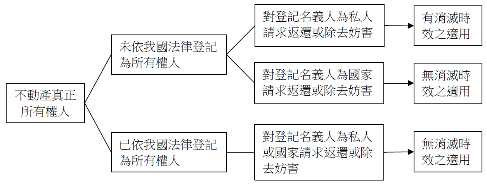
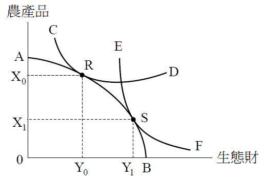
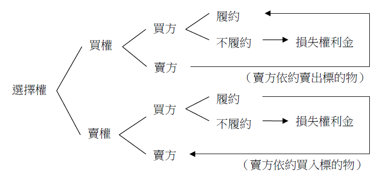
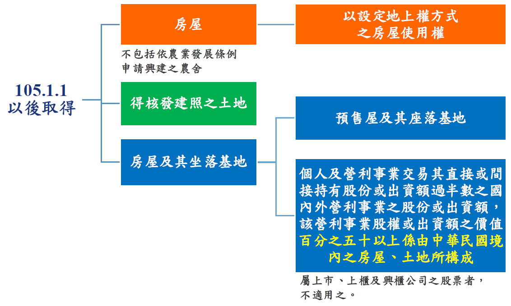
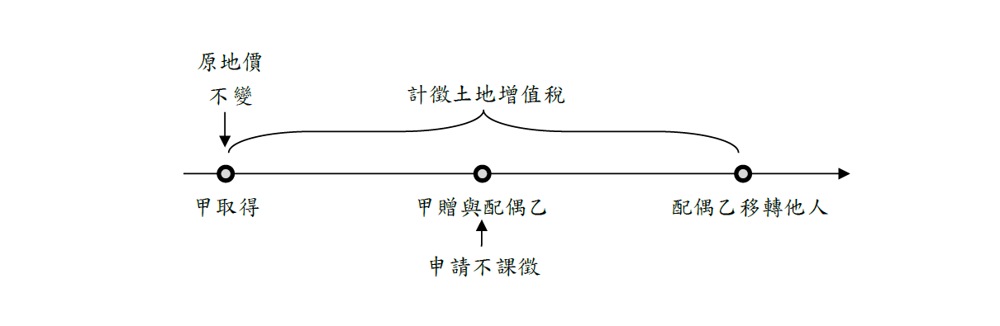
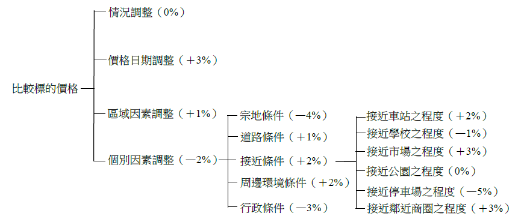
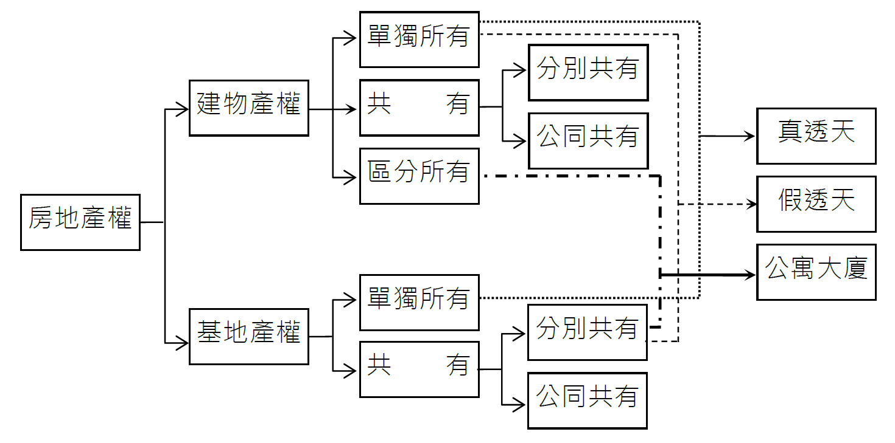

年度合輯：2025 年¶
共收錄 138 篇文章。
1. 112年憲判字第20號判決之影響¶
發布日期: 2025-01-02
112年憲判字第20號判決除否定土地法第57條登記為國有之效力外，亦補充司法院釋字第107號及第164號之解釋。
112年憲判字第20號判決理由提及，本件所示土地所有權爭議中，國家不得主張適用民法消滅時效之規定。其理由如下：
• (一) 國家就其與人民間之私權爭議，原則上固得主張相關規定所賦予之權利。然而，國家係為人民而存在，本質上既不可能擁有如人民般得自由發展之人格及維繫生存之需求，亦不可能如人民般享有得自由追求之私益，只能追求公益，以執行公共任務為職志。從而，國家自無受憲法第15條所保障財產權之基本權利。
• (二) 國家基於公權力主體地位行使統治高權，致與人民發生財產權爭執時，國家本非憲法第15條財產權保障之主體，從而不生基本權衝突之情事。
• (三) 一般而言，權利人長久未行使其權利者，消滅時效制度固具有早日確定私法上權利義務狀態、維持法律秩序之公益性。惟國家與人民間關於土地之爭議，若非來源於兩者之合意，而係國家於政權更替之際，居於公權力主體地位，行使統治權，制定相關法規範，並依該規範將原屬人民私有而僅未及時申辦總登記之土地，逕行登記為國有之情形，倘又容許國家嗣後再以時間經過為由，依民法消滅時效規定為時效完成之抗辯，不啻變相承認國家得透過土地總登記之程序，及消滅時效之抗辯，而無須踐行任何徵收或類似徵收之程序，即可剝奪人民之財產。
（參見：112年憲判字第20號判決理由）
司法院釋字第107號解釋文：「已登記不動產所有人之回復請求權，無民法第一百二十五條消滅時效規定之適用。」司法院釋字第164號解釋文：「已登記不動產所有人之除去妨害請求權，不在本院釋字第一０七號解釋範圍之內，但依其性質，亦無民法第一百二十五條消滅時效規定之適用。」上開二則解釋文，再補充加入112年憲判字第20號判決理由，其結果（如圖所示）如下：
• (一) 不動產真正所有權人，尚未依我國法律登記為所有權人，如登記名義人為私人，不動產真正所有權人行使民法第767條之物上請求權，請求返還不動產或除去妨害，有消滅時效規定之適用。
• (二) 不動產真正所有權人，尚未依我國法律登記為所有權人，如登記名義人為國家，不動產真正所有權人行使民法第767條之物上請求權，請求返還不動產或除去妨害，無消滅時效規定之適用。
• (三) 不動產真正所有權人，已依我國法律登記為所有權人，不論登記名義人為私人或國家，不動產真正所有權人行使民法第767條之物上請求權，請求返還不動產或除去妨害，無消滅時效規定之適用。
[圖片1]
文章圖片¶

注：本文圖片存放於 ./images/ 目錄下
2. 農業用地變更使用之主管機關同意條件¶
發布日期: 2025-01-06
簡要整理農地變更之條件，茲說明如下：
• (一) 不影響農業生產環境完整性+農業主管機關同意
-
農業用地於劃定或變更為非農業使用時，應以不影響農業生產環境之完整，並先徵得主管機關之同意。(農業發展條例§10)
-
農業用地變更使用，應避免影響農業生產環境之完整。有下列情形之一者，不同意變更使用(農業主管機關同意農業用地變更使用審查作業要點§5)： (1)未依規定規劃設置隔離綠帶或設施。 (2)使用具有農業灌溉功能之系統作為廢污水排放使用或有妨礙上、下游農業灌排水系統輸水能力之虞。 (3)申請變更範圍內夾雜未申請變更之農業用地且妨礙其農業經營。 (4)妨礙原有區域性農路通行。 (5)申請變更農業用地辦理部分土地分割，致造成坵塊零碎不利農業經營。但線狀之公共建設，不在此限。 (6)目的事業主管機關就事業設置之必要性與計畫使用農業用地所提區位、面積之必要性、合理性及無可替代性，未提出評估意見或未表示支持意見。 (7)其他依本要點規定不得同意變更使用之情形。目的事業主管機關對於興辦事業人申請農業用地變更，應就事業設置之必要性與計畫使用農業用地所提區位、面積之必要性、合理性及無可替代性，提出評估意見，或具體表示是否支持該興辦事業及土地使用。(農業主管機關同意農業用地變更使用審查作業要點§4)
• (二) 繳交回饋金
農業用地之變更，應視其事業性質，繳交回饋金，撥交第54條中央主管機關所設置之農業發展基金，專供農業發展及農民福利之用。(農業發展條例§12 I)
各目的事業相關法令已明定土地變更使用應捐贈或繳交相當回饋性質之金錢或代金者，其繳交及使用，依其法令規定辦理。但其土地如係農業用地，除民國89年1月4日修正施行前已收繳者，得免予撥交外，各相關機關應將收繳之金錢或代金之二分之一依前項規定辦理。(農業發展條例§12 II)
注：本文圖片存放於 ./images/ 目錄下
3. 市地重劃之辦理方式（舉辦主體）¶
發布日期: 2025-01-07
• 一、公辦市地重劃
• (一) 政府主動選定地區辦理辦理市地重劃時，主管機關應擬具市地重劃計畫書，送經上級主管機關核定公告滿30日後實施之。在前項公告期間內，重劃地區私有土地所有權人半數以上，而其所有土地面積超過重劃地區土地總面積半數者，表示反對時，主管機關應予調處，並參酌反對理由，修訂市地重劃計畫書，重行報請核定，並依其核定結果公告實施。(平§56)
• (二) 地主申請優先辦理適當地區內之私有土地所有權人半數以上，而其所有土地面積超過區內私有土地總面積半數者之同意，得申請該管直轄市或縣（市）政府核准後優先實施市地重劃。(平§57)
• 二、獎勵地主自辦市地重劃
為促進土地利用，擴大辦理市地重劃，得獎勵土地所有權人自行組織重劃會辦理之。重劃會辦理市地重劃時，應由重劃區內私有土地所有權人半數以上，而其所有土地面積超過重劃區私有土地總面積半數以上者之同意，並經主管機關核准後實施之。(平§58)
注：本文圖片存放於 ./images/ 目錄下
4. 公路法之私有公路之土地增值稅問題¶
發布日期: 2025-01-09
• (一) 公路法之私有公路，移轉於自然人，不得適用不課徵土地增值稅。其理由如下：
-
非都市土地供農路使用之道地目土地，雖依法編定為交通用地，仍屬農業用地之範圍（依土地稅法第10條第1項規定，農路屬於農業用地之範圍），如移轉於自然人，得適用土地稅法第39條之2第1項規定（即作農業使用之農業用地，移轉與自然人時，得申請不課徵土地增值稅）。
-
惟依公路法所定義之公路，包括國道、省道、縣道、鄉道及專用公路，非屬於農路，如移轉於自然人，不得適用土地稅法第39條之2第1項規定。
上開乃司法院釋字第779號解釋文第三段之解釋意旨。
• (二) 公路法之私有公路，尚未被徵收前之移轉，得適用免徵土地增值稅。其理由如下：
-
都市土地之公共設施保留地，得適用土地稅法第39條第2項規定（即依都市計畫法指定之公共設施保留地尚未被徵收前之移轉，免徵土地增值稅）。
-
非都市土地供公共設施使用，得適用土地稅法第39條第3項規定（即非都市土地經需用土地人開闢完成或依計畫核定供公共設施使用，並依法完成使用地編定，其尚未被徵收前之移轉，經需用土地人證明者，免徵土地增值稅）。準此，公路法之私有公路，尚未被徵收前之移轉，如符合下列三項條件，免徵土地增值稅： (1)經需用土地人開闢完成或依計畫核定供公共設施使用。 (2)依法完成使用地編定。 (3)經需用土地人證明。
上開乃司法院釋字第779號解釋文第一段之解釋意旨。
• (三) 結論：
依法編定為交通用地之公路法之私有公路，尚未被徵收前而移轉於自然人，雖不得適用土地稅法第39條之2第1項規定（不課徵土地增值稅），但得適用土地稅法第39條第3項規定（免徵土地增值稅）。
注：本文圖片存放於 ./images/ 目錄下
5. 承攬人抵押權登記之性質¶
發布日期: 2025-01-14
• 一、法源依據
• (一) 民法第513條
承攬之工作為建築物或其他土地上之工作物，或為此等工作物之重大修繕者，承攬人得就承攬關係報酬額，對於其工作所附之定作人之不動產，請求定作人為抵押權之登記；或對於將來完成之定作人之不動產，請求預為抵押權之登記。
前項請求，承攬人於開始工作前亦得為之。
前二項之抵押權登記，如承攬契約已經公證者，承攬人得單獨申請之。
第一項及第二項就修繕報酬所登記之抵押權，於工作物因修繕所增加之價值限度內，優先於成立在先之抵押權。
• (二) 土地登記規則第117條
承攬人依民法第五百十三條規定申請為抵押權登記或預為抵押權登記，除應提出第三十四條及第四十條規定之文件外，並應提出建築執照或其他建築許可文件，會同定作人申請之。但承攬契約經公證者，承攬人得單獨申請登記，登記機關於登記完畢後，應將登記結果通知定作人。
承攬人就尚未完成之建物，申請預為抵押權登記時，登記機關應即暫編建號，編造建物登記簿，於標示部其他登記事項欄辦理登記。
• 二、登記類型
• (一) 抵押權登記：針對定作人辦竣所有權第一次登記之建物。
• (二) 預為抵押權登記：針對將來完成所屬定作人之建物。
• 三、性質
• (一) 抵押權登記：屬民法第860條普通抵押權範疇，惟應注意其登記內容應受民法第513條限制，即擔保權利價值及範圍應以承攬約定報酬額為準。
• (二) 預為抵押權登記：係預先、暫時性登記，與已登記不動產之抵押權設定登記有別，主要是保全未來建物完成建物所有權第一次登記後之抵押權登記請求權，故須俟未來建物完成建物所有權第一次登記，並將原本標示部之抵押權內容轉至該他項權利部後，始生預為抵押權轉換為正式抵押權登記之效力，該抵押權始成立。
參考來源： 陳立夫，2024.11，土地法裁判精選-承攬人抵押權之登記，月旦法學雜誌，第354期：151-162。
注：本文圖片存放於 ./images/ 目錄下
6. 借名契約¶
發布日期: 2025-01-16
借名登記源自於借名契約。因此，借名契約之效力關係借名登記之效力。換言之，若借名契約無效，借名登記失其依附，則借名登記失其效力。據此，辦理塗銷借名登記及其附隨登記（如地上權登記、抵押權登記等）。
• (一) 借名契約之意義 借名契約乃當事人一方將自己之財產以他方名義登記，而仍由自己管理、使用、處分，他方允就該財產為出名登記之契約（最高法院98年度台上字第76號判決）。
• (二) 借名契約之法律性質 借名契約類推適用民法委任之規定。所稱委任者，謂當事人之約定，一方委託他人處理事務，他方允為處理之契約（民§528）。
• (三) 借名契約之法律效力
-
借名契約僅規範借名人與出名人之內部關係。出名人對外所為之處分，仍屬有權處分，無民法第118條無權處分之適用。換言之，出名人所為之處分有效。
-
借名契約之內容如不違反法律強制禁止規定或公序良俗者，則借名契約有效。 例如：Ａ公司因農業發展條例第33條規定而無法將耕地登記於其名下，乃與自然人Ｂ成立借名契約，並將該耕地登記於Ｂ名下。現行實務，此借名契約有效。
-
借名契約之內容如違反法律強制禁止規定或公序良俗者，則借名契約無效。 例如：非原住民甲欲購買乙所有之原住民保留地經營民宿，為規避山坡地保育利用條例第37條第2項規定（即原住民取得原住民保留地所有權，如有移轉，以原住民為限）及原住民保留地開發管理辦法第18條第1項規定（即原住民取得原住民保留地所有權後，除政府指定之特定用途外，其移轉之承受人以原住民為限），乃與原住民丙成立借名契約，並將乙之土地所有權移轉登記於丙名下，無異實現非原住民取得原住民保留地之效果，則借名契約無效（108年度台上大字第1636號裁定）。
[圖片1]
【附註】 民：民法
文章圖片¶

注：本文圖片存放於 ./images/ 目錄下
7. 都市計畫訴訟(1)-臺北高等行政法院111年度都訴字第1號判決¶
發布日期: 2025-01-21
• 一、主要法源
行政訴訟法第五章都市計畫審查程序 第237-18條：「人民、地方自治團體或其他公法人認為行政機關依都市計畫法發布之都市計畫違法，而直接損害、因適用而損害或在可預見之時間內將損害其權利或法律上利益者，得依本章規定，以核定都市計畫之行政機關為被告，逕向管轄之高等行政法院提起訴訟，請求宣告該都市計畫無效。」
• 二、案例簡要概述
• (一) 市政府為配合捷運計畫，辦理都市計畫變更。所有權人甲原出租供加油站使用的A、B土地原本全部693平方公尺要配合設置緊急出口、通風口、轉乘設施等相關設施及辦理土地開發。後因土地徵收問題，縮小面積至260平方公尺，並將其由「住宅區」變更為「捷運系統用地」。甲不服爰提起行政訴訟。
• (二) 審理結果判決原告勝訴，宣告主要計畫案及細部計畫案均無效。理由為系爭都市計畫有利益衡量瑕疵：
-
計畫有形成的自由（又稱計畫裁量），但計畫形成自由並非毫無限制，仍須受司法審查，包括計畫的形成有無利益衡量瑕疵，例如行政機關在調查、彙整的階段，沒有將與計畫有關的利益納入衡量之衡量不足。
-
所需土地面積，已由原先693平方公尺縮減至260平方公尺，徵收的必要範圍變小，選地的彈性相對增加，基於此一情事變更，系爭工程使用系爭土地的必要性，應將周邊其他土地的利用可能性一併列入，重新考量。惟該市政府並沒有對相關方案是否可行及利弊得失等，為有關的調查與評估，有衡量不足的瑕疵。
-
其他替代地點涉及其他土地的利用情況，市政府應為必要的調查，方能正確評估其他土地與系爭土地的使用程度、涉及的利益與規模，而後為適當方案的選擇。市政府僅以土地筆數、面積及地主人數等簡略因素，直接在原主要計畫的基礎上，維持在A、B土地上施作捷運設施的方案，也有衡量不足的瑕疵。
• 三、考試重點參考
• (一) 都市計畫的法律性質 本案主要計畫及細部計畫均為依都市計畫法第27條第1項第4款規定辦理的個案變更，依當時法制狀態，是定性為行政處分，依行政程序法第110條第3項規定，於經撤銷、廢止或因其他事由而失效前，其效力繼續存在。又，因是於行政訴訟法都市計畫審查程序專章109年7月1日施行後所發布，已透過立法的方式定性為法規性質，其救濟即應循都市計畫審查程序進行，而不再適用訴願法及行政訴訟法有關違法行政處分的救濟。 因此，行政法院審查的對象是具一般性、抽象性之都市計畫（法規），而非規制具體事件之行政處分。
• (二) 違法審查標準 都市計畫審查程序之違法審查標準，包含有下列幾種類型：
-
違反作成都市計畫之程序規定。
-
都市計畫違反較高位階之法規範（含不成文法）。
-
違反都市計畫之利益衡量原則。
• (三) 利益衡量瑕疵
-
所謂利益衡量瑕疵，係指行政機關於擬定或核定都市計畫時，沒有權衡可能受到計畫影響的各種不同公益與私益，並使各種利益在計畫中處於均衡的協調狀態（即似經濟學上最適境界的狀態）。
-
利益衡量瑕疵有四大類型，包含①衡量怠惰、②衡量不足、③衡量錯估、④衡量不符比例。都市計畫核定機關若有上述四種情形之一時，其計畫形成自由即應受到限制，而應受司法審查。
-
都市計畫本質上係屬行政計畫中，具有強制拘束力之行政行為，惟我國都市計畫法對於各種土地分區管制及公共設施之設置或衡量規定，十分抽象簡陋，甚至於完全缺乏。國內學者對於都市計畫中利益衡量瑕疵，認其明顯違法之指責，包含有： (1)都市計畫審議紀錄過分簡陋而未能載明應考量之重要事項（如：合理性與必要性說明）； (2)定期通盤檢討未於計畫書中說明； (3)逾數十年尚未取得及開闢之公共設施保留地，其仍規劃繼續保留之理由； (4)未說明公園、綠地、體育場所、廣場及兒童遊樂場所計畫面積不足都市計畫面積10%以上之理由（都市計畫法第45 條）； (5)鐵路、公路穿越市中心之具體理由（都市計畫法第44 條後段）； (6)屠宰場、殯儀館、公墓等嫌惡性設施，為何仍未能於都市邊緣適當地點設置之理由（都市計畫法第47 條）
參考文獻：
-
林明鏘，2024，都市計畫審查訴訟之基本問題－兼評臺北高等行政法院111 年度都訴字第1 號判決，新學林法學第2期：1-31。
-
李建良，2023，行政法裁判精選-都市計畫審查與計畫裁量瑕疵（之一），月旦實務選評，第3卷，第10期：27-67。
-
司法院，2023，臺北高等行政法院111年度都訴字第1號原告英屬維京群島商勝方投資有限公司台灣分公司與被告內政部、臺北市政府間都市計畫事件新聞稿
注：本文圖片存放於 ./images/ 目錄下
8. 國土計畫法延後至民國120年4月30日上路¶
發布日期: 2025-01-23
國土計畫法第45條原本規定，直轄市、縣（市）國土計畫法公告實施後四年內，公告國土功能分區圖。公告國土功能分區圖之日起，區域計畫法不再適用。準此，國土計畫法原訂民國114年4月30日上路。然，因民眾擔心農地未來使用受限，迫使朝野立法委員感受地方壓力，於民國113年12月31日將上開四年修正為十年。換言之，國土計畫法延後至民國120年4月30日上路。
基上，政府應儘速提出延後六年上路之配套措施（如修正區域計畫法及非都市土地使用管制規則等），以遏止下列現象發生：
• (一) 農地任意變更，農地持續流失。 (二)農地配合太陽能光電發展，因而假光電之名，行戕害農地之實。 (三)農地違規堆積廢土及殘渣，農地千瘡百孔，破壞肥沃土壤。 (四)農地浮濫開發，農地開發亂象層出不窮。
注：本文圖片存放於 ./images/ 目錄下
9. 都市計畫訴訟(2)-臺北高等行政法院111年度都訴字第2號判決¶
發布日期: 2025-02-04
各位同學新年好，本週專欄延續前次主題「都市計畫訴訟」提供相關案例彙整供參。
• 一、主要法源
行政訴訟法第五章都市計畫審查程序 第237-18條：「人民、地方自治團體或其他公法人認為行政機關依都市計畫法發布之都市計畫違法，而直接損害、因適用而損害或在可預見之時間內將損害其權利或法律上利益者，得依本章規定，以核定都市計畫之行政機關為被告，逕向管轄之高等行政法院提起訴訟，請求宣告該都市計畫無效。」
• 二、案例簡要概述
• (一) 甲之A地位處市政府計畫道路範圍，系爭計畫道路於該處工業區之都市計畫邊陲地帶規劃囊底路提供迴車之功能。考量現況道路調整計畫道路線型，依原計畫道路範圍向東拓寬，將原計畫中0.1875公頃之工業區變更為道路用地，使變更後之計畫道路由15公尺漸變成36.5公尺，得以順接高速公路涵洞口。原告不服認其所有A地，經系爭都市計畫納入系爭計畫道路範圍內，損害其財產權，遂提起本件行政訴訟。
• (二) 審理結果判決原告勝訴，都市計畫核定機關有利益衡量的瑕疵，故宣告該通盤檢討都市計畫案應為違法：
-
明知迴轉道之留設涉及系爭計畫道路寬度之規劃，卻未就與此道路規劃相關之重要事項，例如：進出工業區有迴轉需求之車流量、車輛類型及所需最小迴轉半徑等進行適當之調查或評估，於系爭都市計畫變更理由內無隻字片語提及有劃設迴轉道之需求，未善盡計畫變更之說理義務，即遽將與系爭計畫道路相鄰原計畫中0.1875公頃之工業區變更為道路用地（含原告所有756地號土地），甚至依市政府委外設計規劃之道路改善平面圖所示，劃設迴轉道中央分隔島之寬度長達12公尺，已相當於計畫地區範圍內次要道路之寬度，顯有衡量不足之情，而有明顯利益衡量程序瑕疵。
-
系爭都市計畫依原計畫道路範圍向東拓寬，使變更後之計畫道路由15公尺漸變成36.5公尺，且此道路寬度已遠超越系爭都市計畫範圍內所有主要道路及次要道路之路寬，是否有其必要性，顯非無疑。
-
計畫變更後依交通局之建議，實作道路寬度倘僅仍維持15公尺寬順接高速公路涵洞口，未實質增加供車輛通行之道路寬度及面積，至其餘道路寬度是否均為提供車輛迴轉功能所必要，或僅作植栽景觀綠化方式辦理而與迴車功能無關，並未見系爭都市計畫於變更理由中清楚敘明，顯難認此計畫之變更係為達成前述系爭計畫道路順接承天路等目的所不得不採之必要手段，且非侵害最小之方式，不符憲法比例原則之要求。
參考文獻：
-
司法院，2023，臺北高等行政法院111年度都訴字第2號原告鴻運瀝青化學股份有限公司與被告內政部間都市計畫事件新聞稿。
-
李建良，2023，行政法裁判精選-都市計畫審查與計畫裁量瑕疵（之一），月旦實務選評，第3卷，第10期：27-67。
注：本文圖片存放於 ./images/ 目錄下
10. 環境永續¶
發布日期: 2025-02-06
• (一) 環境永續之意義 環境永續，指能保持這一代優良之生活、生產、生存之環境，也能留給下一代優良之生活、生產、生存之環境。代代相傳，生生不息。
• (二) 追求環境永續之方法
-
碳排減量 (1)淨零排放：指溫室氣體排放量與碳匯量達成平衡（氣§3⑩）。所稱排放量，指自排放源排出之各種溫室氣體量乘以各該物質溫暖化潛勢所得之合計量，以二氣化碳當量表示（氣§3⑦）。所稱碳匯，指將二氣化碳或其他溫室氣體自排放源或大氣中持續移除後，吸收或儲存之樹木、森林、土壤、海洋、地層、設施或場所（氣§3⑨）。 (2)碳中和：指人為溫室氣體排放與移除達到平衡狀態。企業應努力追求碳中和組織、碳中和產品及碳中和服務。
-
循環經濟 (1)土地循環利用：從土地資源之成長量與開採量維持平衡，永保土地資源永續利用。 (2)建材循環利用：建物拆除時，建材回歸再使用，達到零廢棄物之目標。建物應增加使用再生資源之建材，應減少使用非再生資源之建材。
-
生態平衡 (1)物種多元：物種（包括動物及植物）愈多元，生態愈健康。任何一種物種之滅絕，將導致生態失衡。因此，對於瀕臨滅絕之物種，應盡力保護。 (2)友善農耕：儘量利用有機肥料從事耕作，減少化學肥料及農藥的投施。另，森林地之多功能性大於農地，農地之多功能性大於建地。因此，保護森林地應優於保護農地；保護農地應優於保護建地。
【附註】 氣：氣候變遷因應法。
注：本文圖片存放於 ./images/ 目錄下
11. 基地優先購買權之要件探討－合法建物¶
發布日期: 2025-02-11
假設某區已實施建築管理，其中一筆基地之所有權人甲，將其所有之A地租給乙興建建物，惟乙卻未依法申請建照，今甲出售基地所有權人時，試問該違章建築之所有權人乙得否按土地法第104條主張優先購買？
根據土地法第104條規定，「基地出賣時，地上權人、典權人或承租人有依同樣條件優先購買之權。房屋出賣時，基地所有權人有依同樣條件優先購買之權。其順序以登記之先後定之(第一項)。」「前項優先購買權人，於接到出賣通知後10日內不表示者，其優先權視為放棄。出賣人未通知優先購買權人而與第三人訂立買賣契約者，其契約不得對抗優先購買權人(第二項)」。
爭議：該基地上之建物是否需以合法為必要？
• (一) 肯定說 需以合法為必要。 本條優先購買權具物權效力，其解釋適用上除維護權利人之利益外，並應兼顧交易安全與公共利益。由於違章建築有礙於公共安全，隨時有被拆除可能，與土地法第104條之立法意旨有間。 又如未辦竣保存登記，則登記審查時甚難注意，有辦竣登記則可防範糾紛。但亦有學者認為興建房屋屬於法律事實，依民法第759條不以登記為生效要件，故保存登記似非必要。
• (二) 否定說 不需以合法為必要。 違章建築並非不得為交易、讓與之標的，且具一定之經濟價值。然而，該受讓人權利僅為事實上處分權是否符合土地法第104條房地之「所有權」合而為一之立法意旨，尚有爭議。
學說通說原則以合法建築為必要（肯定說）。
注：本文圖片存放於 ./images/ 目錄下
12. 民法§195｜配偶權¶
發布日期: 2025-02-12
在2020年由大法官宣告的「通姦除罪化」，僅代表廢除了刑法上的通姦罪，受損害之配偶仍然可依民事訴訟，向第三者要求配偶權的損害賠償，今天就一起來了解相關內容吧。
配偶權之定義
不法侵害他人基於父、母、子、女或配偶關係之身分法益而情節重大者，準用第一項規定。
配偶權之要點
一、構成要件
- 需故意或過失
- 存在權利損害
- 行為與損害之間須具備因果關係
二、有效證據
- 親密互動 (親吻、摟腰)
- 旅行同遊共宿
- 逾越一般兩性交往之界線(一同前住摩鐵、旅館)
- 鹹濕對話或自拍照片
- 和第三者發生性行為
三、證據的完整性、合法性
- 相關證據越充足，配偶越能獲得應有的賠償
- 若獲取證據的過程不合法，可能會不予採納 (以刀強迫第三者提供對話紀錄)
四、精神撫慰金額度
- 依個案情節狀況各不相同
Ding 老師提醒
在侵害配偶權的訴訟中，目前的多數見解是需要由原告(配偶)來負舉證責任，因此真正遇到時，一定要找相關的專業機構(徵信業、律師)來協助，以免因證據不足而無法獲得應有的賠償。
．延伸閱讀
概念比一比 25｜配偶的剩餘財產分配權 v.s. 遺產繼承權
物權
原文出處：Jasper 不動產
13. 房屋稅條例｜113年修法重點¶
發布日期: 2025-02-12
《房屋稅條例》部分修正條文於已於113年1月3日總統公布，並於113年7月1日實施上路，將於114年5月正式開徵，一起來了解修法後的重點規範吧!
修法理由
為減輕單一自住房屋稅稅負、促進房屋有效利用及合理 化房屋稅稅負，並考量現行房屋稅依房屋使用情形，按月計徵，稽徵作業繁複，應予簡化。為避免房屋所有人藉編釘或增編房屋門牌號碼，將房屋分割為小坪數，形成租稅漏洞，予以防杜。
修法重點
1.自住用房屋：房屋所有人或使用權人之本人、配偶或直系親屬應於該屋辦竣「戶籍登記」，且無出租或供營業情形。
2.全國單一自住：自住房屋現值一定金額以下全國單一自住稅率1%。
此項規定本人、配偶及未成年子女在全國僅持有1戶房屋，供自住且房屋現值在一定金額以下，自住房屋現值一定金額由各地方政府訂定。
3.全國總歸戶：非自住住家用房屋改按「全國歸戶」及調高其法定稅率為2%-4.8%，且各地方政府都必須按納稅義務人全國總持有戶數訂定差別稅率，並採「全數累進」方式課徵。
4.免稅3戶：住家房屋現值在新臺幣10萬元以下免徵房屋稅之適用對象，以自然人持有全國3戶為限。
5.納稅基準日：以每年2月末日為納稅義務基準日，課稅所屬期間為上一年7月1日起至當年6月30日止。
Lemon 老師提醒
修法前房屋稅與地價稅的自住用稅率要件常常使人混淆，在修法後，兩種稅制的自住用要件一致化！且房屋稅改以年計徵，變更房屋使用情形時，應於每期房屋稅開徵40日(即3月22日)以前向當地主管稽徵機關申報唷！
．延伸閱讀
房屋稅
原文出處：Jasper 不動產
14. 民法§1190｜遺囑的內容¶
發布日期: 2025-02-12
說到遺囑，大家第一時間想到的應該都是該如何分配遺產，但其實還有許多事情是可以在遺囑中交代的，今天讓我們一起了解一下吧
遺囑的內容之要點
遺囑能記載的內容包含如下
- 指定遺產分割方式： 在不違反特留分的情況下，可以指定遺產的分割方式。
- 禁止分割與期限： 可以禁止遺產分割，但期限不得超過十年。
- 指定保險受益人： 可以重新指定保險金受益人，建議通知保險公司。
- 認領非婚生子女。
- 指定未成年子女監護人： 必須是「最後行使親權的父或母」才能指定，若另一方仍行使親權則無效。
- 剝奪繼承權： 若繼承人有重大虐待或侮辱行為，可完全剝奪其繼承權。
- 指定遺囑執行人： 可以指定遺囑執行人，負責執行遺囑內容。
- 遺囑信託： 將遺產交付信託，由受託人依遺囑內容管理或處分。
- 捐贈遺產。
- 器官捐贈與大體捐贈。
- 指定喪葬方式。
- 家訓叮囑。
Ding 老師提醒
遺囑內容包含多項財產及事務安排，建議在立遺囑前先確認財產狀況、法定繼承人及想遺贈的對象，以便全盤思考分配比例及是否違反特留分等問題。
．延伸閱讀
原文出處：Jasper 不動產
15. 土地徵收條例§ 58｜土地徵用¶
發布日期: 2025-02-12
政府因興辦臨時性公共建設工程而強制使用私人土地，使用完畢後，再歸還原所有權人
土地徵用vs土地徵收
1. 土地徵用是對於【使用權】
2. 土地徵收是對於【所有權】
Hank 老師提醒
同學們要注意，土地徵用並不等同於土地徵收。
．延伸閱讀
物權
原文出處：Jasper 不動產
16. 地籍測量實施規則§ 286｜特別建物¶
發布日期: 2025-02-12
同一建築基地範圍內屬於同一所有權人，供同一目的使用者之建物
特別建物之種類
1.公有公用之建物。
2.地方自治團體建物。
3.學校。
4.工廠倉庫。
5.祠、廟、寺院或教堂。
6.名勝史蹟之建物。
Hank 老師提醒
建議同學利用口訣，幫助加強記憶。
．延伸閱讀
物權
原文出處：Jasper 不動產
17. 贈與稅之扣除額vs扣抵額¶
發布日期: 2025-02-12
法規可能已修正
本文發布（2025-02-12）後，文中引用的 遺產及贈與稅法第30條（2026-09-11 修正）有修正，內容可能與現行規定不同，請以全國法規資料庫的現行條文為準。
計算贈與稅時，其中可扣除之額度，分為扣除額、扣抵額。
贈與稅之扣除額vs扣抵額
贈與稅之扣除額: 扣除額，是從【稅基】當中來扣除
贈與稅之扣抵額: 扣抵額，是從【稅額】當中來扣除
Hank 老師提醒
同學們要注意，扣除額跟扣抵額並不相同，其中扣抵額的對於贈與稅的減少效果會大於扣除額。
．延伸閱讀
物權
贈與稅
原文出處：Jasper 不動產
18. 所得稅法§4之5｜房地合一稅免納範圍¶
發布日期: 2025-02-12
「房地合一稅」實行後，自105年1月1日以後取得的房屋、房屋及其坐落基地或依法得核發建造執照之土地出售時均應繳納房地合一稅，但有3項例外是免納房地合一稅的情形！就讓我們一起了解一下吧！
房地合一稅之免稅範圍
1.符合《農業發展條例》§37及§38之1規定得申請不課徵土地增值稅之土地。
2.被徵收或被徵收前先行協議價購之土地及其土地改良物。
3.尚未被徵收前移轉，依《都市計畫法》指定之公共設施保留地。
舉個例子
Lemon奶奶民國106年買入農業用地並於地上興建一棟合法農舍種植檸檬樹，持有期間皆維持農業使用，現欲退休，擬出售，是否應申報房地交易所得稅呢？
1.取得「農業用地作農業使用證明書」及「農地不課徵土地增值稅」繳款書，免申報繳納房地交易所得稅。
2.依《農業發展條例》申請興建的農舍（農業設施），不論何時取得、出售，均按舊制規定，僅就房屋部分計算財產交易所得稅，課徵綜合所得稅。
Lemon 老師提醒
依《農業發展條例》§37規定，農業使用的農業用地出售與自然人時，才能符合得申請不課徵土地增值稅要件，因此，若將農業用地出售予非自然人（如公司法人）則仍須申報房地合一唷！
．延伸閱讀
房地合一
原文出處：Jasper 不動產
19. 民法§803｜遺失物¶
發布日期: 2025-02-12
在生活中撿到他人遺落的物品時，同學會怎麼做呢? 今天就來一起了解民法中關於遺失物的規定吧。
遺失物之定義
拾得遺失物者應從速通知遺失人、所有人、其他有受領權之人或報告警察、自治機關。報告時，應將其物一併交存。但於機關、學校、團體或其他公共場所拾得者，亦得報告於各該場所之管理機關、團體或其負責人、管理人，並將其物交存。
遺失物之要點
一、撿到東西的處理原則
1.所有權不因遺失而消失：即使東西遺失，原所有權人仍然擁有所有權。
2.拾得人的義務：撿到東西的人（拾得人）應盡速通知失主、所有權人或其他
有權領取的人，或向警察機關、自治機關報告並交付撿到的物品。
3.可交付地點：除了警察局、自治機關外，若在機關、學校、團體或其他公共
場所撿到，也可交給該場所的管理單位。
4.切勿私自挪用：未經上述程序，擅自將撿到的東西佔為己有或挪作他用，可
能觸犯侵占遺失物罪，最高可處15000元罰金。
二、無人認領的處理
1.一般情況：
- a.送交警察局後，經通知或招領6個月仍無人認領，則拾得人可取得所有權。
- b.若拾得人經通知後3個月內未領取，則歸地方自治團體所有。
2.特殊情況（價值500元以下）：
- a.簡易招領程序：已知失主：通知後15天無人領取，拾得人可取得。不知失主：拾得後1個月無人認領，拾得人可取得。
- b.不適用簡易招領的物品：不具財產價值的物品（如證件），仍須依一般程序處理。
Ding 老師提醒
最後提醒同學，在路邊看到遺失物想幫忙上交時，若遺失物為袋子或包包，建議全程保持錄影狀態，以免產生不必要的糾紛。
．延伸閱讀
遺失物
原文出處：Jasper 不動產
20. 民法§440｜租金遲付之效力¶
發布日期: 2025-02-12
每一位房客都希望能租到好房子，而房東當然也希望能遇到好房客，但如果今天不幸遇到惡房客欠租且失蹤時，房東該如何處理才不會日後惹上官司呢? 今天老師就來帶同學一起了解相關規定吧。
租金遲付之效力-定義
承租人租金支付有遲延者，出租人得定相當期限，催告承租人支付租金，如承租人於其期限內不為支付，出租人得終止契約。
租金遲付之效力-要點
1.終止租約： 房客欠租達兩個月以上，房東可以寄發存證信函催告，若房客仍未支付，即可合法終止租約。
2.非法行為： 在終止租約前，房東若未經房客同意擅自換鎖或取走房客物品，可能觸犯侵入住居罪、強制罪、加重竊盜罪及毀損罪。
3.合法收回房屋： 終止租約後，若租賃契約有公證，可直接聲請強制執行；若未公證，則需先提起訴訟取得勝訴判決後再聲請強制執行。透過強制執行程序，房東才能在警察、書記官等人員陪同下合法進入屋內取回房屋使用權。
Ding 老師提醒
當遇到房客欠租時，應先催告房客支付租金，若房客仍未支付，則可合法終止租約。切記不可在終止租約前擅自換鎖或取走房客物品，以免觸法。 終止租約後，應透過法律程序（強制執行）才能合法收回房屋，要避免因一時衝動而觸犯法律哦。
．延伸閱讀
租金
原文出處：Jasper 不動產
21. 民法§ 1177、1178｜無人繼承¶
發布日期: 2025-02-12
繼承人有無不明時，該如何選定遺產管理人
無人繼承
親屬會議選定: 繼承開始時，繼承人之有無不明者，由親屬會議於一個月內選定遺產管理人，並將繼承開始及選定遺產管理人之事由，向法院報明。
法院選定: 無親屬會議或親屬會議未於法定期限內選定遺產管理人者，利害關係人或檢察官，得聲請法院選任遺產管理人。
Hank 老師提醒
繼承人之有無不明者，分為兩個方式來選定遺產管理人，同學們可以延伸了解遺產管理人之職務為何。
．延伸閱讀
概念比一比 25｜配偶的剩餘財產分配權 v.s. 遺產繼承權
物權
原文出處：Jasper 不動產
22. 農業權¶
發布日期: 2025-02-13
因應國土計畫法，最近有「農業權」之報導。農業權，指農地之發展權移轉，亦即農地之容積移轉。詳言之，農地只能作農業使用，無法興建房屋，為平衡農地與建地之利益，農地之發展權（即容積）得移出至建地使用。藉著容積市場買賣移轉，而使農地獲得補償。
• (一) 農地容積移轉之優點
-
保護優良農地，避免農地流失。
-
平衡農地與建地之利益，使農民獲得補償。
-
藉由市場機制，保護農地，減輕政府之財政負擔。
• (二) 農地容積移轉之缺點
-
農地數量龐大，所釋出之容積，市場恐無法吸納。
-
建地之既有容積，再加上農地釋出之容積，將造成都市公共設施無法負荷。
-
農地所釋出之容積過多，供強需弱，容積價格偏低，農民無法獲得充分補償。
基上，農地容積移轉之可行性仍待商榷。然，農地具有外部利益，除生產糧食外，尚可涵養水源、調節氣候、保護生態、減緩暖化等效益。為使外部利益內部化，政府應對農地予以補貼，以符公平原則。
注：本文圖片存放於 ./images/ 目錄下
23. 受託人得否將信託財產設定抵押權¶
發布日期: 2025-02-18
阿耀將其不動產信託給阿昌，請其依專業協助投資，並指定受益人為阿耀自己，請問阿昌得否將該筆不動產設定抵押給銀行，並將該筆借款作為投資基金？又假如後續投資失敗，無法償還借款，銀行得否就該筆信託不動產進行查封拍賣？
• 一、相關規定
• (一) 稱信託者，謂委託人將財產權移轉或為其他處分，使受託人依信託本旨，為受益人之利益或為特定之目的，管理或處分信託財產之關係。
• (二) 受託人應依信託本旨，以善良管理人之注意，處理信託事務。
• (三) 所謂「信託本旨」，指委託人意欲實現之信託目的及信託制度本來之意旨而言。是以，信託係以當事人間之信託關係為基礎，受託人既係基於信賴關係管理他人之財產，自須依信託行為所定意旨，積極實現信託之目的。又所謂「依信託本旨處分信託財產等」至少應本下列二個條件予以判斷，其一是信託契約之所定，其二是信託契約若未有明定，或所定不明確或不完全時，自應依信託目的，亦即委託人成立信託的本來意圖。（參法務部法律決字第0999042336號）
• (四) 對信託財產不得強制執行，但基於「因處理信託事務所生之權利」者，不在此限。因此，受託人在信託契約授權範圍內，所為符合信託本旨，為達成信託目的而對外之適法借款，貸與人因其借款所取得之借款債權，屬因處理信託事務所生之權利（法務部法律決字第1000022066號函參照）。
• (五) 受託人違反信託本旨處分信託財產時，受益人得聲請法院撤銷其處分。
• 二、解題
• (一) 首先，應視該抵押借款行為是否符合信託本旨，以及信託契約是否有所授權。就本題而言，阿耀之信託目的為投資，若有明確授權阿昌得進行抵押借款，則該行為有效；至於未明確授權的話，則就其信託本來意圖是協助投資來看，應可認尚符合信託本旨。至於後續無法償還時，銀行自得基於「因處理信託事務所生之權利」進行強制執行，予以查封拍賣。
• (二) 相對而言，如阿昌將信託財產設定抵押，係屬權限外之行為，即違反信託本旨之行為，原則上地政機關應不准許其登記。惟倘若地政機關不察而登記完畢，則阿耀得以違反信託本旨處分之理由，聲請法院撤銷。然而，在阿耀聲請法院撤銷前，對於因信託事務所生之抵押權，銀行仍得進行查封。
資料來源：曾榮耀編著，2023，信託法概要，高點出版。
注：本文圖片存放於 ./images/ 目錄下
24. 地上權房屋與使用權房屋¶
發布日期: 2025-02-20
現行對於大塊完整之公有土地，如無公共用途，政府儘量不標售所有權，而是招標設定地上權給民間使用，以增加國庫收入及促進公地利用。
建設公司標得地上權後，興建房屋出售於一般民眾。因此，一般民眾買到的房屋，可區分為二種，一種為地上權房屋，另一種為使用權房屋。
• (一) 地上權房屋：政府之招標文件未限制地上權分割移轉，則建設公司出售建物所有權及其地上權應有部分予購屋者。此即「地上權房屋」。因此，購屋者對該房屋擁有物權（即建物所有權及其地上權應有部分）。坊間，台北市「台北花園案」、台北市「基泰大安案」等是。
• (二) 使用權房屋：政府之招標文件限制地上權分割移轉，致建設公司無法出售建物所有權及其地上權應有部分予購屋者（公寓大廈管理條例第4條第2項規定，專有部分不得與其所屬建築物共用部分之應有部分及其基地所有權或地上權之應有部分分離而為移轉或設定負擔），則建設公司只能出售建物及其土地之使用權予購屋者。建物所有權及其地上權仍保留在建設公司手中。此即「使用權房屋」。因此，購屋者對該房屋只擁有債權（即建物使用權及土地使用權）。坊間，台北市「京站案」、台北市「華固新天地案」等是。
綜上，地上權房屋才是正統，使用權房屋是地上權無法分割移轉下之變通產物。
房屋稅條例第5條第1項第1款第1目所稱「以土地設定地上權之使用權房屋」，包括地上權房屋及使用權房屋二種。
注：本文圖片存放於 ./images/ 目錄下
25. 時效取得地上權之主觀意思要件探討¶
發布日期: 2025-02-25
• A. 地占有人甲主張：甲父乙自民國43年起，即在A地上建築房舍，甲自幼亦在該房地居住，從未遷居，乙於四十餘年間在A地上建造房屋時，即已知房屋主體結構之一部分坐落在A地上，足見甲與其父乙在主觀上均以行使地上權之意思，客觀上並以在他人土地上建築房屋使用他人土地，繼續占有已逾四十年，自因時效完成，而得請求登記為地上權人。試問有否理由？亦即是否於他人土地上興建房屋即認主觀上有以行使地上權之意思？
首先，根據土地登記行政實務，土地登記規則第118條規定：「土地總登記後，因主張時效完成申請地上權登記時，應提出以行使地上權意思而占有之證明文件及占有土地四鄰證明或其他足資證明開始占有至申請登記時繼續占有事實之文件。」顯示行政實務來看，如無法提出主觀上曾以行使地上權意思而占有之證明文件是無法直接辦理時效取得地上權之登記的。
其次，從司法實務而言，則有不同見解。 以下列案例而言，特別的是，最高法院認定應由占有人舉證其行使地上權之意思，並發回更審。但高等法院台南分院仍認為其於該土地上建造建築物與單純占有有別，難謂占有人於占有之始無行使地上權之意思。
| 應舉證主觀意思 | 不需特別舉證主觀意思 |
|---|---|
| 應舉證主觀意思 | 不需特別舉證主觀意思 |
| 最高法院91年度台上字第949號民事判決 | 臺灣高等法院臺南分院91年度上更㈠字第32號民事判 決 |
| 按主張因時效取得地上權者， 依民法第772條準用同法第769條或第770條之規 定，須以行使地上權之意思而占有他人之土地， 經過一定之期間，始得請求登記為地上權人。 此項意思依民法第944條第1項之規定， 既不在推定之列， 故須由主張時效取得地上權之占有人負證明之責。 又占有人在他人土地上有建築物或其他工作物或竹木之 原因，或係本於所有權之意思或係基於無權占有之意思， 或基於越界建築使用， 或界址不明致誤認他人土地為自己所有， 或因不知為他人土地而誤為占有使用，或基於借用意思， 不一而足，非必皆以行使地上權之意思而占有。是故， 尚不能僅以占有人在他人土地上有建築物或其他工作物或 竹木之客觀事實， 即認占有人主觀上係基於行使地上權之意思而占有該土地 。 |
占有之始， 衡情自應認其有於他人所有之A地上以建造建築物之目的 而使用該土地之意思，應無疑義； 且其後亦確有於A地上建造房屋，則揆諸前揭說明， 尚與單純之占有使用他人之土地有別。 占有人於占有之始，即有於他人土地上有建築物、 工作物、竹木之目的而使用土地， 占有後確有建造房屋或工作物或竹木等情事， 自與單純之占有使用土地有別， 則依該占有所由發生之事實之性質， 自難謂占有人於占有之始無行使地上權之意思。 |
注：本文圖片存放於 ./images/ 目錄下
26. 共有土地分管下之優先購買權¶
發布日期: 2025-02-27
甲、乙、丙三人共有一筆土地，應有部分相等，甲、乙、丙三人訂立分管契約，分管之特定位置分別為該筆土地之A、B、C部分。今，甲將其分管之特定位置A設定地上權予丁，丁並於其上興建房屋一棟；乙將其分管之特定位置B出租予戊，戊並於其上興建房屋一棟；丙自行使用其分管特定位置C。
• (一) 甲出售其應有部分三分之一，何人有優先購買權？
-
丁依據土地法第104條規定，得主張優先購買權。
-
乙、丙二人依據土地法第34條之1第4項規定，得主張優先購買權。
-
土地法第104條之優先購買權具有物權效力，土地法第34條之1第4項之優先購買權僅具債權效力，因此丁之優先購買權先於乙、丙二人之優先購買權而行使。
-
戊無優先購買權。因為戊與甲之間無地上權、典權或租賃權關係存在。
• (二) 戊出售其房屋時，何人有優先購買權？
-
乙依據土地法第104條規定，得主張優先購買權。
-
甲、丙二人無優先購買權。因為甲、丙二人與戊之間無地上權、典權或租賃權關係存在。
• (三) 甲、乙二人運用土地法第34條之1第1項規定，將該筆土地全部出售時，何人有優先購買權？
-
丁基於土地法第104條規定之「同樣條件」，得就該筆土地全部主張優先購買權。
-
戊基於土地法第104條規定之「同樣條件」，得就該筆土地全部主張優先購買權。
-
丙依據土地法第34條之1第4項規定，得就該筆土地全部主張優先購買權。
-
土地法第104條之優先購買權具有物權效力，土地法第34條之1第4項之優先購買權僅具債權效力，因此，丁、戊二人之優先購買權先於丙而行使。
-
丁、戊二人之優先購買權皆具有物權效力，依登記（指地上權）或成立（指租賃權）先後定其行使之優先順序。
注：本文圖片存放於 ./images/ 目錄下
27. 共有人占用共有土地之爭議¶
發布日期: 2025-03-04
甲主張其於所有之A地上建造B屋（未登記建物）使用，迄今逾70年，A地共有人乙、丙、丁從未異議，顯存默示分管契約。況於A地上興建B屋，亦已時效取得地上權，是甲並非無權占有，其他共有人自不得請求拆屋還地、給付損害賠償。是否有理由？
-
請求權基礎（訴之標的） 各共有人得按其應有部分，對於共有物之全部，有使用收益之權，民法第818 條定有明文，係指各共有人得就共有物全部，於無害他共有人之權利限度內，可按其應有部分行使用益而言。是共有人對共有物之特定部分占有使用收益，仍須徵得他共有人全體之同意，非謂共有人得對共有物之任何一部或全部有自由使用、收益之權利。如共有人不顧他共有人之利益，而就共有物之一部或全部任意占有收益，即屬侵害共有人之權利，共有人除得依同法第767條第1項前段、第821條規定，請求除去其妨害及向全體共有人返還共有物外，並得依侵權行為法律關係，請求該無權占有之人按共有人就共有物之應有部分比例，賠償共有人所受損害。
-
默示分管及時效取得地上權之爭議 (1)證人審理時，並未證述共有人甲建造B屋時，業經A地其他共有人同意等情。 (2)A地共有人乙、丙、丁對甲占有A地未為爭執反對，其原因多端，不得僅憑甲長期公然繼續占有A地，逕謂其他共有人已同意或默示同意其占有。 (3)甲既謂其基於分管契約或默示分管契約之意思而占有A地，顯然欠缺行使地上權之主觀意思，況甲縱經地上權取得時效完成，亦僅得請求登記為地上權人而已，在未登記為地上權人前，不得本於地上權關係否認非無權占有。
-
判決結果 甲為B屋之事實上處分權人，其並無基於時效取得地上權而占有A地之主觀意思，無請求登記為地上權人之權利，且未能證明A地他共有人全體同意將B屋所在之A地特定部分交甲占有使用。是乙、丙、丁依上開規定，請求甲拆屋還地，並按乙、丙、丁各就A地所持應有部分比例，賠償乙、丙、丁所受損害，核屬權利之正當行使……。
資料來源：最高法院109年度台上字第2037號民事判決（本案已確定）
注：本文圖片存放於 ./images/ 目錄下
28. 友善農地¶
發布日期: 2025-03-06
• (一) 友善農地之意義：以自然農法從事耕作之農地。換言之，以生態農法從事耕作之農地，而非以慣行農法從事耕作之農地。
• (二) 友善農地之特色：
-
不使用化學肥料及農藥：傳統慣行農業投入大量化學肥料，以增加產量；噴灑農藥，以消滅病蟲害。友善農業投入有機肥料（如枯葉堆肥），增加產量；以生態食物鏈，消滅病蟲害。
-
維護自然生態：友善農業將使農地生態變豐富，吸引鳥類、青蛙、蜻蜓、蚯蚓等野生動物回來棲息。藉此，可利用野生動物驅除病蟲害（如黑翅鳶可以補捉田間老鼠、青蛙可以吃掉飛蟲等）
-
面積愈大效果愈佳：認同友善農業的農民及加入的農地愈多，效果更加彰顯。起先為10甲、20甲，最後達到100甲、200甲，甚至更大，形成友善農業生產專區。
• (三) 友善農地推行成功之條件：
-
實施保證收益：推行友善農業之初期，農地收益常不到慣性農業的四分之一，因此推行友善農業之初期，政府或農會必須實施保證收益，始克有成。
-
品牌行銷：友善農地所生產之農產品，經政府認證，建立自己品牌，品牌行銷，則其售價可以高於慣行農業，以價格優勢彌補產量減少的損失。
-
開發業外收益：友善農地除農產品收益外，尚可開發其他附帶收益（如休閒農場、體驗農業等）。另，友善農地亦為碳匯所在，經過認證後，可以出售碳權，增加收入。
-
積極介入輔導：政府及農會積極介入推行友善農業，輔導農民有關友善農業的Know How，免費技術指導，並整合成立友善農業生產專區。
• (四) 慣行農業與友善農業之產出比較：農地生產具有聯合產出。一塊農地在生產「農產品」的同時，亦能生產「生態財」。如圖所示，AB代表一塊農地之生產可能曲線，CD代表慣行農業之無異曲線，EF代表友善農業之無異曲線。CD之邊際替換率小於EF。由AB與CD之切點R，決定慣行農業產出農產品X0及產出生態財Y0。由AB與EF之切點S，決定友善農業產出農產品X1及產出生態財Y1。由此可知，友善農業較慣行農業產出較少農產品，但產出較多生態財。
[圖片1]
文章圖片¶

注：本文圖片存放於 ./images/ 目錄下
29. 房地合一稅計算範例-受贈後出售¶
發布日期: 2025-03-11
首先，可先參考財政部高雄國稅局新聞稿2025-02-24（個人出售屬房地合一所得稅新制之土地，非持有期間之土地漲價總數額不得減除-財政部全球資訊網）所提重點：個人出售適用房地合一所得稅新制之房屋、土地，其交易所得之計算，係以成交價額減除原始取得成本（受贈取得者，指受贈時之房屋評定現值及公告土地現值，按政府發布之消費者物價指數調整後之價值）、相關必要費用及土地漲價總數額後之餘額為課稅所得額。所稱土地漲價總數額，僅限於個人持有本次交易土地期間所產生的漲價總數額，尚不含贈與人（前所有權人）持有期間的土地漲價總數額，至其受贈時因取得該土地所繳納的土地增值稅，則屬個人因取得該土地而支付的費用，得自房地交易所得中減除。
本專欄擬計算案例如下：甲於107年9月受贈一筆市價1,000萬元之房地時，其當年公告土地現值總額為300萬元、房屋評定現值為200萬元，有支付契稅與印花稅5萬元，以及繳納土地增值稅20萬元，於118年11月出售之交易金額1,500萬元，並提出市地重劃負擔證明10萬元，且本次交易未提示取得、改良與移轉費用，依當期公告土地現值申報之土地漲價總數額為100萬元。試問甲如以自住房地提出申請，應繳納多少之房地合一所得稅？（消費者物價指數為150%）
計算：
• (一) 適用新舊制之判斷本題甲於107.9取得至118.11出售，依所得稅法規定交易之房屋、土地係於105年1月1日以後取得，應採用新制。
• (二) 所得餘額＝成交價額－受贈時之房屋評定現值及公告土地現值按政府發布之消費者物價指數調整後之價值－取得、改良及移轉而支付之費用－依土地稅法計算之土地漲價總數額＝(1,500－((300+200)×150%)－5－20－10－30－100) ＝585 (萬元) （因1,500×3%=45萬＞費用上限30萬，故以30萬計）
• (三) 稅率本題甲以自住房地提出申請，如符合所得稅法規定之自住條件，則其所得計算之餘額超過四百萬元部分，稅率為百分之十。
• (四) 應納所得稅額 (585-400)*10%＝18.5 (萬元)
注：本文圖片存放於 ./images/ 目錄下
30. 新青安貸款是否為房價飆漲的元凶？¶
發布日期: 2025-03-13
政府為使年輕人買得起房子，推出青年安心成家購屋優惠貸款方案。其特色為，貸款對象限於借款人與其配偶及未成年子女均無自有住宅者，貸款成數最高8成，貸款額度最高1,000萬元，貸款年限最長40年，貸款利率採政府補貼之優惠利率。
去年（民國113年）年初，部分人士將房價飆漲歸罪於新青安政策。但筆者不認同，其理由如下：
• (一) 房價高漲主要是預售屋投機炒作所致，而非新青安政策所致。因為新青安之放款標的只限於成屋，而非預售屋。
• (二) 新青安政策是針對名下無房子的購屋者，屬於住的基本需求，而非投機需求。況，新青安貸款條件，並非毫無限制。政府只補助購屋貸款利息，並非補助購屋資金。
• (三) 中央銀行於民國113年9月19日第七波不動產選擇性信用管制（即貸款成數下修、取消寬限期等），重拳打擊到投機者的要害，房市立即冷卻。但第七波不動產選擇性信用管制之前及之後，新青安貸款維持不變。此一事實說明，新青安政策非房價飆漲之元凶。
總之，新青安貸款是政府照顧青年人購屋的不動產政策，值得肯定。當然，新青安貸款亦存在一些漏洞（如不肖人士藉新青安貸款購屋，轉售圖利或出租牟利），政府應加強查核，並予以遏止。
注：本文圖片存放於 ./images/ 目錄下
31. 個人墓地出售是否得主張優先購買之疑義¶
發布日期: 2025-03-18
本週專欄為土地法第34條之1第4項有關共有人出賣應有部分之特殊概念－個人墓地出售是否得主張優先購買。可參臺灣高等法院暨所屬法院110年法律座談會民事類提案第7號內容：
甲以經營殯葬事務為業，將其所有之A土地（土地謄本所載使用地類別為殯葬用地）規劃為編號1至26,000位之個人墓園用地擬以出售。嗣乙向甲購買編號50之個人墓園用地，甲則移轉登記A土地之應有部分兩萬六千分之一予乙，又丙為乙之債權人，於清償期屆至後，乙無力還款，丙遂持執行名義向法院聲請強制執行上開乙於A土地之應有部分，經拍定後A土地之其他個人墓園用地所有人（高達千人）得否以共有人之身分行使優先承買權？
討論意見：甲說：肯定說。 按土地法第34條之1第4項規定：「共有人出賣其應有部分時，他共有人得以同一價格共同或單獨優先承購。」其立法意旨無非為第三人買受共有人之應有部分時，承認其他共有人享有優先承購權，簡化共有關係（最高法院 72 年台抗字第94號判例意旨參照）。又共有物分管之約定，不以訂立書面為要件，倘共有人間實際上劃定使用範圍，對各自占有管領之部分，長年互相容忍，對於他共有人使用、收益，各自占有之土地，未予干涉，即非不得認有默示分管契約之存在（最高法院83年度台上字第1377號判決意旨參照）。復共有之土地縱已達成分管之約定，於該分管之共有人出售該土地應有部分，亦無排斥賦予共有人優先承買土地之權利，若認土地共有人間業已成立分管契約，而於他共有人出賣其應有部分時，其他共有人即不得主張共有人之優先承買權，顯失簡化共有關係之目的，無助於促進土地之利用（臺灣高等法院100年度上字第 1189 號判決意旨參照）。查題示A土地之共有人得於其使用個人墓園之範圍內排除他人干涉，並對各自占用管領之部分，長年互相容忍，堪認共有人間係成立默示分管契約。準此，揆諸前開實務見解，縱認A土地已達成分管之約定，仍不得限制共有人優先承買之權利，執行法院拍賣A土地之應有部分，仍應通知其他 A土地共有人行使優先承買權。
乙說：否定說（最終採此說）。 按土地法第34條之1第4項優先承購權之立法目的，固在減少共有人人數，簡化土地之利用關係，並可解決共有不動產之糾紛，促進土地利用，便利地籍管理及稅捐課徵等，惟本件殯葬經營業者係將殯葬用地劃分成特定占用位置的個人墓園，再以應有部分的方式出賣，其目的無非係欲使多數買受人得以利用，故非有賦予其他共有人優先承買權以簡化土地關係之必要，且若維持共有關係，亦符合當初規劃及實際利用狀態，對於共有物之管理、收益並無妨礙。再事實上於此類情形，共有人之人數動輒數千人，不但送達不易，耗費郵資過鉅，況該殯葬用地之個人墓園倘已使用，其餘共有人往往缺乏應買意願，徒為增加國家財政負擔並延長執行時程，對於債權人及債務人均有所不利。
初步研討結果：採乙說。 審查意見：採乙說。 研討結果： （一）乙說理由倒數第6行末「況該殯葬用地之個人墓園倘已使用，其餘共有人往往缺乏應買意願，」等字刪除。 （二）照修正後之乙說通過。
提醒： 雖法律座談會並不具約束法院判決效力，但可供作參考。其結論即這種個人墓地出售土地應有部分無優先購買權適用，理由有三：
-
目的面：無簡化消滅共有關係之必要。
-
權益面：維持共有關係，並不妨礙共有物之使用管理。
-
執行面：此情形如需優先購買權通知，徒增時間與金錢，反而影響相關權益。
資料來源：臺灣高等法院暨所屬法院110年法律座談會民事類提案第7號
注：本文圖片存放於 ./images/ 目錄下
32. 選擇權簡介¶
發布日期: 2025-03-20
選擇權（Option）分為買權選擇權（Call Option）與賣權選擇權（Put Option）二種商品。
• (一) 買權選擇權：選擇權的買方在付出權利金之後，取得在未來特定時間內要求賣方依約賣出標的物之權利。換言之，選擇權是一種權利，選擇權之買方可以選擇履約或不履約。倘買方選擇履約，賣方應依約賣出標的物。倘買方選擇不履約，賣方可以沒收權利金。如圖所示。
• (二) 賣權選擇權：選擇權的買方付出權利金之後，取得在未來特定時間內要求賣方依約買入標的物之權利。換言之，選擇權是一種權利，選擇權之買方可以選擇履約或不履約。倘買方選擇履約，賣方應依約買入標的物。倘買方選擇不履約，賣方可以沒收權利金。如圖所示。
[圖片1]
文章圖片¶

注：本文圖片存放於 ./images/ 目錄下
33. 共有人占用共有土地之默示分管關係¶
發布日期: 2025-03-25
今日專欄舉一篇有關共有人占用共有土地之默示分管關係案例供參
甲有一筆位於某市的A地，其死亡後由13位繼承人共同繼承該地，且未辦理繼承登記。民國74年時，其中一位繼承人乙於該地上興建一B建物並居住，其他繼承人皆有到場祝賀遷居，後續亦由甲繳納該地之地價稅。民國100年時，其他共有之繼承人訴請拆屋還地，試問甲得否主張其他共有人長期不反對而成立「默示分管」，故具有合法權源？
• 一、默示分管之定義
所謂默示分管，係指依共有人之舉動或其他情事，足以間接推知其效果意思者而言，必共有人間實際上劃定使用範圍，對各自占有管領之部分，互相容忍，對於他共有人使用、收益，各自占有之土地，未予干涉，已歷有年所，始得認有默示分管契約之存在（最高法院29年上字第762號判例、80年度臺上字第1470號判決、83年度臺上字第237號判決意旨參照）
• 二、不得主張成立默示分管之理由
-
縱B屋於74年落成時，共有人均前往祝賀，惟僅是單純沈默而未為制止，不生任何法律效果，亦非默許同意繼續使用。
-
繳交地價稅，僅能說明其處理此部分事務，亦難作為其他共有人默許甲有單獨使用A地之權利。
-
甲雖請求傳喚A地其他共有人全部到庭，以證共有人有默示合意分管事實，然A地之共有人間並無默示分管協議存在等情，已如前述，無庸再為傳訊證人必要，況部分甫因繼承登記才成為共有人，非B屋興建時之共有人，房屋興建時年紀尚輕，實難認為其知悉A地當時是否經全體共有人為默示分管協議。
綜上，甲並不能舉證證明A地有分管契約存在，自難徒憑A地共有人長期以來未向甲行使權利或經過時間之長短，遽以推論共有人間有明示或默示分管契約存在。
提醒： 雖共有人可就長時間占用土地提出已有默示分管之適用，惟仍需有一定之事實證據得以佐證較為妥適。
資料來源：臺灣高等法院102年度重上字第543號民事判決
注：本文圖片存放於 ./images/ 目錄下
34. 建設公司售屋何以偏愛採預售方式？¶
發布日期: 2025-03-27
建設公司售屋可以採「先售後建」（即出售預售屋），亦可以採「先建後售」（即出售新成屋）。坊間，建設公司售屋大都採「先售後建」方式（即預售方式）。其主要原因就是為了避險。茲說明如下：
• (一) 建設公司於預售時，如賣得好，則動工興建，然後完工交屋。如賣得不好，因產品定位錯誤，修改產品規劃再出售；或乾脆不動工興建，將土地轉售。
• (二) 建設公司於預售之當時房價已足以擁有合理利潤。因此，預售後如房價上漲，則歸屬購屋者投資不動產之利得；如房價下跌，則歸屬購屋者投資不動產之損失。因此，建設公司將預售後房價下跌之風險轉嫁給購屋者負擔。此種模式類似選擇權之買權，購屋者為買權之買方，建設公司為買權之賣方。選擇權原本就是一種避險工具。
• (三) 建設公司採預售方式，可以拉長銷售期至二年或三年。相對地，如採先建後售方式，建物完工後，始開始銷售，則銷售期非常短促。萬一房屋未立即賣出，則無法以購屋貸款轉還建築貸款，建設公司將持續負擔沉重利息。另，房屋未立即賣出，建設公司將開始負擔房屋稅。
• (四) 建設公司完銷後，恐因鋼筋、水泥、砂石或工資等大幅上漲而造成虧損。因此，建設公司於預售時，就與營造公司簽訂發包契約，將建築原料上漲因素轉嫁給營造公司。
• (五) 建設公司採預售方式，購屋者必須先繳納定金、簽約款、開工款及按工程進度繳納期款。換言之，建設公司可用預售收入，充當建案資金來源之一。購屋者繳納之定金、簽約款、開工款及工程期款等為購屋款之一部分（亦即購屋者之自備款），因此建設公司使用預售收入的錢，不必付利息，亦不必償還。
總之，建設公司售屋採預售方式有上述優點，因此建設公司售屋偏愛先售後建之預售方式。
注：本文圖片存放於 ./images/ 目錄下
35. 信託受益人死亡之處理方式¶
發布日期: 2025-04-01
案例
老張信託其所有之不動產給小美，約定受託人小美基於老張之女小張的利益，進行該信託不動產之使用管理與處分。小美即依約定進行適法之信託財產運用，惟受益人小張不幸車禍死亡，留有2子女，試問受託人小美該如何處理？
觀念說明
• (一) 信託受益權屬於一種財產權利，原則上允許受益人自由轉讓或繼承。因此，受益人死亡時，倘其信託關係依信託目的，不因其死亡而消滅，於終止信託關係前，信託利益依民法第1148條規定，由受益人之繼承人概括繼承。
• (二) 信託關係存續中受益人死亡時，應就其享有信託利益之權利未領受部分，依本法規定課徵遺產稅。
結論
• (一) 信託關係並不因受益人小張死亡而當然消滅，需視是否屬所定事由發生（照顧到小張死亡為止）或信託目的不能完成（該受益權專屬小張）予以認定。
• (二) 倘若老張信託契約並未限定該受益權僅屬小張，亦未有明確的解決條件，則由受託人小美繼續按信託契約目的，支付信託利益給小張之2子女。
• (三) 2子女於申報遺產稅時，應就其享有信託利益之權利未領受部分，依本法規定課徵遺產稅。
注：本文圖片存放於 ./images/ 目錄下
36. 土地稅法｜土地增值稅減徵¶
發布日期: 2025-04-05
土地增值稅是針對土地所有權人之土地，於移轉時因自然漲價所課徵的稅，政府為發展經濟，促進土地利用，對於特定移轉情形時，給予土地增值稅減徵的政策優惠！
土地增值稅減徵之種類
1.長期持有減徵：
持有土地年限超過20年以上，就其土地增值稅超過最低稅率部分減徵20%
持有土地年限超過30年以上，就其土地增值稅超過最低稅率部分減徵30%
持有土地年限超過40年以上，就其土地增值稅超過最低稅率部分減徵40%
2.重劃區土地：經重劃後第1次移轉之土地
→減徵40%
3.區段徵收領回抵價地：領回抵價地後第1次移轉之土地
→減徵40%
4.都市更新單元內之土地：
1.依權利變換取得之土地，於更新後第1次移轉時，減徵40% 。
2.不願參加權利變換而領取現金補償者，當次減徵40%。
Lemon 老師提醒
上述第2至4項情形之土地，於開發後(即重劃、領回抵價地和都更後)贈與配偶申請不課徵土地增值稅，再移轉予第三人時，仍可享受上述土地增值稅減徵之規定。但若為開發後才繼承之土地，繼承人辦妥繼承登記後再移轉時，已非屬開發後第1次移轉，故不適用減徵土地增值稅40%之規定。
．延伸閱讀
房地合一
原文出處：Jasper 不動產
37. 遺產及贈與稅法|信託關係裡的遺贈稅¶
發布日期: 2025-04-05
法規可能已修正
本文發布（2025-04-05）後，文中引用的 遺產及贈與稅法第30條（2026-09-11 修正）有修正，內容可能與現行規定不同，請以全國法規資料庫的現行條文為準。
信託關係的成立，時常伴隨著信託財產所有權在信託關係人間之移轉，發生於委託人與受託人間、受託人與受益人間或委託人與受益人之間，究竟哪些情形會產生遺產稅和贈與稅呢？就讓我們一起來了解一下吧！
信託關係裡的遺贈稅之意義
1. 課徵「遺產稅」時機
自益信託：委託人過世時，其(委託人本人)以受益人身分所享有的信託利益→委託人之繼承人應申報遺產稅。
他益信託：信託關係存續中受益人死亡時，應就其享有信託利益之權利未領受部分→受益人之繼承人應申報遺產稅。
遺囑信託：因遺囑成立之信託，於遺囑人(即委託人)死亡時，其信託財產→遺囑執行人應申報遺產稅。
2.課徵「贈與稅」時機
他益信託：信託契約訂定之日起，視為委託人將享有信託利益之權利贈與該受益人→委託人應申報贈與稅。
自益信託：於信託關係存續中，信託利益之受益人變更為非委託人者，即變更為他益信託→委託人應申報贈與稅。
舉個例子
lemon爸爸將名下的農地信託給專業經理人C打造成休閒農場經營，且此信託契約終將農地之全部利益均給予受益人Lemon。
此情形所產生的遺贈稅關係，說明如下：
1.Lemon爸爸將農地移轉予專業經理人C時，並沒有實際信託利益之移轉，不課徵贈與稅。
2.Lemon爸爸訂立信託契約時，lemon即成為信託關係之受益人，因此，lemon爸爸應以贈與時之農地時價申報贈與稅。
3.Lemon在信託契約成立後，不幸車禍意外離世，就農地利益上未受領之部分，應納入其遺產總額中，申報遺產稅。
Lemon 老師提醒
Lemon老師提醒：在信託關係裡，是否需要繳納贈與稅或遺產稅，可以先從「信託利益」之歸屬對象來判斷，因信託成立而取得信託利益者，才是贈與稅或遺產稅的課稅對象唷！
．延伸閱讀
房地合一
原文出處：Jasper 不動產
38. 新法何時生效¶
發布日期: 2025-04-05
在立法者研擬出法律後，為了避免立刻施行而導致人民措手不及，故設置了一個緩衝期，讓我們一起來了解其相關規定吧。
新法何時生效之要點
一、第一階段：公布
- 立法院三讀通過後，法律會移送給總統和行政院。
- 若行政院未提出覆議，總統會在10日內公布法律。
- 此階段僅為「公布」，告知大眾新規範，但法律尚未生效。
二、第二階段：生效
- 法律生效日期依據《中央法規標準法》而定。
- 沒有指定特定施行日：從公布日開始計算，第三天生效。
- 有指定特定施行日：由立法者直接指定，或授權其他機關（如行政院）決定。
- 直接以該特定日期為生效日。
三、目的：
提供緩衝期，讓民眾有時間適應新法律。
Ding 老師提醒
簡單來說，法律通過後不是馬上生效，要先給總統公布，然後看有沒有特別說哪天生效，沒說的話就三天後生效。
．延伸閱讀
房地合一
原文出處：Jasper 不動產
39. 民法§1174｜無效的事先拋棄繼承聲明¶
發布日期: 2025-04-05
有些父母為了不讓特定子女繼承遺產，會事先要求該子女簽署拋棄繼承聲明，但在法律上這種聲明是否有效呢? 讓我們一起來了解拋棄繼承的規定吧。
無效的事先拋棄繼承聲明之定義
1. 繼承人得拋棄其繼承權。
2. 前項拋棄，應於知悉其得繼承之時起三個月內，以書面向法院為之。
3. 拋棄繼承後，應以書面通知因其拋棄而應為繼承之人。但不能通知者，不在此限。
無效的事先拋棄繼承聲明之要點
1. 繼承的發生時點：
繼承始於被繼承人死亡時。在此之前，任何關於繼承人、繼承權或遺產範圍的判斷都是不確定的。
2. 拋棄繼承的時機：
繼承人必須在繼承開始後（即被繼承人死亡後）才能拋棄繼承權。預先簽署的拋棄繼承聲明在法律上無效。
3. 拋棄繼承的程序：
拋棄繼承必須以書面向法院提出聲請，私下簽署的聲明不具法律效力。
Ding 老師提醒
簡單來說，在長輩過世前簽的拋棄繼承聲明都是沒有用的，要過世後才能辦理拋棄繼承，而且要透過法院才算數哦。
．延伸閱讀
概念比一比 25｜配偶的剩餘財產分配權 v.s. 遺產繼承權
房地合一
原文出處：Jasper 不動產
40. 契稅條例§12｜變相取得所有權或使用權¶
發布日期: 2025-04-06
內容摘要：依契稅條例規定，不動產之買賣、承典、交換、贈與、分割或因占有而取得所有權者，均應申報契稅。然而實務上不乏以「變相」取得不動產所有權或使用權之情形，企圖規避契稅，今天就帶大家來認識契稅條例§12第2項常見之實務類型。
變相取得所有權或使用權之立法理由
為防杜假藉房屋委建之名，行買賣、交換、贈與之實，以承受人為建造執照之原始起造人，或中途變更起造人名義方式規避稅賦，稅捐稽徵機關按「實質課稅原則」課徵契稅，為確保租稅公平的目的，對特定的經濟行為進行課稅。
變相取得所有權或使用權之常見類型舉例
1.買賣類型
L向地主A承租一地，興建甲屋。
L自費興建甲屋，卻以地主A作為建造執照原始起造人，取得使用執照。
→此處甲屋，實質係A因土地使用權取得甲屋，應按「買賣契稅」稅率向地主A課徵契稅。
2.贈與類型
L出資興建乙屋，以L之子女或配偶等名義，作為建造執照原始起造人，或中途變更起造名義人，並取得使用執照。
→此處乙屋，實質係L子女或配偶受到L贈與取得，應按「贈與契稅」稅率向受贈人課徵契稅。
3.交換類型
建商L向地主A合建分屋。
以建商L及地主A並列為房屋之起造人，地主A分得丙屋。
→此處丙屋，實質係以土地與建商L交換取得，應按「交換契稅」稅率向地主A課徵契稅。
契稅申報時間
建築物於建造完成前，因買賣、交換、贈與，以承受人為建造執照原始起造人或中途變更起造人名義並取得使用執照者，以主管機關核發使用執照之日起「滿30日」為申報起算日。
Lemon 老師提醒
稅捐稽徵機關在向人民課徵稅務時，著重於「實質課稅原則」，以上述的買賣類型為例，如L(土地承租人)自費建屋並為原始起造人取得建造執照，則不屬於契稅核課範圍。因此，不論在實務案例上，或是考題分析時，同學要切記先判斷利益取得方式，並依各項稅賦課徵原則認定課稅範圍。
．延伸閱讀
房地合一
原文出處：Jasper 不動產
41. 所得稅法§14-4｜房地合一稅：非自願性因素交易¶
發布日期: 2025-04-06
內容摘要：為抑制短期炒作不動產，並防杜個人藉由設立營利事業短期買賣房地，規避稅負，房地合一稅2.0在所得稅法上規範短期處分不動產適用高稅率，但此一規範恐產生不公平之現象，故特頒佈此令，設有適用高稅率之例外規定的配套措施。
非自願性因素交易適用情形
1. 非自願離職情事：
個人或其配偶於工作地點購買房屋、土地辦竣戶籍登記並居住，且無出租、供營業或執行業務使用，嗣因調職或有符合就業保險法第11條第3項規定之「非自願離職情事」，或符合職業災害勞工保護法第24條規定「終止勞動契約，須離開原工作地」而出售該房屋、土地者。
2. 遭他人越界建屋：
個人依民法第796條第2項規定出售於取得土地前遭他人越界建築房屋部分之土地與房屋所有權人者。
3. 依法遭強制執行：
個人因無力清償債務(包括欠稅)，其持有之房屋、土地依法遭強制執行而移轉所有權者。
4. 因重大疾病或意外需支付醫藥費：
個人因本人、配偶、本人或配偶之父母、未成年子女或無謀生能力之成年子女罹患重大疾病或重大意外事故遭受傷害，須出售房屋、土地負擔醫藥費者。
5. 取得通常保護令為躲避家暴相對人：
個人依據家庭暴力防治法規定取得通常保護令，為躲避相對人而出售自住房屋、土地者。
6. 未經同意遭他共有人出售共有部分房地：
個人與他人共有房屋或土地，因他共有人依土地法第三十四條之一規定未經其同意而交易該共有房屋或土地，致須交易其應有部分者。
非自願性因素交易適用稅率
取得後5年內出售，房地合一稅之稅率為20%。
舉個例子
Lemon於113年取得之小套房，然公司因發展考量，決議遷址遣散新進同仁，故Lemon於114年出售該小套房。其自行申報課稅所得新臺幣200萬元，並按非自願離職適用稅率20％計算繳納應納稅額88萬餘元，惟查Lemon未於小套房辦理戶籍登記，且不符合財政部110年6月11日公告情形，經該局改按持有期間2年以內出售房地稅率45％核課補徵稅額111萬餘元
．延伸閱讀
房地合一
原文出處：Jasper 不動產
42. 113年憲判字第11號有關遺贈稅法尚未修法前之因應方式¶
發布日期: 2025-04-08
法規可能已修正
本文發布（2025-04-08）後，文中引用的 遺產及贈與稅法第17條之1（2026-09-11 修正）有修正，內容可能與現行規定不同，請以全國法規資料庫的現行條文為準。
首先，憲判字11號簡要來說有兩個違憲法條：
• 一、遺產及贈與稅法第15條第1項第1款規定：「被繼承人死亡前2年內贈與下列個人之財產，應於被繼承人死亡時，視為被繼承人之遺產，併入其遺產總額，依本法規定徵稅：一、被繼承人之配偶。……」
• (一) 違反憲法第7條平等權之意旨
死亡前2年內贈與配偶之財產，立法目的係為避免生前分散財產減少遺產稅課徵，而將其「視為遺產」，但其他繼承人未享有該財產增益，卻要代被繼承人之配偶負擔該部分遺產稅，有違量能課稅原則。亦即，遺產總額擴及繼承人實際繼承遺產以外的財產，而無法對應繼承人稅捐負擔能力。
舉例而言，我只拿到遺產2千萬，卻要負擔2千萬以外，不歸於己而是由被繼承人配偶拿走的財產，所計算的遺產稅。
• (二) 違反憲法第15條財產權保障之意旨
-
其他繼承人須以自己繼承之財產，為非自身財產增益部分，負擔稅捐債務。（以自己應得財產，負擔別人稅捐，因而侵蝕到自身財產權）
-
未對應設定上限，可能使其他繼承人因課徵遺產稅，而經濟價值嚴重減損，乃至完全失去其本得繼承之遺產，屬「絞殺性租稅」，而與比例原則有違，侵害人民財產權。。（甚至可能遺產全部被遺產稅侵蝕殆盡）
舉例而言，我只拿到遺產2千萬，卻要負擔5千萬的遺產稅。
• 二、遺產及贈與稅法第17條之1規定：「被繼承人之配偶依民法第一千零三十條之一規定主張配偶剩餘財產差額分配請求權者，納稅義務人得向稽徵機關申報自遺產總額中扣除。」同時，
違反憲法第7條平等權之意旨：
剩餘財產差額分配請求權之立法目的，係針對婚姻關係中經濟弱勢一方，其對於婚姻之家務、教養子女及共同生活等貢獻給予公平之評價，但死亡前2年內贈與配偶之財產被定性為遺產，但卻無法如同遺產稅中扣除額予以統一處理，以致於擬制財產部分無法一致且充分地反映生存配偶的潛在經濟貢獻。
簡言之，就是一般遺產有剩餘財產差額分配的扣除額，亦即有考慮生存配偶因共同家計所生經濟貢獻；但擬制遺產卻沒有，等同於沒考慮配偶經濟貢獻，兩者並未統一處理。
舉例如下，死亡前2年內贈與配偶的話，反而因未於遺產總額進行剩財扣除考量，導致反而繳的遺產稅比較多。
• (1) 甲（原4000萬）死前2年「後」贈與（2000萬）給配偶（原有財產1000萬） 剩財請求＝(2000-1000)/2＝500 遺產稅＝(2000-553-138-500-1333)*10%＝0
• (2) 甲（原4000萬）死前2年「內」贈與（2000萬）給配偶（原有財產1000萬） 剩財請求＝(2000-1000)/2＝500 遺產稅＝(2000+2000-553-138-500-1333)*10%＝147.6
按113年憲判11號，立法機關應於本判決公告之日起2年內，依本判決意旨檢討修正相關規定，於修法完成前，相關機關應依本判決意旨辦理。惟於修法完成前：
• (一) 對於「繼承人不公平負擔問題」之因應方式
-
受贈配偶同屬遺產稅納稅義務人 相關機關應計算擬制為遺產之財產占遺產總額比例，依該比例計算因該受贈財產所增加之稅額，就該部分稅額，僅得向配偶發單課徵。
-
受贈配偶因拋棄繼承或喪失繼承權等而非遺產稅納稅義務人 就視為遺產之贈與，所增加之遺產稅負，不得以繼承人為該部分遺產稅負之納稅義務人，亦不得以被繼承人死亡時遺留之財產為執行標的。
• (二) 對於「遺產總額未一致考量配偶剩財扣除問題」之因應方式 相關機關於計算配偶剩餘財產差額分配請求權之扣除數額時，就視為遺產之贈與，應將該財產視為被繼承人現存財產，並依據民法第1030條之1規範意旨，例如該財產是否為婚後財產，有無但書各款情事等，計算在遺贈稅法上得扣除之剩餘財產差額分配數額，不受被繼承人配偶實際上得依民法第1030條之1規定請求之範圍限制。
亦即如同前例，應將擬制遺產視為被繼承人現存財產，故其剩財請求＝(2000+2000-1000)/2＝1500，其遺產稅＝(2000+2000-553-138-1500-1333)*10%＝47.6
注：本文圖片存放於 ./images/ 目錄下
43. 民眾購買預售屋之投機方法¶
發布日期: 2025-04-10
民眾購買預售屋從事投機之方法有二：
• (一) 財務槓桿：民眾購買預售屋在交屋前分期繳納定金、簽約款、開工款、工程期款及交屋款。這些款項之合計等於自備款（如預售屋之購屋貸款70%，則自備款30%）。準此，在交屋時，如果房價上漲，將擴大購屋者之投資報酬率。如房價1,000萬元，自備款30%，交屋時房價上漲為1,200萬元，則民眾之投資報酬率為66.67%（即200 ÷ 300 = 66.67%），而非20%（即200 ÷ 1,000 = 20%）。
• (二) 選擇權操作：預售屋之購屋者相當於站在選擇權買權（Call Option）之買方。亦即，購屋者付出定金及簽約金之後，取得要求建設公司於完工時移轉該預售屋之權利。析言之：
-
當未來房價上漲時，購屋者選擇履約，則建設公司須將完工後之預售屋移轉於購屋者。
-
當未來房價下跌時，購屋者可以在房屋興建中途隨時選擇不履約（俗稱斷頭），則購屋者已繳納之定金、簽約金及工程期款等會被建設公司没收。依據預售屋買賣定型化契約應記載事項第24點第4款規定，建設公司頂多没收房地總價之15%（如房地總價1,000萬元，自備款30%，則建設公司頂多沒收150萬元，不得没收300萬元）。亦即，購屋者頂多損失房地總價之15%。
綜上，購屋者購買預售屋擁有上述二項投機利器。因此，不動產景氣時，會出現很多投機購屋者，而使不動產市場更加繁榮，最後造成房價飆漲。
注：本文圖片存放於 ./images/ 目錄下
44. 共有土地協議信託給共有人之一¶
發布日期: 2025-04-15
甲乙丙三人共有一筆A地，每人應有部分為1/3，由於丙具有地政士專業，因而三人協議將該A地共同信託給丙，並簽訂信託契約書，約定由丙管理及處分，請問該信託契約是否有效？
解題關鍵
• (一) 各共有人，得自由處分其應有部分。 (二)按民法規定，契約交易雙方為對立之當事人，因而兩者原則不得為同一人。 (三)僅法人為增進公共利益，得經決議對外宣言自為委託人及受託人，並邀公眾加入為委託人。
結論
• (一) 甲乙應有部分為自由處分，故該2/3與丙之信託契約有效。 (二)丙自己的應有部分1/3，委託給自己，違反契約對立性，該部分無效。
參考來源：曾榮耀編撰，信託法概要，附錄四精選案例，高點
注：本文圖片存放於 ./images/ 目錄下
45. 民眾購買預售屋與成屋之投機模式比較¶
發布日期: 2025-04-17
民眾購買預售屋或成屋，皆具有財務槓桿及選擇權操作。茲說明如下：
• (一) 財務槓桿：
-
預售屋：民眾購買預售屋，必須分期繳納定金、簽約金、開工款、工程期款及交屋款。定金、簽約金、開工款、工程期款及交屋款之合計等於自備款（如預售屋之購屋貸款70%，就是自備款30%）。準此，自備款於房屋興建期間，分期繳納。如房屋興建三年，則在這三年內分期繳納。
-
成屋：民眾購買成屋，有一部分的錢向銀行融資，稱為購屋貸款；其餘的錢由自己出資，稱為自備款。如購屋貸款70%，則自備款30%。準此，自備款於房屋簽訂契約至過戶完成，分期繳納。如房屋簽訂契約至過戶完成為二個月，則在這二個月分期繳納。
-
比較：預售屋之自備款分期繳納，這期間相當長，購屋者之財務壓力較輕。成屋之自備款分期繳納，這期間相當短，短到如同一次繳清，購屋者之財務壓力較重。
• (二) 選擇權操作：
-
預售屋： (1)房價上漲：民眾購買預售屋，當未來房價上漲時，依據平均地權條例第47條之4禁止預售屋轉售之規定，因此須俟完工交屋時，始得轉售。 (2)房價下跌：民眾購買預售屋，當未來房價下跌時，可以隨時斷頭。依據預售屋買賣定型化契約應記載事項第24點第4款規定，賣方最多没收房地總價15%。亦即，購屋者最多損失房地總價之15%。
-
成屋： (1)房價上漲：民眾購買成屋，當未來房價上漲時，可以隨時還清銀行貸款，轉售他人。 (2)房價下跌：民眾購買成屋，當未來房價下跌時，可以隨時斷頭，任由銀行拍賣房屋。但銀行拍賣房屋，未能獲得完全清償時，得再向借款人追索（如追索借款人之其他財產、薪資等）。
-
比較： (1)建設公司與購屋者為預售屋選擇權模式之當事人，建設公司為選擇權買權（Call Option）之賣方，購屋者為選擇權買權之買方。 銀行與購屋者為成屋選擇權模式之當事人，銀行為選擇權買權之賣方，購屋者為選擇權買權之買方。 (2)房價上漲時，預售屋須俟完工交屋，始得轉售；惟成屋可以隨時轉售。房價下跌時，預售屋可以隨時斷頭，最多損失房地總價15%；成屋亦可以隨時斷頭，惟損失無上限。
總之，預售制度較成屋制度更有利於購屋者投機。
注：本文圖片存放於 ./images/ 目錄下
46. 死亡前2年贈與之相關概念比較¶
發布日期: 2025-04-22
甲死亡前二年內贈與給繼承人之一乙300萬，而後甲死亡時留下遺產3,300萬，並由乙、丙、丁三人繼承，應繼分均等，試問其乙、丙、丁之各應繼遺產為何？遺產稅之遺產總額多少？另甲生前對K有一債務，乙、丙、丁應負清償責任之所得遺產總額為多少？
• (一) 各應繼遺產分為兩種情形：
-
甲「非」因結婚、分居或營業而贈與給乙 僅就甲死亡時留下遺產3,300萬進行分配。 乙、丙、丁＝3,300/3＝各1,100萬元 *注意：繼承人彼此間並沒有民法第1148條之1的適用，亦即丙、丁不得就乙已受贈之300萬主張納入應繼遺產。
-
甲因結婚、分居或營業而贈與給乙 依據民法第1173條I、II：「繼承人中有在繼承開始前因結婚、分居或營業，已從被繼承人受有財產之贈與者，應將該贈與價額加入繼承開始時被繼承人所有之財產中，為應繼遺產。但被繼承人於贈與時有反對之意思表示者，不在此限。前項贈與價額，應於遺產分割時，由該繼承人之應繼分中扣除。」 因此，應繼遺產＝3,300+300＝3,600萬元，各人應繼遺產： 乙＝3,600/3＝1,200，再扣除300萬元（歸扣）＝900萬元 丙＝3,600/3＝1,200萬元 丁＝3,600/3＝1,200萬元 *注意：歸扣並不限於死亡前二年內。
• (二) 之遺產總額
依據遺產及贈與稅法第15條I：「被繼承人死亡前二年內贈與下列個人之財產，應於被繼承人死亡時，視為被繼承人之遺產，併入其遺產總額，依本法規定徵稅：一、被繼承人之配偶。二、被繼承人依民法第一千一百三十八條及第一千一百四十條規定之各順序繼承人。三、前款各順序繼承人之配偶。」
遺產稅之課稅遺產總額＝3,300+300＝3,600萬元
*注意：倘若非死亡前二年內之贈與（含結婚、分居、營業之特種贈與），則不需納入遺產稅額計算
• (三) 應負清償責任之所得遺產總額
為避免被繼承人生前贈與，影響被繼承人之債權人求償權益，依據民法第1148條之1：「繼承人在繼承開始前二年內，從被繼承人受有財產之贈與者，該財產視為其所得遺產。」，以規範對外清償範圍。
因此，乙、丙、丁應負清償責任之所得遺產總額為3,300+300＝3,600萬元。換言之，K得請求乙、丙、丁於遺產3,600萬元之範圍內加以清償。
注：本文圖片存放於 ./images/ 目錄下
47. 房屋預售制度是房價飆漲之溫床¶
發布日期: 2025-04-24
• (一) 預售屋及房屋預售制度之緣起：早期，我國法律並無預售屋及房屋預售制度之明文規定，然業界已普遍實施。及至「公寓大廈管理條例」（民國84年6月28日總統公布）及「不動產經紀業管理條例」（民國88年2月3日總統公布）始正式入法。諸如：
-
公寓大廈管理條例第58條第1項規定：「公寓大廈起造人或建築業者，非經領得建造執照，不得辦理銷售。」從反面解釋，公寓大廈起造人或建築業者，經領得建造執照，得辦理銷售。亦即，銷售預售屋為合法行為。如果該法條規定：「公寓大廈起造人或建築業者，非經領得使用執照，不得辦理銷售。」則銷售預售屋為違法行為。應特別強調，世界各國，有的國家允許銷售預售屋，有的國家禁止銷售預售屋。
-
不動產經紀業管理條例第4條第3款規定：「預售屋：指領有建造執照尚未建造完成而以將來完成之建築物為交易標的之物。」
• (二) 房屋預售制度與房價飆漲之關係： 房屋預售制度是房價飆漲之溫床。其理由如下：
-
房屋預售制度，購屋者運用財務槓桿及選擇權操作進行房地投機，導致不動產景氣時，大量湧入投機客購買預售屋，房屋假性需求增加。
-
建設公司之預售個案委由代銷公司銷售（俗稱包銷）。代銷公司為了爭取銷售個案，競相創造區域新行情。因此不動產景氣時，預售價帶動新成屋價，新成屋價再帶動中古屋價，導致不動產價格全面上漲。
-
代銷公司採包銷承攬預售個案，承擔銷售成敗之風險。因此，代銷公司不擇手段採取違規銷售（如利用網路傳播不實資訊、營造不動產交易活絡假象等），製造「今天不買，明天房價更高」之恐慌心理。
-
預售個案創新價完銷，經媒體大肆渲染，造成民眾對房價之預期心理，進而吸引更多投機客進場。預期終於實現，實現後再預期，形成房價惡性循環上揚。
綜上，房屋預售制度於不動產多頭市場，誘使房價飆漲，對不動產價格之穩定造成不利影響。因此，房屋預售制度不是好的制度。
注：本文圖片存放於 ./images/ 目錄下
48. 房屋土地交換之房地合一稅¶
發布日期: 2025-04-29
曾大於110年4月以2,000萬元購買A房地，並於114年4月與熊大訂定房地交換契約，將A房地以相當市場行情之2,300萬元，交換熊大所有之B房地，且雙方未進行差價找補，即無收付價金。試問曾大是否需申報繳納房地合一所得稅？要的話，應納稅額為多少？（以公告土地現值計算之土地漲價總數額為50萬元）
首先，按照「房地合一課徵所得稅申報作業要點」第2點，房屋、土地交易日之認定，以所出售或交換之房屋、土地完成所有權移轉登記日為準。
因此，個人換出105年1月1日以後取得之房屋、土地，無論有無收付價金，應以換出房地之成交價額減除原始取得成本、因取得、改良及移轉而支付之費用及土地漲價總數額後之餘額為課稅所得，並檢附交換契約書、成本及必要費用相關證明文件與其他有關文件，辦理個人房屋土地交易所得稅申報。
其中，換出房地之成交價額，原則上國稅局會調查A、B房地交換當時金融機構貸款評定價格及同棟或鄰近同類大樓相近樓層之實價登錄資訊，約定交換價格是否與交換當時A、B房地之市場行情相當，如否，即會參酌時價資料認定。
因此，曾大換出A房地之課稅所得為220萬元（成交價額2,300萬元－原始取得成本2,000萬元－移轉必要費用30萬元－土地漲價總數額50萬元），應納稅額77萬元（220萬元×適用稅率35%）
參考來源：個人換出適用房地合一稅制之房屋、土地，應於規定期限內辦理房屋土地交易所得稅申報-財政部全球資訊網
注：本文圖片存放於 ./images/ 目錄下
49. 違反信託約定之處分¶
發布日期: 2025-05-06
小耀將名下A地信託移轉登記給高高，並約定高高僅有管理權限，即於信託存續期間20年內，每年將A地租金收益交付給昌大，並有將相關約定內容納入信託專簿。然而，高高後續竟將A地出賣給第三人，而登記機關未察且辦理A地移轉登記完畢，請問小耀或昌大該如何處理？
• (一) 昌大得聲請法院撤銷高高之處分
根據信託法第18條第1項：「受託人違反信託本旨處分信託財產時，受益人得聲請法院撤銷其處分。受益人有數人者，得由其中一人為之。」
第2項：「前項撤銷權之行使，以有左列情形之一者為限，始得為之： 一、信託財產為已辦理信託登記之應登記或註冊之財產權者。 二、信託財產為已依目的事業主管機關規定於證券上或其他表彰權利之文件上載明其為信託財產之有價證券者。 三、信託財產為前二款以外之財產權而相對人及轉得人明知或因重大過失不知受託人之處分違反信託本旨者。」
第19條：「前條撤銷權，自受益人知有撤銷原因時起，一年間不行使而消滅。自處分時起逾十年者，亦同。」
因此，A地屬於已辦理信託登記之應登記財產權，受託人高高違反信託本旨處分信託財產時，受益人昌大得聲請法院撤銷其處分。但昌大應於知有撤銷原因時起1年間，或自處分時起10年內聲請。
• (二) 阿耀與昌大得對高高請求將其所得之利益歸於信託財產
信託法第9條第2項：「受託人因信託財產之管理、處分、滅失、毀損或其他事由取得之財產權，仍屬信託財產。」
信託法第35條第3項：「受託人違反第一項之規定，使用或處分信託財產者，委託人、受益人或其他受託人，除準用第二十三條規定外，並得請求將其所得之利益歸於信託財產；於受託人有惡意者，應附加利息一併歸入。」
因此，委託人阿耀與受益人昌大得對高高請求將其所得之利益歸於信託財產，倘若高高屬惡意，則應附加利息一併歸入。
• (三) 阿耀與昌大得對高高請求損害賠償、回復原狀或減免報酬
根據信託法第35條第1項：「受託人除有下列各款情形之一外，不得將信託財產轉為自有財產，或於該信託財產上設定或取得權利： 一、經受益人書面同意，並依市價取得者。 二、由集中市場競價取得者。 三、有不得已事由經法院許可者。」
第3項：「受託人違反第一項之規定，使用或處分信託財產者，委託人、受益人或其他受託人，除準用第二十三條規定外，並得請求將其所得之利益歸於信託財產；於受託人有惡意者，應附加利息一併歸入。」
第4項：「前項請求權，自委託人或受益人知悉之日起，二年間不行使而消滅。自事實發生時起逾五年者，亦同。」
第23條：「受託人因管理不當致信託財產發生損害或違反信託本旨處分信託財產時，委託人、受益人或其他受託人得請求以金錢賠償信託財產所受損害或回復原狀，並得請求減免報酬。」
因此，委託人阿耀與受益人昌大得請求高高以金錢賠償信託財產所受損害或回復原狀，並得請求減免報酬。
• (四) 阿耀與昌大得向法院聲請解任高高之受託人職務
信託法第36條規定：「受託人違背其職務或有其他重大事由時，法院得因委託人或受益人之聲請將其解任。」
因此，委託人阿耀與受益人昌大得主張受託人高高違背所約定之職務，向法院聲請將其解任。
注：本文圖片存放於 ./images/ 目錄下
50. 四則免徵土地增值稅之理由¶
發布日期: 2025-05-08
• (一) 土地徵收免徵土地增值稅之理由：
-
若土地徵收課徵土地增值稅，土地所有人就無法以其補償餘額，再去購買同一地段、同一品質及同一面積之土地。
-
土地徵收與買賣不同。前者乃強制取得，後者乃合意取得。亦即，土地徵收是土地所有人在不得已、不情願情況下，被迫喪失土地，故給予免徵土地增值稅之租稅優惠。
-
現行土地徵收以市價補償，僅填補被徵收人之財產損失，未填補其非財產損失。基於土地徵收稟賦效果，應給予免徵土地增值稅之租稅優惠。
• (二) 公共設施保留地被徵收免徵土地增值稅之理由（司法院釋字第779號解釋理由書）：
-
土地倘經指定為公共設施保留地，其財產價值即大減，嚴重影響土地所有人之權益。
-
公共設施保留地之土地流動性、市場交易機會及價值，因政府政策及法令而受不利影響。
-
因政府財政困難，土地經指定為公共設施保留地後，至被徵收之期間常延宕多年，其土地流動性受限。
• (三) 公共設施保留地尚未被徵收前之移轉免徵土地增值稅之理由（司法院釋字第779號解釋理由書）：
-
於政府徵收前土地並無市場增值，以致影響市場交易機會及價值，若交易時仍規定須繳納土地增值稅，有違最後於徵收土地時免繳之原意。
-
公共設施保留地交易時，通常依公告現值徵收土地增值稅，而公告現值繫諸政府政策，未必反映市場價值，如據以徵收土地增值稅，既不合理，且不符社會公平正義原則。
-
就同一公共設施保留地，徵收時之土地所有人無須繳納土地增值稅，而徵收前交易之土地所有人卻須繳納土地增值稅，亦有失公平。
• (四) 供公共設施使用之非都市土地尚未被徵收前之移轉免徵土地增值稅之理由（司法院釋字第779號解釋理由書）：
-
非都市土地如經編定為交通用地，且依法核定為公共設施用地者，其使用受限制，流動性、市場交易機會及價值，因政府之政策及法令而受不利影響之情形，與依都市計畫法指定之公共設施保留地受不利影響者相當。
-
非都市土地若實際已成為公路，亦即供作公共設施使用，其流動性、市場交易機會及價值所受不利影響更加嚴重。
-
此類非都市土地，性質與依都市計畫法指定之公共設施保留地相似，在土地增值稅之徵免上，理應等同處理，俾符合租稅公平原則及憲法第7條保障平等權之意旨。
注：本文圖片存放於 ./images/ 目錄下
51. 房地合一所得稅「免納(徵)」、「非課稅範圍」及「無所得」之釐清¶
發布日期: 2025-05-13
「免納(徵)」、「非課稅範圍」及「無所得」是不同情況，茲整理說明如下：
• 一、免納(徵)
考量特殊政策目的或公共利益，而直接規範特殊情形免納所得稅，但可能還是需要向國稅局申報(自住)。
根據所得稅法第4條之5，房屋、土地有下列情形之一者，免納所得稅： (一) 個人與其配偶及未成年子女符合下列規定之自住房屋、土地，其免稅所得額，以計算之餘額不超過四百萬元為限：
-
個人或其配偶、未成年子女辦竣戶籍登記、持有並居住於該房屋連續滿六年。
-
交易前六年內，無出租、供營業或執行業務使用。
-
個人與其配偶及未成年子女於交易前六年內未曾適用本款規定。
• (二) 符合農業發展條例第37條及第38條之1規定得申請不課徵土地增值稅之土地。 (三)被徵收或被徵收前先行協議價購之土地及其土地改良物。 (四)尚未被徵收前移轉依都市計畫法指定之公共設施保留地。
• 二、非課稅範圍
非房地合一所得稅課徵範圍，亦即完全不需要申報，因為與房地合一稅無關。 房地合一稅課徵範圍如下：
[圖片1]
因此，如夫妻贈與、不動產信託等，只要不是於105年後取得並出售或交換，則與房地合一稅之課徵無關。
• 三、無所得
指根據所得稅法之計算公式算完後，所得為零或負（虧損），仍須申報，但繳納單為0，此與特殊情形之「免納(徵)」概念並不相同。
文章圖片¶

注：本文圖片存放於 ./images/ 目錄下
52. 租稅平等原則¶
發布日期: 2025-05-15
• (一) 意涵：
-
憲法第7條規定平等原則，旨在防止立法者恣意對人民為不合理之差別待遇。如對相同事物，為無正當理由之差別待遇，即與憲法第7條之平等原則有違。法規範是否符合平等權保障之要求，其判斷應取決於該法規範所以為差別待遇之目的是否合憲，其所採取之分類與規範目的之達成間，是否存有一定程度之關聯性而定（司法院釋字第779號解釋理由書）。
-
憲法第7條保障人民之平等權，法規範是否符合平等原則之要求，其判斷應取決於該法規範所以為差別待遇之目的是否合憲，其所採取之分類與規範目的之達成間，是否存有一定程度之關聯性而定。租稅法律關係中，立法者為了實現憲法所賦予之任務，而就各種稅捐之稽徵及減輕或免除分別訂定不同之規範，其分類及差別待遇，涉及國家財稅政策之整體規劃，適合由代表民意之立法機關及擁有專業能力之相關行政機關，以法律或法律明確授權之法規命令定之，其規定如有正當目的，且分類與目的之達成間具有合理關聯，即符合憲法第7條平等權保障之意旨（憲法法庭112年憲判字第19號判決理由）。
• (二) 舉例：
-
司法院釋字第779號解釋文：「土地稅法第39條第2項關於免徵土地增值稅之規定，僅就依都市計畫法指定之公共設施保留地，免徵其土地增值稅；至非都市土地經編定為交通用地，且依法核定為公共設施用地者，則不予免徵土地增值稅，於此範圍內，與憲法第7條保障平等權之意旨不符。相關機關應自本解釋公布之日起2年內，依本解釋意旨，檢討修正土地稅法相關規定。」（筆者註：現行增訂土地稅法第39條第3項，以為因應）
-
憲法法庭112年憲判字第19號判決主文：「土地稅減免規則第9條規定：『無償供公眾通行之道路土地，經查明屬實者，在使用期間內，地價稅或田賦全免。但其屬建造房屋應保留之法定空地部分，不予免徵。』其但書規定與憲法第7條平等原則尚無違背。」
注：本文圖片存放於 ./images/ 目錄下
53. 房地合一所得稅之稅基計算¶
發布日期: 2025-05-20
根據所得稅法及房地合一稅申報作業要點，茲整理房地合一所得稅之稅基，詳細公式如下：
所得餘額＝成交價額－原始取得成本（另可加其他必要成本、房貸額外負擔）－移轉必要費用（另可加高報現值之多繳土地增值稅）－三年內虧損－以公告現值計之土地漲價總數額
• (一) 成交價額 本次交易時之成交價額
• (二) 原始取得成本（或經物價調整之現值）
-
出價取得（原始取得成本） 個人房屋、土地交易所得或損失之計算，其為出價取得者，以交易時之成交價額減除原始取得成本，與因取得、改良及移轉而支付之費用後之餘額為所得額。亦即當初購入金額
-
繼承或受贈取得（現值） 其為繼承或受贈取得者，以交易時之成交價額減除繼承或受贈時之房屋評定現值及公告土地現值按政府發布之消費者物價指數調整後之價值，與因取得、改良及移轉而支付之費用後之餘額為所得額。亦即當初無購入金額，故以房屋評定現值+公告土地現值並經物價調整後為基礎
• (三) 其他必要成本（不含在成交價3%內） 其提示下列證明文件者，亦得包含於成本中減除：
-
購入房屋、土地達可供使用狀態前支付之必要費用（如契稅、印花稅、代書費、規費、公證費、仲介費等），以及於房屋、土地所有權移轉登記完成前，向金融機構借款之利息
-
取得房屋後，於使用期間支付能增加房屋價值或效能且非二年內所能耗竭之增置、改良或修繕費
-
個人除得按前2點規定減除成本外，得再減除依土地稅法施行細則第51條規定經主管稽徵機關核准減除之改良土地已支付之下列費用： (1)改良土地費用 (2)已繳納之工程受益費 (3)土地重劃負擔總費用 (4)因土地使用變更而無償捐贈作為公共設施用地其捐贈土地之公告現值總額
• (四) 房貸額外負擔 個人繼承房地時，併同繼承被繼承人所遺以該房地為擔保向金融機構抵押貸款之未償債務餘額(貸款餘額)者，嗣交易該房地，依所得稅法規定計算房地交易所得時，該貸款餘額超過繼承時房屋評定現值及公告土地現值合計數(房地現值)，且確由該個人實際負擔償還部分，得自房地交易所得中減除。係因該貸款餘額屬繼承該房地所產生之額外負擔，未來出售該房地時，該額外負擔得自交易所得中減除
• (五) 移轉必要費用 個人交易房屋、土地所支付之必要費用（如仲介費、廣告費、清潔費、搬運費、換約費等）。但依土地稅法規定繳納之土地增值稅(即以公告現值計算的土地增值稅額)，不得列為費用減除
• (六) 高報現值之多繳土地增值稅 個人除得按規定減除費用外，得再減除當次交易未自該房屋、土地交易所得減除之土地漲價總數額部分之已納土地增值稅稅額，其計算方式如下：[(交易時申報移轉現值—交易時公告土地現值）/以申報移轉現值計算之土地漲價總數額] × 已納土地增值稅
• (七) 三年內房地交易損失（盈虧互抵） 個人房屋、土地交易損失，得自交易日以後三年內之房屋、土地交易所得減除之
• (八) 依公告土地現值計算之土地漲價總數額 依土地稅法第30條第1項規定公告土地現值計算之土地漲價總數額
注：本文圖片存放於 ./images/ 目錄下
54. 預售屋銷售管理¶
發布日期: 2025-05-22
平均地權條例對於預售屋銷售管理之規定如下：
• (一) 銷售資料報請主管機關備查：
-
銷售預售屋者，應於銷售前將預售屋坐落基地、建案名稱、銷售地點、期間、戶（棟）數及預售屋買賣定型化契約，以書面報請預售屋坐落基地所在之直轄市、縣（市）主管機關備查（平§47-3I）。
-
經營代銷業務，受起造人或建築業委託代銷預售屋者，應於簽訂、變更或終止委託代銷契約之日起三十日內，將委託代銷契約相關書件報請所在地直轄市、縣（市）主管機關備查（經§24-1II）。
• (二) 購屋預約單不得轉售：
-
銷售預售屋或新建成屋者，向買受人收受定金或類似名目之金額，應以書面契據確立買賣標的物及價金等事項，並不得約定保留出售、保留簽訂買賣契約之權利或其他不利於買受人之事項。委託不動產經紀業代銷者，亦同（平§47-3）。
-
前項書面契據，買受人不得轉售與第三人。銷售預售屋或新建成屋者，不得同意或協助買受人將該書面契據轉售與第三人（平§47-3VI）。
• (三) 預售屋買賣契約不得轉售：
-
預售屋或新建成屋買賣契約之買受人，於簽訂買賣契約後，不得讓與或轉售買賣契約與第三人，並不得自行或委託刊登讓與或轉售廣告。但配偶、直系血親或二親等內旁系血親間之讓與或轉售；或其他中央主管機關公告得讓與或轉售之情形並經直轄市、縣（市）主管機關核准者，不在此限（平§47-4I）。
-
銷售預售屋或新建成屋者，不得同意或協助買受人將買賣契約讓與或轉售第三人，並不得接受委託刊登讓與或轉售廣告（平§47-4III）。
• (四) 限制炒作行為： 任何人不得有下列各款之行為：
-
以電子通訊、網際網路、說明會或其他傳播方式散布不實資訊，影響不動產交易價格。
-
與他人通謀或為虛偽交易，營造不動產交易活絡之表象。
-
自行、以他人名義或集結多數人違規銷售、連續買入或加價轉售不動產，且明顯影響市場秩序或壟斷轉售牟利。（平§47-5）
• (五) 實價登錄申報：
-
銷售預售屋者，應於簽訂或解除買賣契約書之日起三十日內，向直轄市、縣（市）主管機關申報登錄資訊。但委託不動產經紀業代銷者，由不動產經紀業辦理簽訂買賣契約書之申報登錄資訊（平§47-3II）。
-
經營代銷業務，受起造人或建築業委託代銷預售屋者，應於簽訂買賣契約書之日起三十日內，向直轄市、縣（市）主管機關申報登錄資訊（經§24-1II）。
【註】 平：平均地權條例 經：不動產經紀業管理條例
注：本文圖片存放於 ./images/ 目錄下
55. 地政士禁止行為¶
發布日期: 2025-05-27
某甲地政士，知情且協助假買方騙取賣方權狀、印鑑，並申辦高額抵押貸款取得資金後，即拒不見面，導致賣方收不到尾款又被設定高額抵押，權益嚴重受損，試問某甲違反地政士法哪些規定？
-
地政士不得有下列行為： (1)違反法令執行業務。 (2)允諾他人假藉其名義執行業務。 (3)以不正當方法招攬業務。 (4)為開業、遷移或業務範圍以外之宣傳性廣告。 (5)要求、期約或收受規定外之任何酬金。 (6)明知為不實之權利書狀、印鑑證明或其他證明文件而向登記機關申辦登記。 甲之聯合詐騙行為屬於前述違法法令執行業務，應予停止執行業務或除名。
-
地政士受託辦理各項業務，不得有不正當行為或違反業務上應盡之義務。甲之聯合詐騙行為違反規定，致委託人或其他利害關係人受有損害時，應負賠償責任。此外，應予停止執行業務或除名。
注：本文圖片存放於 ./images/ 目錄下
56. 地號之分號與建號之分號的比較¶
發布日期: 2025-05-29
試述地號之分號與建號之分號所代表之涵義，有何不同？
【解】
• (一) 地號之分號：地號之分號係土地分割所造成。詳言之，土地分割之地號，應依下列規定編定，並將編定情形登載於分號管理簿或電腦建檔管理之：
-
原地號分割時，除將其中一宗維持原地號外，其他各宗以分號順序編列之。
-
分號土地或經分割後之原地號土地，再行分割時，除其中一宗保留原分號或原地號外，其餘各宗繼續原地號之最後分號之次一分號順序編列之。
• (二) 建號之分號：建號之分號：建號之分號係特別建物所造成。所稱特別建物，指下列建物，在同一建築基地範圍內屬於同一所有權人，供同一目的使用者：
-
公有公用之建物。
-
地方自治團體建物。
-
學校。
-
工廠倉庫。
-
祠、廟、寺院或教堂。
-
名勝史蹟之建物。
特別建物數棟併編一建號為母號，亦為五位數，其各棟建物之棟次以分號編列，為三位數。
應特別說明，建物之分號並非建物分割所造成。因為分割後之建物，除將其中一棟維持原建號外，其他各棟以該地段最後建號之次一號順序編列。
注：本文圖片存放於 ./images/ 目錄下
57. 配偶相互贈與得申請不課徵之概念¶
發布日期: 2025-06-03
• (一) 情形
配偶相互贈與之土地，得申請不課徵土地增值稅(土稅§28-2 I前段)。主要是基於配偶為生活共同體，且於一般生活事務相互代理，故相互贈與土地可能是考量家庭財產安排，而非為獲取土地自然增值利益，因而得按其需求申請不課徵。
又應特別注意者，配偶相互贈與土地非當然不課徵土地增值稅，而是可由當事人自行選擇。但無論是否申請不課徵，均須申報移轉現值。
• (二) 原地價認定
於再移轉依法應課徵土地增值稅時，以該土地第一次不課徵土地增值稅前之原規定地價或最近一次課徵土地增值稅時核定之申報移轉現值為原地價，計算漲價總數額，課徵土地增值稅(土稅§28-2 I後段)。換言之，以第一次不課徵前原地價計算土地漲價總數額，原不課徵之土地增值稅，實質上已予補徵，政府稅收並未減少，僅發生延遲課徵效果。
概念如下圖所示，甲取得土地後，因特殊考量而將該筆土地贈與配偶乙，並申請不課徵土地增值稅，則該次移轉即不計算也不繳納土地增值稅，故原地價也不予調整，待配偶乙移轉他人需課徵土地增值稅時，則以甲取得至乙移轉他人此段期間之土地漲價計算，而非以乙取得為原地價。
[圖片1]
值得注意的是，雖然此次配偶間移轉得暫不課徵，惟將租稅時機往後遞延，多年後再將土地移轉給第三人時，反而可能會適用比原先選擇「課徵」時的稅率還高，因為公告土地現值一般多逐年調高，選擇不課徵未必有利。
• (三) 配偶合併認定
-
於再移轉計課土地增值稅時，贈與人或受贈人於其具有土地所有權之期間內，有支付改良土地之改良費用或增繳之地價稅者，準用減除或抵繳規定(土稅§28-2 II前段)，避免原贈與人(夫)有支付土地改良費用及增繳地價稅，但於贈與給受贈人(妻)後，反而不能減除之不合理情形。
-
其為經重劃之土地，準用其減徵規定(土稅§28-2 II中段)。舉例而言，某甲參與市地重劃後配回之土地贈與妻乙，嗣後妻乙再將該土地出售於丙。乙得否適用重劃後第一次移轉之土地增值稅減徵規定？其情形應分述如下： (1)甲乙贈與有申請不課徵土地增值稅 因有申請不課徵，該次租稅遞延，故非屬重劃後第一次移轉之情形。因此，當乙再將土地出售於丙，仍得適用土地增值稅減徵百分之四十。 (2)甲乙贈與未申請不課徵土地增值稅 因未申請不課徵，該次贈與移轉即屬重劃後第一次移轉之情形，乙的土地增值稅得予減徵百分之四十。惟當乙再將土地出售於丙，即無土地增值稅之減徵。
-
該項再移轉土地，於申請適用自用住宅稅率課徵土地增值稅時，其出售前一年內未曾供營業使用或出租之期間，應合併計算(土稅§28-2 II後段)。例如夫持有5個月皆未營業或出租，後贈與給妻，則妻原則上只要再持有7個月無營業或出租，兩者合計滿一年即可符合規定。
文章圖片¶

注：本文圖片存放於 ./images/ 目錄下
58. 實價登錄之車位拆分問題¶
發布日期: 2025-06-05
一般而言，預售屋買賣時，車位單獨銷售，因此無車位拆分問題。然，成屋買賣時，車位未單獨銷售，車位價格包含在房屋交易總價之內，因此必須拆分出車位面積及車位價格，始可計算出真正的房價。亦即（內政部不動產交易實價登錄服務網之公式）：
[圖片1]
實務上，常發生下列三種情形：
-
車位總面積不詳，但車位總價明確。
-
車位總價不詳，但車位總面積明確。
-
車位總面積及車位總價皆不詳。
• (一) 車位總面積在不詳情況下，倘拆分車位總面積過多，則房屋單價偏高；倘拆分車位總面積過少，則房屋單價偏低。
• (二) 車位總價不詳情況下，倘拆分車位總價過多，則房屋單價偏低；倘拆分車位總價過少，則房屋單價偏高。
由此可知，車位之拆分干擾房價高低，對實價登錄資訊之正確性影響甚大。
文章圖片¶

注：本文圖片存放於 ./images/ 目錄下
59. 地籍清理代為標售有關優先購買權之法律性質¶
發布日期: 2025-06-10
依據地籍清理條例規定，當部分有問題之地籍無法釐清時，將由直轄市或縣（市）主管機關代為標售，並依同法第12條規定，下列之人，依序享有優先購買權：
-
地上權人、典權人、永佃權人、農育權人。（以登記之先後定之）
-
基地或耕地承租人。
-
共有土地之他共有人。
-
本條例施行前已占有達十年以上，至標售時仍繼續為該土地之占有人。
其中，關於優先購買權之法律性質，在學說上，係以「形成權」為通說，亦即當優先購買權人一經主張，則買賣關係旋即成立，無庸出賣人承諾。然而，有學者認為針對地籍清理條例所定優先購買權之法律性質，應屬「訂約請求權」，而非形成權，其理由如下(陳立夫，2025)：
-
所定之優先購買權人，擬行使優先購買權，應主動地於決標後，10日內檢附相關證明文件，向執行標售之直轄市、縣（市）主管機關提出申請，並由該主管機關予以審查決定申請人是否得優先購買。
-
本條各款規定之不同優先順位優先購買權人，如均有申請優先承購時，則直轄市、縣（市）主管機關尚須就其優先順序者決定購買者。
簡言之，該優先購買權係透過申請，且須經過審查，而不同於土地法之共有、基地等法定優先購買權，一經表示即成立。
資料來源：陳立夫，2025，地籍清理條例規定之優先購買權──臺北高等行政法院高等庭112年度訴字第99號判決解說，月旦實務選評，第5卷，第4期。
注：本文圖片存放於 ./images/ 目錄下
60. 購屋預約單與預售屋買賣契約之轉售異同比較¶
發布日期: 2025-06-12
購屋預約單與預售屋買賣契約之轉售異同比較如下：
• (一) 購屋預約單與預售屋買賣契約皆禁止買受人之轉售行為。
• (二) 銷售預售屋者，皆不得同意或協助買受人將購屋預約單及預售屋買賣契約轉售與第三人。
• (三) 購屋預約單與預售屋買賣契約之轉售行為，依據民法第71條但書規定，仍然有效。
• (四) 購屋預約單與預售屋買賣契約之轉售，皆須課徵房地合一所得稅。
• (五) 購屋預約單之轉售行為，處新台幣15萬元以上100萬元以下罰鍰。預售屋買賣契約之轉售行為，處新台幣50萬元以上300萬元以下罰鍰。
注：本文圖片存放於 ./images/ 目錄下
61. 農業用地變更條件¶
發布日期: 2025-06-17
• (一) 不影響農業生產環境之完整性根據農業發展條例第10條：「農業用地於劃定或變更為非農業使用時，應以不影響農業生產環境之完整，並先徵得主管機關之同意。」
• (二) 徵得農業主管機關之同意依據農業主管機關同意農業用地變更使用審查作業要點第5點：「農業用地變更使用，應避免影響農業生產環境之完整。有下列情形之一者，不同意變更使用：
-
未依規定規劃設置隔離綠帶或設施。
-
使用具有農業灌溉功能之系統作為廢污水排放使用或有妨礙上、下游農業灌排水系統輸水能力之虞。
-
申請變更範圍內夾雜未申請變更之農業用地且妨礙其農業經營。
-
妨礙原有區域性農路通行。
-
申請變更農業用地辦理部分土地分割，致造成坵塊零碎不利農業經營。但線狀之公共建設，不在此限。
-
目的事業主管機關就事業設置之必要性與計畫使用農業用地所提區位、面積之必要性、合理性及無可替代性，未提出評估意見或未表示支持意見。
-
其他依本要點規定不得同意變更使用之情形。
• (三) 繳交回饋金按農業發展條例第12條：「農業用地之變更，應視其事業性質，繳交回饋金，撥交中央主管機關所設置之農業發展基金，專供農業發展及農民福利之用。」
注：本文圖片存放於 ./images/ 目錄下
62. 不計徵土地增值稅之意涵¶
發布日期: 2025-06-19
• (一) 不計徵土地增值稅之意義： 亦稱不徵土地增值稅；指不在土地增值稅之課徵範圍，因此不必徵收土地增值稅。
• (二) 不計徵土地增值稅與免徵土地增值稅之比較：
-
不計徵土地增值稅，指不在土地增值稅之課徵範圍，故不必課徵土地增值稅。免徵土地增值稅，指在土地增值稅之課徵範圍，故應課徵土地增值稅，但給予租稅免除。
-
不計徵土地增值稅，其原地價未更動，租稅效果等同「不課徵土地增值稅」（即租稅遞延）。免徵土地增值稅，其原地價必須更動，租稅效果為租稅免除。
• (三) 舉例說明：
-
土地增值稅之課徵時機為移轉（指土地所有權移轉）及設定典權。準此，設定地上權及地上權移轉不在土地增值稅之課徵範圍。因此,設定地上權及地上權移轉不計徵土地增值稅。但不宜敍述為「設定地上權及地上權移轉免徵土地增值稅或不課徵土地增值稅」。
-
平均地權條例施行細則第87條第1項規定：「土地所有權人依本條例第六十條負擔之公共用地及抵費地，不計徵土地增值稅，逕行登記為直轄市、縣（市）有。但由中央主管機關辦理者，抵費地登記為國有。」市地重劃之原土地所有權人交換分合土地，原本屬於土地移轉，應課徵土地增值稅。但平均地權條例第62條本文規定：「市地重劃後，重行分配與原土地所有權人之土地，自分配結果確定之日起，視為其原有之土地。」亦即，市地重劃之原土地所有權人交換分合後所取得之土地，視為其原有土地，等同未移轉土地。因此，市地重劃交換分合之土地，不計徵土地增值稅。同理，原土地所有權人所負擔之公共用地及抵費地，亦為交換分合之一部分，因此不計徵土地增值稅。
[圖片1]
文章圖片¶

注：本文圖片存放於 ./images/ 目錄下
63. 國土計畫法延期之原因¶
發布日期: 2025-06-24
參考國土計畫法修法之立委提案理由，茲整理如下：
-
有更多時間充分調查及合理規劃期程。
-
有更多時間持續充分溝通。
-
子法、配套尚未完善。
-
大部份目的事業主管機關所掌握的圖資年度已久亦未更新，成圖時間不一，精度也不一致。
-
財產權益影響疑慮。
-
農業權之質疑，構成特別犧牲。
-
有鑑於「農業發展區」及「國土保育區」縣市的地方稅收不足，又加上全國國土計畫劃設農業發展地區影響限制地方發展，所以普通統籌分配款應優先分配給土地發展受影響的縣市，使地方發展是可帶動的，以免造成強者恆強弱者恆弱的現象。國土計畫法上路前，需先完善財政收支分配之公平性，以利穩定發展。
注：本文圖片存放於 ./images/ 目錄下
64. 公同共有人可否單獨行使優先購買權？¶
發布日期: 2025-06-26
公同共有人為數人時，如未經全體公同共有人同意，得否由其中一人單獨行使優先購買權？
• (一) 否定說：民法第828條第3項規定：「公同共有物之處分及其他之權利行使，除法律另有規定外，應得公同共有人全體之同意。」所謂「其他之權利行使」，包括行使優先購買權在內。因此，公同共有人行使優先購買權應經全體公同共有人之同意，不得由其中一人單獨行使。
• (二) 肯定說：法條規定之優先購買權人，係立法賦予其有取得優先購買權之資格，得行使之權利係優先購買權。該權利行使既係一種資格，非行使全體公同共有人之公同共有之權利，自無需由公同共有人共同為之，與公同共有人權利行使無涉（最高法院109年度台上字第1546號判決）。
綜上，早期多採否定說，最近傾向採肯定說。
注：本文圖片存放於 ./images/ 目錄下
65. 申報土地移轉現值之認定¶
發布日期: 2025-07-01
• (一) 時間認定
土地所有權移轉或設定典權，其申報移轉現值之審核標準，依下列規定(土稅§30 I；平權47-1 I)：
-
申報人於訂定契約之日起三十日內申報者，以訂約日當期之公告土地現值為準。
-
申報人逾訂定契約之日起三十日始申報者，以受理申報機關收件日當期之公告土地現值為準。
-
遺贈之土地，以遺贈人死亡日當期之公告土地現值為準。
-
依法院判決移轉登記者，以申報人向法院起訴日當期之公告土地現值為準。
-
經法院或法務部行政執行署所屬行政執行分署（簡稱行政執行分署）拍賣之土地，以拍定日當期之公告土地現值為準。但拍定價額低於公告土地現值者，以拍定價額為準；拍定價額如已先將設定抵押金額及其他債務予以扣除者，應以併同計算之金額為準。
-
經政府核定照價收買或協議購買之土地，以政府收買日或購買日當期之公告土地現值為準。但政府給付之地價低於收買日或購買日當期之公告土地現值者，以政府給付之地價為準。
• (二) 價值認定
-
前第1款至第4款申報人申報之移轉現值，經審核低於公告土地現值者，得由主管機關照其自行申報之移轉現值收買或照公告土地現值徵收土地增值稅。
-
前第1款至第3款之申報移轉現值，經審核超過公告土地現值者，應以其自行申報之移轉現值為準，徵收土地增值稅。
申報移轉現值認定之整理
| 當期公告土地現值之時間認定 | 價值認定(相對於公告土地現值) |
|---|---|
| 當期公告土地現值之時間認定 | |
| 訂定契約之日起三十日內申報 | 訂約日 |
| 逾訂定契約之日起三十日始申報 | 收件日 |
| 遺贈 | 遺贈人死亡日 |
| 法院判決移轉登記 | 申報人向法院起訴日 |
| 法院或行政執行分署拍賣 | 拍定日 |
| 政府核定照價收買 | 收買日 |
| 政府協議購買 | 購買日 |
注：本文圖片存放於 ./images/ 目錄下
66. 先行區段徵收¶
發布日期: 2025-07-03
• (一) 先行區段徵收之意義：區段徵收為都市計畫整體開發方式之一。因此，原則上應先發布都市計畫，再辦理區段徵收。但亦有例外，先辦理區段徵收，再發布都市計畫。此例外情形稱為「先行區段徵收」。
• (二) 先行區段徵收之目的：
-
都市計畫內容未必與區段徵收密切配合。因此，先辦理區段徵收，再發布都市計畫，以確保都市計畫具體可行。
-
倘先發布都市計畫，再辦理區段徵收，後續仍須對都市計畫未周延完善部分，再辦理都市計畫變更。倘先辦理區段徵收，再發布都市計畫，則都市計畫內容一次完成，無須再辦理都市計畫變更。
-
都市計畫一旦發布實施，造成區內地價漲跌不一，導致地主權益不公平現象，而阻礙後續區段徵收之推行。因此，先推行區段徵收，以防止地主權益不公平現象之發生。
-
先辦理區段徵收，再於區段徵收進行中，配合發布都市計畫，以縮短區段徵收開發時程。
• (三) 先行區段徵收之規定：
-
土地徵收條例第4條第1項第1款至第3款之開發範圍經中央主管機關核定者，得先行區段徵收，並於區段徵收公告期滿後一年內發布實施都市計畫，不受都市計畫法第52條規定之限制（徵§4II）。
-
土地徵收條例第4條第1項第4款或第6款之開發，涉及都市計畫之新訂、擴大或變更者，得依上開之規定辦理（徵§4IV）。
-
先行區段徵收地區，應配合辦理迅行變更都市計畫者，需用土地人應於報請中央主管機關核定開發範圍前，先徵得中央都市計畫主管機關同意依都市計畫法第27條規定辦理；應辦理新訂或擴大都市計畫者，依規定層報核可（區徵§9）。
-
先行區段微收地區，應於區段徵收公告期滿一年内發布實施都市計畫（區徵§11III）。
【註】 徵：土地徵收條例。 區徵：區段徵收實施辦法。
注：本文圖片存放於 ./images/ 目錄下
67. 房地合一稅計算範例¶
發布日期: 2025-07-08
黃母77年購買一處房地後，103年1月15日死亡後，由黃先生及哥哥2人繼承登記各二分之一，而後哥哥考量整筆出售較為有利，故於107年11月1日將二分之一持分贈與給黃先生，受贈時房屋評定現值17.6萬元、土地公告現值66萬元，並繳納契稅、土地增值稅、規費等合計2萬元，接著由黃先生於113年6月1日以550萬元出售該房地，未提示費用收據，無土地漲價總數額（公告土地現值無調漲），試問黃先生應繳納多少的房地合一所得稅？（以107年11月為基期，113年6月消費者物價指數105.1%）
• (一) 繼承而來的二分之一 係於103年1月15日繼承取得，屬舊制財產交易所得課稅範圍，土地交易所得免稅，房屋交易所得應併計113年度綜合所得稅申報課稅。
• (二) 受贈而來的二分之一 係於107年11月1日受贈取得，因取得日期為105年1月1日以後，故屬房地合一稅制課稅範圍。其計算如下：
-
稅基 (1)成交價額：550×1/2＝275(萬元) (2)原始取得成本：受贈無取得成本，故以受贈時之房屋評定現值及公告土地現值按政府發布之消費者物價指數調整後之價值＝(17.6+66)×1/2×105.1%＝43.9318(萬元) (3)必要成本＝2(萬元) (4)費用：因未提示費用收據，故以成交價3%計＝275×3%＝8.25(萬元)。 (5)土地漲價總數額：0。 (6)所得餘額＝成交價額－(受贈時公告土地現值+房屋評定現值)×物價調整－費用－依土地稅法計算之土地漲價總數額 ＝275－43.9318－2－8.25－0＝220.8182(萬元)
-
稅率 持有期間應為取得日107年11月1日至交易日113年6月1日，共計5年7個月，故稅率為20%。
-
甲房地交易所得稅額 220.8182×20%＝44.1636(萬元)
注：本文圖片存放於 ./images/ 目錄下
68. 機會成本（Opportunity Cost）¶
發布日期: 2025-07-10
機會成本，指某一項生產要素用於特定用途，就不能用於其他用途之成本。在所有犠牲之各種用途中，犠牲最大者，即為其機會成本。如使用自有資金投入建築，仍須以機會成本設算資金成本。因為如果該自有資金不投入建築，就可以存放在銀行滋生利息，因此機會成本以一定期定存利率計算之利息為準。
注：本文圖片存放於 ./images/ 目錄下
69. 房地合一所得稅申請重購退稅之要件¶
發布日期: 2025-07-15
• 一、法條規定
• (一) 先賣後買（申請退稅） 個人出售自住房屋、土地依第十四條之五規定繳納之稅額，自完成移轉登記之日或房屋使用權交易之日起算二年內，重購自住房屋、土地者，得於重購自住房屋、土地完成移轉登記或房屋使用權交易之次日起算五年內，申請按重購價額占出售價額之比率，自前開繳納稅額計算退還(所§14-8 I)。亦即與土地增值稅的差額退稅方式不同，而是配合高齡化社會來臨及節稅規劃需求，採比例退稅方式，只要重購都有得退：
-
重購價額≧出售價額（換大換貴）：全額退稅。
-
重購價額＜出售價額（換小換便宜）：比例退稅。
• (二) 先買後賣（申報扣抵） 個人於先購買自住房屋、土地後，自完成移轉登記之日或房屋使用權交易之日起算二年內，出售其他自住房屋、土地者，於依第十四條之五規定申報時，得按前項規定之比率計算扣抵稅額，在不超過應納稅額之限額內減除之(所§14-8 II)。
• 二、要件
• (一) 設籍 本人或配偶、未成年子女辦竣戶籍登記並居住。應注意實務上國稅局會查核實際居住情形，透過用水用電之度數予以確認。
• (二) 用途 該房屋出售前1年內及新購後皆無出租、供營業或執行業務使用。
• (三) 產權 房、地產權須為本人或其配偶所有。以配偶之一方出售自住房屋、土地，而以配偶之他方名義重購者，亦得適用(要點§17)。
• (四) 期間 不論先賣後買或先買後賣，其移轉登記(權利)日相距2年內。
• (五) 申請 登記(交易)日次日起5年內申請退稅；先買後賣可於申報時直接扣抵。
• (六) 限制 重購於登記(交易日)後5年內改作其他用途或再行移轉時，應追繳原扣抵或退還稅額。
注：本文圖片存放於 ./images/ 目錄下
70. ESG之意涵¶
發布日期: 2025-07-17
• E. SG是三個英文單字的縮寫。E代表環境保護（Environmental），S代表社會責任（Social），G代表公司治理（Governance）。ESG為衡量一家企業經營績效之指標。
• (一) 環境保護：涵蓋碳排減量、水及污水管理、生物多樣性、能源管理、環境污染防制等。
• (二) 社會責任：涵蓋工作環境、勞動福利、客戶關係、社區關懷、人權議題等。
• (三) 公司治理：涵蓋內部控管、董事組成、股東權益、商業倫理、風險管理、資訊透明等。
總之，企業除追求商業利潤外，更應注重環境保護、社會責任及公司治理等公共利益。因此，評估一家企業之價值不能僅從財務報表之盈餘或淨值衡量，尚應加入ESG面向衡量。
注：本文圖片存放於 ./images/ 目錄下
71. 概念比一比29｜公證人vs律師¶
發布日期: 2025-07-20
同學們大家好。今天我們來談談公證人和律師的差別，在台灣的法律體系中，公證人與律師都是重要的法律專業人士，各自扮演著不同的角色並提供特定的服務。雖然都與法律事務相關，但兩者的職責、業務範圍以及定位有著本質上的差異。
公證人之定義
公證人因當事人或其他關係人之請求，就法律行為及其他關於私權之事實，有作成公證書或對於私文書予以認證之權限。
公證人vs律師之要點
一、公證人的公證和認證業務
法律行為的公證
- 針對當事人表達意願、並在私法上產生法律效果的行為，包括面對各種契約，作成公證書並證明合法性。
私權事實的公證
- 證明與私法上權利義務相關的事實，例如保險箱開箱過程，作成公證書以證明事實的存在。
私文書的認證
- 包含證明民眾自己製作的文書（如授權書、遺囑）的形式真實性、公、私文書的繕本或影本認證等等。
二、和律師的不同處
角色定位
- 公證人是中立公正的第三方，受國家委託，旨在協助作成合法有效的契約並考量各方立場，受國家監督。而律師則是在法律和倫理規範內，維護並爭取委託人的最大合法利益，扮演代理人或辯護人的角色。
業務內容
- 全職民間公證人可辦理公證和認證，但即使有律師資格也不能執行律師業務。兼職民間公證人（通常本身為律師）只能辦理認證業務，不能辦理公證業務。律師的業務範圍則廣泛得多，包括訴訟代理、法律諮詢等。
費用
- 公證人的收費標準依公證法規定，並有司法院公告的「公證費用標準表」，費用是法定的，不可任意增減。律師的收費則依個別律師不同，律師法僅要求說明酬金數額及計算方式，沒有統一的收費標準規定。
Ding 老師提醒
簡單來說，公證人與律師雖然同屬法律專業領域，但其核心功能和服務對象不同。公證人側重於透過法定程序，賦予特定法律行為或事實公信力與證據力，以促進交易安全與明確權利義務關係。律師則更著重於為特定當事人提供專業法律意見、代理訴訟或處理非訟事件，以保障其合法權益。
．延伸閱讀
房地合一
原文出處：Jasper 不動產
72. 土地稅法§5｜土增稅之納稅義務人¶
發布日期: 2025-07-20
內容摘要：依憲法第143條規定：「土地價值非因施以勞力資本而增加者，應由國家徵收土地增值稅，歸人民共享之」由此可知，土地增值稅之課徵即為我國土地自然漲價歸公之政策，依土地權利移轉型態不同，該納稅義務人亦不同，今天我們就一起來比較看看吧！
土地增值稅之納稅義務人
1.有償移轉→原所有權人
-移轉時取得相當之代價，如買賣、交換、政府照價收買或徵收。
2.無償移轉→取得所有權人(新所有權人)
-移轉時取得所有權人並未付出代價，如贈與或遺贈。
3.設定典權→出典人
4.信託財產(土地)：
-受託人依信託本旨移轉信託土地與委託人以外之歸屬權利人時→歸屬權利人。
-受託人就受託土地，於信託關係存續中，有償移轉所有權、設定典權或依信託法第35條第1項(3種例外情形)規定轉為其自有土地時→受託人。
Lemon 老師提醒
前述各項情形之納稅義務人如未於規定期限內繳納稅款，得由土地新所有權人代為繳納，但土地增值稅代繳人僅是「代為」繳納稅款，納稅主體仍為原來之納稅義務人而非代繳之人。
．延伸閱讀
房地合一
原文出處：Jasper 不動產
73. 契稅條例§14-1｜不課徵契稅之情形¶
發布日期: 2025-07-20
內容摘要：不動產所有權移轉時，依法取得不動產者應依法申報契稅，但信託財產為做管理配置，信託關係人間之移轉未必是實際取得利益，就讓我們來了解信託財產移轉時，有那些特殊情形非為契稅課徵範圍吧！
不課徵契稅之原則
以不動產為信託財產，受託人依信託本旨移轉信託財產與委託人以外之歸屬權利人時，應由歸屬權利人為納稅義務人申報「贈與契稅」。
不課徵契稅之情形
一、委託人與受託人間
因信託行為成立、不成立、無效、解除或撤銷時。
二、原受託人與新受託人間
信託關係存續中受託人變更時。
三、受託人與受益人間
(1) 信託契約明定信託財產之受益人為委託人，信託關係消滅時。
(2) 因遺囑成立之信託，信託關係消滅時。
Lemon 老師提醒
即便在以上信託關係下移轉不動產是不課徵契稅，但納稅義務人仍應填具契稅免稅申請書，並檢附契約及有關證件，向主管稽徵機關聲請發給契稅免稅證明書，以憑至地政機關辦理權利變更登記。
．延伸閱讀
契稅
原文出處：Jasper 不動產
74. 民法§851｜不動產役權的權利和義務¶
發布日期: 2025-07-20
今天來和同學們聊聊何謂不動產役權，不動產役權是一種設定在他人不動產上的權利，目的是為了提高自己不動產的利用效益。 在這樣的關係中，需要使用他人不動產的稱為「需役不動產」，提供使用的則稱為「供役不動產」。
不動產役權之定義
稱不動產役權者，謂以他人不動產供自己不動產通行、汲水、採光、眺望、電信或其他以特定便宜之用為目的之權。
不動產役權之要點
一、可分成三種類型
- 積極性役權： 權利人可以在供役不動產上進行一定的積極行為，例如通行、汲水等。
- 消極性役權： 權利人沒有積極作為，但可以要求供役不動產所有人容忍或不作為，例如限制建築高度以保障採光或眺望。
- 兼具積極及消極性質的役權： 例如電信管線的設置和訊號接收，可能需要設置硬體也可能要求不得設置干擾物。
二、生效要件
- 不動產役權的成立需要雙方簽訂書面契約。
- 向地政機關辦理登記才會生效。
三、義務和權利
- 需役不動產權人的義務：依照約定方式使用供役不動產，以及在有約定的情況下按時支付地租。若違反使用方式或積欠地租達兩年，供役不動產權人可以終止役權。
- 供役不動產權人的義務：在不動產役權設定目的範圍內，必須容忍不動產役權人的使用，並負有不作為的義務。
Ding 老師提醒
簡單來說，不動產役權是一種重要的物權制度，目的在提高不動產的使用效率，透過契約約定和登記程序，以滿足人民對土地的各種利用需求哦。
．延伸閱讀
房地合一
原文出處：Jasper 不動產
75. 民法§1072｜收養¶
發布日期: 2025-07-20
同學們大家好，今天我們來談談收養的規定，收養是法律上建立親子關係的一種方式，涉及收養人與被收養人身分關係的重大變更。由於其影響深遠，收養不單是當事人之間的契約行為，更需要經過法院的嚴格審核與許可。
收養之定義
收養他人之子女為子女時，其收養者為養父或養母，被收養者為養子或養女。
收養之要點
一、相關人士同意
- 收養人、被收養人同意。
- 被收養人原生父母同意。
- 若被收養人有配偶，配偶同意。
二、倫理考量
- 原則上，收養人要大於被收養人20歲以上。
- 夫妻共同收養時，只需大被收養人20歲及16歲。
- 配偶收養他方子女時，只需大被收養人16歲。
- 二人有特定關係時，不得收養。
三、特殊考量
- 收養需符合養子女的「最佳利益」原則；成年收養則須防止規避扶養義務或違反收養目的等情形。
- 2023年5月，法規已經修正，讓單身同志、已婚同志都可以申請收養無血緣的孩子。
四、準備文件
- 收養聲請書。
- 收養人與被收養人的身分證明文件。
- 收養契約書。
- 本生父母出養同意書，原則上須經公證（實務上常以出庭口頭表示代替）。
Ding 老師提醒
以上就是有關收養規定的簡單介紹，在台灣辦理收養是一個嚴謹的法律程序，不僅要求收養人與被收養人之間達成合意，更需符合法律所定之各項條件與限制，並經法院審核許可，以確保收養關係的合法性與正當性。
．延伸閱讀
收養
原文出處：Jasper 不動產
76. 民法§667｜企業的組織型態–合夥¶
發布日期: 2025-07-20
同學們大家好。今天我們來談談在創業時，如何選擇適合的企業組織型態。不同的組織型態除了會適用不同的法律規範之外，也會直接影響到各位的權利義務、內部的管理方式以及未來的發展，讓我們一起來了解獨資或合夥、有限合夥以及公司這三種類型吧。
合夥之定義
稱合夥者，謂二人以上互約出資以經營共同事業之契約。
合夥之要點
一、獨資或合夥
- 最直接也最容易設立的組織型態。
- 獨資適合一人創業，設立成本低、程序簡便，盈虧由一人承擔。但要注意的是，獨資屬於非法人組織，創業者必須對所有事業債務負無限責任，且資本較難擴大。
- 合夥則適合兩人以上共同創業，同樣設立成本低、程序簡便，運作上較公司有彈性，盈虧依照合夥契約或民法規定分配。然而，合夥也屬於非法人組織，所有合夥人同樣需要對事業債務負無限責任。
二、有限合夥
- 與公司一樣具有獨立法人格，需要依法登記設立才能使用「有限合夥」的名義營業。
- 相較於公司受到較多公司法的強制規定，有限合夥在許多方面，例如出資方式、盈餘分配、存續期間等方面，都具有較高的契約自由度，可以由合夥人自行約定。
- 有限合夥的組成包含普通合夥人和有限合夥人。普通合夥人負責經營事業並負無限責任，而有限合夥人不參與經營，僅就其出資額負有限責任。
三、公司
- 公司具有獨立法人格，是權利義務的主體，公司的債務原則上與股東個人財產分離（除了無限公司和兩合公司的無限責任股東）。
- 主要分成有限公司和股份有限公司，這兩種佔了絕大多數。
- 有限公司的設立規定相對較少，管理彈性較大，成本也較低，但股權轉讓通常需要其他股東同意。
- 股份有限公司則更注重運作機制，設有股東會、董事會和監察人等組織，股權可以自由轉讓，更適合需要引進外部投資或發行股票獎勵員工的企業。
Ding 老師提醒
以上就是針對企業組織型態的基本介紹，不同的組織型態在法律地位、設立程序、權利義務以及管理方式上都有顯著的差異，因此在創業之初，同學們選擇哪一種組織型態是非常重要的第一步哦。
．延伸閱讀
房地合一
原文出處：Jasper 不動產
77. 容積獎勵之意涵與對都市發展之優缺點¶
發布日期: 2025-07-22
• (一) 容積獎勵之意涵
於建築基地之法定基準容積外，增加額外容積（樓地板面積）作為誘因，以獎勵民間配合設置必要公共設施、改善都市環境或配合特定政策。其類型例如：
-
開放空間獎勵：留設開放空間之建築物，經直轄市、縣（市）主管建築機關審查符合建築技術規則規定者，得增加樓地板面積。
-
停車空間獎勵：建築計畫為鼓勵建築物增設營業使用之停車空間，並依停車場法或相關法令規定開放供公眾停車使用，直轄市、縣（市）建築機關得另定鼓勵要點，報經中央主管建築機關核定實施。
-
都市更新獎勵：都市更新事業計畫範圍內之建築基地，得視都市更新事業需要，給予適度之建築容積獎勵。
-
都市計畫獎勵：設置公益性設施，或符合基地規模、綠建築、防災、停車等規定之獎勵。
• (二) 容積獎勵對都市發展之優點
-
鼓勵民間提供相關必要公共設施，藉此解決部分公共服務機能不足問題。
-
鼓勵民間配合與參與都市發展政策，例如都市更新、危險及老舊建築物重建、捷運土地開發等。
-
促成都市集約發展型態，提高土地使用效率。
• (三) 容積獎勵對都市發展之缺點
-
效率面
-
各種政策都想利用一致性的容積獎勵來推動，與現行都市計畫脫勾，甚至可說是凌駕其上，跳脫都市計畫整體性空間規劃秩序，違反土地使用分區原本所欲達到之維持良好環境品質目的。
-
都市內之公園、綠地、防災空間、道路系統等公共設施，皆已依都市計畫所容許之發展總量及其活動量加以配置及建設，惟容積獎勵增加建築基地的樓地板面積，吸引更多人口移入，卻未要求對等增加公共設施容量，使得都市公共設施不足，土地使用效率低落。
-
常出現投機情形而未達到原本預期之目的與效益，例如停車位僅提供給基地內區分所有權人使用，或開放空間未明確開放給公眾使用等。
-
公平面
-
容積獎勵鼓勵基地所有權人，使其增加樓地板面積及效益，但帶來的人口擁擠效果、外部效果與公共設施服務水準降低效果，卻需由周邊居民承受，而無須相對應付費。
-
建築容積為土地發展權，是經由人口成長、經濟社會發展及公共建設所創造，故本質上屬於一種公共財，以致於無明確對價關係之容積獎勵等同於利益輸送。
注：本文圖片存放於 ./images/ 目錄下
78. 土地增值稅之免徵、不課徵、記存及不計徵¶
發布日期: 2025-07-24
• (一) 意義：
-
免徵：在土地增值稅之課徵範圍，但免除其租稅負擔，故屬於租稅免除。原地價須更動。如繼承而移轉土地，免徵土地增值稅（土稅§28）。
-
不課徵：在土地增值稅之課徵範圍，但本次不予課徵，延至下次移轉時一併課徵，故屬於租稅遞延。原地價無須更動。如配偶相互贈與土地，得申請不課徵土地增值稅（土稅§28-1）。
-
記存：在土地增值稅之課徵範圍，但結算已發生之土地增值稅，記在帳上，延至下次移轉時一併課徵，故屬於租稅遞延。原地價須更動。如金融機構因合併而隨同移轉土地予存續之金融機構，其應繳納之土地增值稅准予記存（金§13）。
-
不計徵：不在土地增值稅之課徵範圍，故無須課徵土地增值稅。原地價無須更動。如土地重劃交換土地，不計徵土地增值稅。
• (二) 比較：
| 種類 項目 | 免徵 | 不課徵 | 記存 | 不計徵 | | --- | --- | --- | --- | --- | | 種類 項目 | 免徵 | 不課徵 | 記存 | 不計徵 | | 課徵範圍內或外 | 範圍內 | 範圍內 | 範圍內 | 範圍外 | | 原價是否更動 | 更動 | 未更動 | 更動 | 未更動 | | 租稅效果 | 租稅免除 | 租稅遞延 | 租稅遞延 | 租稅遞延 |
• (三) 法條誤用舉例：
早期並未嚴格區分免徵、不課徵及不計徵之差異，因此現行部分法條有誤用情形，造成適用混淆。茲舉例如下：
-
平均地權條例第36條第1項規定：「土地增值稅之徵收，應依照土地漲價總數額計算，於土地所有權移轉或設定典權時行之。但因繼承而移轉者，不徵土地增值稅。」前揭法條之不徵，應為免徵。
-
平均地權條例施行細則第65條第1項規定：「分別共有土地分割後，各人所取得之土地價值與其分割前應有部分價值相等者，免徵土地增值稅；其價值減少者，就其減少部分課徵土地增值稅。」及同條第3項規定：「土地合併後，各共有人應有部分價值與其合併前之土地價值相等者，免徵土地增值稅。其價值減少者，就其減少部分課徵土地增值稅。」前揭法條所稱免徵，應為不課徵。
-
土地稅法施行細則第42條第2項規定：「分別共有土地分割後，各人所取得之土地價值與其分割前應有部分價值相等者，免徵土地增值稅；其價值減少者，就其減少部分課徵土地增值稅。」及同條第4項規定：「土地合併後，各共有人應有部分價值與其合併前之土地價值相等者，免徵土地增值稅。其價值減少者，就其減少部分課徵土地增值稅。」前揭法條所稱免徵，應為不課徵。
【註】
-
土稅：土地稅法。
-
金：金融機構合併法。
注：本文圖片存放於 ./images/ 目錄下
79. 農地(業)權¶
發布日期: 2025-07-29
針對今年高考土地政策第一題，提及國土計畫法相關爭議－農地（業）權本週專欄針對該觀念進行說明
114土地政策題目：
先前各方對於直轄市、縣（市）主管機關是否應於今(114)年如期公告國土功能分區圖發生爭執，其中優良農地是否仍繼續劃設為國土計畫法（下稱國土法）下農業發展地區第一類用地（下稱農一用地），應是爭執之焦點。茲於兼顧生態保育之正常農業經營前提下，農地利用具有外部效益性（例如涵養水源與淨化空氧等），故而從公平正義觀點，政府理當予以適度補貼（例如實施對地補貼等措施）。事實上，農業主管機關亦制定相應補貼政策，以提高農地之私權保障密度，並避免讓農民對其保有農地產生相對剝奪感。茲對前揭優良農地被劃入農一用地之爭議，有學者從農地（財產）權保障等視角，主張不應劃設之；但亦有學者認為農一用地劃設主要是因其本具高生產力（先前因政府投入巨施行農地重劃所致），而具有優先供作農用之義務（具有高度社會義務或強烈公共利益），故而主張應劃設之。試問何謂農地權？依國土法之規定，主管機關劃設農一用地時應考量原則為何？並請從農地所有權保障觀點，分析優良農地被劃入農一用地所需之相應措施。
擬答參考：
• (一) 農地權 農地除生產糧食以外，尚有其他多功能性，包含涵養水源、國土保育、維護景觀、文化傳承等外部效益。因此，從公平正義觀點，農地權係不僅限於保障農地之土地所有權，亦強調應保障農地農用之生活及生產經營權利，以確保達到農業永續、糧食安全之目標。
• (二) 劃設農一之原則 具優良農業生產環境、維持糧食安全功能或曾經投資建設重大農業改良設施之地區。
• (三) 優良農地被劃入農一用地所需之相應措施
-
堆疊式給付 針對「農地農用」給予下列堆疊式經費獎勵及協助： (1)農地對地給付：由土地所有權人領取。農地依法從事農糧、養殖、畜牧、林業使用得給付條件；針對農作所需基本環境維護管理措施之雇工費用，政府適度提供給付支持。 (2)確保糧食安全給付：實耕者領取。引導種植產銷穩定作物，朝向契作集團生產，並規範交叉承諾事項(如揭露繳售數量、安全用藥等)，將依農民所選種植作物及各類農事操作模式，規劃堆疊式給付。 (3)生態環境給付：實耕者領取。配合有機友善耕作、生態及棲地維護或採行強化水土韌性措施，如種植節水作物、草生栽培、配合禽畜糞尿水資源化利用等，將依農民所選擇各類友善環境操作模式及區位，規劃堆疊式給付。 (4)農業設施設備補助：因地制宜擴大提供所需農業生產設施設備。 (5)農業金融支持：給予從農準備所需之農業金融支持 (6)農業公共基礎建設：完善重要農業生產環境，確保用水等基礎建設需求
-
農地碳權 由於農地屬於碳匯空間，有助於碳平衡，故為保障優良農地被劃設為農一限制農用，可建立農地碳交易機制，向農地農用者購買碳權，使其獲得補貼。
-
農地發展(建築)權移轉 將優良農地劃設為農一限制農用，似等於喪失農地發展(建築/變更)權，因而部分學者主張可參考國外農地發展權移轉制度，使農地可將其發展權移轉至其他建地使用，並藉此獲得補償，且確保農地後續維持農用。
-
財政補助 針對農業縣市對於農地既要負擔糧食安全，卻無法從中收到地方充足的相關賦稅（農地免地價稅，且土地增值稅得申請不課徵或偏低），建議可就財政收支劃分法按農業貢獻度納入財政劃分的權重，給予農業縣市較多財政補助，以使其維持農地農用貢獻能被平衡、補償。
注：本文圖片存放於 ./images/ 目錄下
80. 不動產市場(一)¶
發布日期: 2025-07-31
• (一) 不動產市場之意義
不動產市場，指由供給與需求，而形成價格之最適範圍。其特性如下：
-
無具體市場：不動產不具移動性，因此不動產市場不像魚、肉、青菜、水果等有具體之交易市場。不動產市場是一個抽象的市場。
-
無集中市場：不動產不具同質性，因此不動產市場不像股票有集中市場。不動產市場須透過不動產經紀人居間而為交易。
-
無效率市場：完全競爭市場是一個有效率的市場，不動產市場離完全競爭市場之條件甚遠。因此，不動產市場是一個非常沒有效率的市場。
• (二) 不動產市場之種類
不動產屬於耐久財，因此不動市場除買賣市場外，另有租賃市場。不動產市場之種類如下表所示。
[圖片1]
文章圖片¶

注：本文圖片存放於 ./images/ 目錄下
81. 鄉村地區整體規劃及鄉村地區計畫¶
發布日期: 2025-08-05
根據國土計畫法第8條第3項：「直轄市、縣（市）主管機關擬訂直轄市、縣（市）國土計畫時，得辦理鄉村地區整體規劃，並視實際需要研擬鄉村地區計畫，納入直轄市、縣（市）國土計畫，並得另以附冊方式定之。」其中，鄉村地區整體規劃與鄉村地區計畫，依照目前國土管理署對其定義與關連性，整理如下：
• (一) 鄉村地區整體規劃
基於直轄市、縣（市）國土計畫之指導，以鄉（鎮、市、區）或該鄉（鎮、市、區）內聚落及其周邊地區為範圍，就居住、產業、運輸、公共設施、景觀等面向研提更細緻之規劃內容，進而視需要提出土地使用配置，指認居住、產業及公共設施等區位。
鄉村地區整體規劃為辦理縣市國土計畫法定程序前之先期作業，並透過議題導向方式辦理，辦理程序包含盤點現況、彙整多面向課題、研擬策略所需資源及蒐整相關計畫等。其中可能包含居住生活、當地產業、公共設施、交通環境等各面向課題與對應之目的事業主管機關，故得透過部門協調之國土計畫法定工具，於辦理規劃作業時以機關研商、府內協調等方式，整合相關目的事業主管機關行政資源，發揮鄉村地區整體規劃作為「協商平臺」之功能。
• (二) 鄉村地區計畫
辦理聚落規劃或產業群聚空間規劃之法定計畫，可視為直轄市、縣（市）國土計畫內就鄉（鎮、市、區）範圍作更細緻之規劃與補充，並作為直轄市、縣（市）國土計畫之附冊。其主要功能即是將鄉村地區整體規劃轉換為可納入縣市國土計畫之內容，以落實引導相關部門資源投入、取得必要公共設施。
參考資料來源： 內政部國土管理署，2024.05，鄉村地區整體規劃政策及機制，國土計畫專業教育訓練。 2024.11.28，直轄市、縣（市）鄉村地區整體規劃作業第15次研商會議議程。 2025.04.01，直轄市、縣（市）鄉村地區整體規劃作業第16次研商會議議程。
注：本文圖片存放於 ./images/ 目錄下
82. 不動產市場(二)¶
發布日期: 2025-08-07
• (三) 不動產市場易發生市場失靈現象：
所謂市場失靈，指市場無法藉由其供需機制解決價格高漲問題。茲就一般財貨市場與不動產市場加以比較：
- 一般財貨市場：如圖①所示，D0表示消費者對龍鬚菜之需求曲線，S0表示生產者（即農民）對龍鬚菜之供給曲線。由D0與S0之交點決定龍鬚菜之市場價格P0及市場交易量Q0。今，有一篇頗具權威性之醫學報告，指出龍鬚菜富含抗氧化因子。因而，市場上出現搶購龍鬚菜之熱潮，龍鬚菜之需求曲線由D0右上移至D1，龍鬚菜之市場價格由P0上漲至P1，市場交易量由Q0增加至Q1。此時，生產者發現龍鬚菜價格上漲，種植龍鬚菜有利可圖，因此大量種植龍鬚菜，致使龍鬚菜供給曲線由S0右下移至S1，龍鬚菜之市場價格由P1回跌至P0，市場交易量由Q1再增加至Q2。由此可知，龍鬚菜市場可藉由其供需機制，解決其價格高漲問題。
[圖片1]
圖① 龍鬚菜之市場運作
- 不動產市場：如圖②所示， D’0表示消費者對住宅之需求曲線，S’0表示生產者（即建設公司）對住宅之供給曲線。由D’0與S’0之交點決定住宅之市場價格P3及市場交易量Q3。今，政府鼓勵台商回流，衍生對住宅需求增加，住宅需求曲線由D’0右上移至D’1，住宅之市場價格由P3上漲至P4，市場交易量由Q3增加至Q4。此時，市場產生投機氛圍，不動產投機需求滋生，致使住宅需求曲線再由D’1大幅右上移至D’2。然而，生產者購買土地投資興建住宅，需要大量資本，因而住宅供給增加有限，住宅供給曲線小幅由S’0右下移至S’1。住宅市場價格再由P4上漲至P5，市場交易量再由Q4增加至Q5。由此可知，住宅市場無法藉由其供需機制，解決價格高漲問題。
[圖片2]
圖② 住宅市場之市場運作
總之，一般財貨市場可藉由其本身供需機制，解決價格高漲問題，但不動產市場無法藉由其本身供需機制，解決價格高漲問題。因此，不動產市場需靠政府干預，抑制投機需求，始克平息不動產價格高漲。如中央銀行於民國113年9月19日祭出第七波選擇性信用管制，房價立即冷卻下來，即是著例。
文章圖片¶


注：本文圖片存放於 ./images/ 目錄下
83. 房屋同時作營業與自住使用之房屋稅計算案例¶
發布日期: 2025-08-12
王大於114年1月新建一間樓地板面積為300平方公尺之房屋，並於當月開始起課房屋稅，其中15平方公尺供作飲料店營業使用，其餘面積則供自住使用。假設該房屋核定單價為每平方公尺8,000元，折舊率1%，地段等級調整率為200%，則王大當年應納房屋稅稅額為何？（該縣市營業用稅率為3%）
擬答
房屋同時作住家及非住家用者，應以實際使用面積，分別按住家用或非住家用稅率，課徵房屋稅。但非住家用者，課稅面積最低不得少於全部面積六分之一。 300×1/6＝50＞15，因此，以50平方公尺作為非住家用課稅面積。
• (一) 非住家營業用
-
稅基 房屋現值＝核定單價×面積×(1-折舊率×經歷年數)×街路等級調整率 ＝8,000×50×(1-1%×0)×200% ＝800,000(元)
-
稅率 供營業、私人醫院、診所或自由職業事務所使用者，最低不得少於其房屋現值3%，最高不得超過5%。而該縣市訂定營業用稅率為3%
-
應納房屋稅 800,000×3%＝24,000(元)
• (二) 住家自住用
-
稅基 房屋現值＝核定單價×面積×(1-折舊率×經歷年數)×街路等級調整率 ＝8,000×(300-50)×(1-1%×0)×200% ＝4,000,000(元)
-
稅率 供自住、公益出租人出租使用或以土地設定地上權之使用權房屋並供該使用權人自住使用者，為其房屋現值1.2%。
-
應納房屋稅 4,000,000×1.2%＝48,000(元)
• (三) 王大當年應納房屋稅稅額
新建係按月比例計課(1至6月) (24,000+48,000) ×6/12＝36,000(元)
注：本文圖片存放於 ./images/ 目錄下
84. 非市場價值之估價方法¶
發布日期: 2025-08-14
非市場價值（如自然資源、環境資源、遊憩資源、古遺文化資源等）之估價方法有旅遊成本法、特徵價格法及條件評價法等三種。
• (一) 旅遊成本法：利用旅遊者之願付價格（包括交通成本、門票費、住宿費、餐飲費、時間成本等），建立旅遊者對旅遊地點之旅遊需求曲線。此需求曲線所涵蓋之面積，即為該不動產之非市場價值。如圖所示，需求曲線AB是由邊際效用（MU）所導出，需求曲線即是邊際效用曲線。第1單位之邊際效用為MU1，第2單位之邊際效用為MU2，第3單位之邊際效用為MU3，……，第n單位之邊際效用為MUn。
• M. U1 + MU2 + MU3 … + MUn = TU 其中： TU：總效用。 TU即圖中△0AB之面積，亦即非市場價值。
-
優點：結合旅遊地點之消費市場，可以具體衡量非市場價值。
-
缺點：對未開放觀光旅遊之資源，難以適用。
[圖片1]
• (二) 特徵價格法：當市場上類似不動產成交時，以迴歸模型衡量不動產各種屬性（即特徵）對該不動產價格之貢獻。例如：
• P. = a + b1X1 + b2X2 + b3X3 + … + bnXn + e 其中： P：不動產價格（即因變數）。 a：縱軸截距（即常數項）。 bi , i = 1, 2, 3, …, n：迴歸係數。 Xi , i = 1, 2, 3, …, n：不動產各項特徵（即自變數），如交通條件、芬多精含量、負離子含量、物種多樣性、獨特性與不可替代性、相關服務設施（如住宿、停車等）。
-
優點：以實際成交價格（即樣本），推求勘估標的價格，具有客觀性及市場性。
-
缺點：實際成交價格取得不易，且樣本數太少。
• (三) 條件評價法：藉由問卷之設計及訪問，探求受訪者保留該不動產所願意支付之最高給付價格，或失去該不動產所願意接受之最低補償價格。以此最高給付價格或最低補償價格衡量該不動產之非市場價值。
-
優點：可以廣泛應用於非市場價值之評估。
-
缺點：屬於心理層面之主觀價值，而非市場層面之客觀價格。
文章圖片¶

注：本文圖片存放於 ./images/ 目錄下
85. 公平交易法-違反結合之附加條件或負擔¶
發布日期: 2025-08-19
今年公平交易法中有關「結合」比較重要案例，應該就是全聯與大潤發之結合案件，今年考試應特別注意。相關考試重點茲整理如下：
• (一) 結合之意義
本法所稱結合，指事業有下列情形之一者（公交10 I）：
-
與他事業合併。
-
持有或取得他事業之股份或出資額，達到他事業有表決權股份總數或資本總額三分之一以上。
-
受讓或承租他事業全部或主要部分之營業或財產。
-
與他事業經常共同經營或受他事業委託經營。
-
直接或間接控制他事業之業務經營或人事任免。
• (二) 結合應事先申報之條件
事業結合時，有下列情形之一者，應先向主管機關提出申報（公交11 I）：
-
事業因結合而使其市場占有率達三分之一。
-
參與結合之一事業，其市場占有率達四分之一。
-
參與結合之事業，其上一會計年度銷售金額，超過主管機關所公告之金額。
• (三) 附加條件或負擔
主管機關對於結合申報案件所為之決定，得附加條件或負擔，以確保整體經濟利益大於限制競爭之不利益。（公交13 II）
• (四) 違反規定之處罰
事業違反規定而為結合，或申報後經主管機關禁止其結合而為結合，或未履行對於結合所附加之負擔者，主管機關得禁止其結合、限期令其分設事業、處分全部或部分股份、轉讓部分營業、免除擔任職務或為其他必要之處分，並得處新臺幣二十萬元以上五千萬元以下罰鍰。（公交39 I）
• (五) 大全聯案件
-
全聯公司併購大潤發之結合負擔 「參與結合事業於結合實施之次日起，不得採最惠客戶政策」，也就是全聯公司不得以其他通路之商品定價，作為與供貨廠商雙方議價之基礎，要求更為有利或同等之條件。因為如此將以其市場力迫使供貨廠商吸收成本並產生「其他通路售價不低於全聯公司」之壓力，進而影響其他通路降價競爭幅度，反而不利於通路市場競爭，消費者也難在眾多通路享受更優惠的價格。
-
違反規定行為 經查全聯公司於供貨廠商申請新品上架及申請調漲價格時，要求售價須為其他通路的一定折數，若有不符應同比例降價；以及於促銷檔期以其他競爭通路之商品定價作為雙方議價之基礎，而向供貨廠商協商調整促銷售價及進貨價格。
-
處罰 今年4月公平會認定全聯公司未履行併購大潤發之結合承諾，故依照公平交易法第39條第1項處罰2,000萬元。
參考來源：全聯公司未履行併購大潤發之結合承諾，違反公平法之結合負擔，公平會重罰2,000萬元
注：本文圖片存放於 ./images/ 目錄下
86. 土地分割、土地合併、建物分割、建物合併之總整理¶
發布日期: 2025-08-21
| 種類
項目 | 土地分割 | 土地合併 | 建物分割 | 建物合併 |
| --- | --- | --- | --- | --- |
| 種類 項目 | 土地分割 | 土地合併 | 建物分割 | 建物合併 |
| 條件 | 法令無禁止分割規定者為限。例如，
下列情形禁止土地分割： 耕地分割後不得小於0.
25分頃。 已興建農舍之農業用地，未解除套繪管制，
不得辦理分割。 法定空地不得分割。 | 土地因合併申請複丈者，應以同一地段、地界相連、
使用性質相同之土地為限。所稱使用性質，
於都市土地指使用分區，
於非都市土地指使用分區及編定之使用地類別（地測§2
25-1）。
前項土地之所有權人不同或設定有抵押權、典權、
耕作權等他項權利者，應依下列規定檢附相關文件：
(1) 所有權人不同時，
應檢附全體所有權人之協議書。
(2) 設定有抵押權時，
應檢附土地所有權人與抵押權人之協議書。
但為擔保同一債權，於數土地上設定抵押權，
未涉權利範圍縮減者，不在此限。
(3) 設定有典權或耕作權時，
應檢附該他項權利人之同意書。（地測§224I、
II） 法定空地不得分割。 | 已登記之建物申辦分割，
以分割處已有定著可為分隔之樓地板或牆壁，
且法令並無禁止分割者為限（地測§288I）。
區分所有建築物之共同使用部分，
不得分割（司法院釋字第358號解釋）。 | 辦理建物合併，應以辦畢所有權登記、
位置相連之建物為限。前項所定之位置相連，
包括建物間左右、前後或上下之位置相毗鄰者。
申請建物合併應填具申請書檢附合併位置圖說，
建物之所有權人不同或設定有抵押權、不動產役權、
典權等他項權利者，應依下列規定辦理：
(1)所有權人不同時，
各所有權人之權利範圍除另有協議應檢附全體所有權人之
協議書外，
應以合併前各該棟建物面積與各棟建物面積之和之比計算
。(2)設定有抵押權時，
應檢附建物所有權人與抵押權人之協議書。
但為擔保同一債權，於數建物上設定抵押權，
未涉權利範圍縮減者，不在此限。
(3)設定有不動產役權、典權時，
應檢附該不動產役權人、典權人之同意書。
（地測§290） |
| 所有權 | 各所有權人取得分割後之土地，依協議定之。 | 二宗以上所有權人不同之土地辦理合併時，
各所有權人之權利範圍依其協議定之（登§88I）。 | 各所有權人取得分割後之建物，依協議定之。 | 所有權人不同時，
各所有權人之權利範圍除另有協議應檢附全體所有權人之
協議書外，
應以合併前各該棟建物面積與各棟建物面積之和之比計算
（地測§290III①）。 |
| 用益物權 | 一宗土地之部分已設定地上權、永佃權、不動產役權、
典權或農育權者，於辦理分割登記時，
應先由土地所有權人會同他項權利人申請勘測確定權利範
圍及位置後為之。
但設定時已有勘測位置圖且不涉及權利位置變更者，
不在此限（登§87）。 | 用益物權於土地合併後仍存在於合併前原位置之上，
不因合併而受影響（登§88III）。 2.
設定有地上權、永佃權、不動產役權、典權、
耕作權或農育權之土地合併時，
應先由土地所有權人會同他項權利人申請他項權利位置圖
勘測。
但設定時已有勘測位置圖且不涉及權利位置變更者，
不在此限（登§88II）。 | 一棟建物之部分已設定不動產役權或典權者，
於辦理分割登記時，
應先由建物所有權人會同他項權利人申請勘測確定權利範
圍及位置後為之。
但設定時已有勘測位置圖且不涉及權利位置變更者，
不在此限（登§87）。 | 用益物權於建物合併後仍存在於合併前原位置之上，
不因合併而受影響（登§88III）。
設定有不動產役權、典權時，應檢附該不動產役權人、
典權人之同意書。（地測§290III③）。 |
| 擔保物權（抵押權） | 1. 抵押之土地如經分割，
其抵押權不受影響（民§868）。 2.
分別共有土地，部分共有人就應有部分設定抵押權者，
於辦理共有物分割登記時，
該抵押權按原應有部分轉載於分割後各宗土地之上。
但有下列情形之一者，
該抵押權僅轉載於原設定人分割後取得之土地上：
(1)抵押權人同意分割。
(2)抵押權人已參加共有物分割訴訟。
(3) 抵押權人經共有人告知訴訟而未參加。
前項但書情形，原設定人於分割後未取得土地者，
申請人於申請共有物分割登記時，
應同時申請該抵押權之塗銷登記。
登記機關於登記完畢後，應將登記結果通知該抵押權人。
（登§107） | 設定有抵押權之土地合併時，
該抵押權之權利範圍依土地所有權人與抵押權人之協議定
之（登§88IV）。 | 抵押之建物如經分割，
其抵押權不受影響（民§868）。 分別共有建物，
部分共有人就應有部分設定抵押權者，
於辦理共有物分割登記時，
該抵押權按原應有部分轉載於分割後各宗建物之上。
但有下列情形之一者，
該抵押權僅轉載於原設定人分割後取得之建物上：
(1)抵押權人同意分割。
(2)抵押權人已參加共有物分割訴訟。
(3) 抵押權人經共有人告知訴訟而未參加。
前項但書情形，原設定人於分割後未取得建物者，
申請人於申請共有物分割登記時，
應同時申請該抵押權之塗銷登記。
登記機關於登記完畢後，應將登記結果通知該抵押權人。
（登§107） | 設定有抵押權時，
應檢附建物所有權人與抵押權人之協議書。
但為擔保同一債權，於數建物上設定抵押權，
未涉權利範圍縮減者，
不在此限（地測§290III②）。 |
| 稅賦 | 分別共有土地分割後，
各人所取得之土地價值與其分割前應有部分價值相等者，
免徵土地增值稅；其價值減少者，
就其減少部分課徵土地增值稅（土稅施§41II）。 | 土地合併後，
各共有人應有部分價值與其合併前之土地價值相等者，
免徵土地增值稅。其價值減少者，
就其減少部分課徵土地增值稅（土稅施§42IV）。 | 建物分割應課徵契稅（契§2）。 | 建物合併不計徵契稅（契§2）。 |
| 地號建號編定 | 土地分割之地號，應依下列規定編定，
並將編定情形登載於分號管理簿或電腦建檔管理之：
原地號分割時，除將其中一宗維持原地號外，
其他各宗以分號順序編列之。
分號土地或經分割後之原地號土地，再行分割時，
除其中一宗保留原分號或原地號外，
其餘各宗繼續原地號之最後分號之次一分號順序編列之。
（地測§233） | 情形登載於分號管理簿或電腦建檔管理，
其因合併而刪除之地號不得再用：
數宗原地號土地合併為一宗時，應保留在前之原地號。
原地號土地與其分號土地合併時，應保留原地號。
原地號之數宗分號土地合併時，應保留在前之分號。
原地號土地與他原地號之分號土地合併時，
應保留原地號。
原地號之分號土地與他原地號之分號土地合併時，
應保留在前原地號之分號。（地測§234） | 分割後之建物，除將其中一棟維持原建號外，
其他各棟以該地段最後建號之次一號順序編列。
新編列之建號，
應登載於建號管理簿或電腦建檔管理之（地測§289）
。 | 建物合併，除保留合併前之最前一建號外，
其他建號應予刪除，不得使用（地測§291）。 |
【註】
-
民：民法。
-
登：土地登記規則。
-
地測：地籍測量實施規則。
-
土稅施：土地稅施行規則。
-
契：契稅條例。
注：本文圖片存放於 ./images/ 目錄下
87. 市地重劃前後地價查估¶
發布日期: 2025-08-26
政府依法實施市地重劃時，應估計重劃前後地價，請說明該地價之用途為何？在查估重劃前各宗土地地價時，應先調查之土地資料為何？又在查估重劃後各街廓之路線價或區段價時，應參酌那些影響因素估計之？
• (一) 估計重劃前後地價之用途
-
計算公共設施用地負擔之標準 實施市地重劃時，重劃區內供公共使用之道路、溝渠、兒童遊樂場、鄰里公園、廣場、綠地、國民小學、國民中學、停車場、零售市場等十項用地，除以原公有道路、溝渠、河川及未登記地等四項土地抵充外，其不足土地由參加重劃土地所有權人按其土地受益比例共同負擔。
-
計算費用負擔之標準 實施市地重劃時，工程費用、重劃費用與貸款利息由參加重劃土地所有權人按其土地受益比例共同負擔。
-
土地交換分配之標準 重劃區內之土地扣除折價抵付共同負擔之土地後，其餘土地仍依各宗土地地價數額比例分配與原土地所有權人。
-
變通補償之標準 重劃分配結果，實際分配之土地面積多於應分配之面積者，應繳納差額地價；實際分配面積少於應分配之面積者，應發給差額地價。另，應分配土地之一部或全部因未達最小分配面積標準，不能分配土地者，得以現金補償之。
• (二) 查估重劃前各宗土地地價應先調查之土地資料
重劃前之地價應先調查土地位置、地勢、交通、使用狀況、買賣實例及當期公告現值等資料，分別估計重劃前各宗土地地價。
• (三) 查估重劃後各街廓之路線價或區段價應參酌之影響因素
重劃後之地價應參酌各街廓土地之位置、地勢、交通、道路寬度、公共設施、土地使用分區及重劃後預期發展情形，估計重劃後各路街之路線價或區段價。
注：本文圖片存放於 ./images/ 目錄下
88. 離差於不動產估價上之應用¶
發布日期: 2025-08-28
• (一) 離差之意義：
離差，指比較標的之價格形成因素，離勘估標的之價格形成因素的遠近。倘比較標的之價格形成因素，離勘估標的之價格形成因素較近，表示離差小，則選用此一比較標的較佳。相反地，倘比較標的之價格形成因素，離勘估標的之價格形成因素較遠，表示離差大，則選用此一比較標的較差。
• (二) 離差於不動產估價上之應用：
-
不動產估價技術規則第25條規定，試算價格之調整運算過程中，區域因素調整、個別因素調整或區域因素及個別因素內之任一單獨項目之價格調整率大於百分之十五，或情況、價格日期、區域因素及個別因素調整總調整率大於百分之三十時，判定該比較標的與勘估標的差異過大，應排除該比較標的之適用。但勘估標的性質特殊或區位特殊缺乏市場交易資料，並於估價報告書中敘明者，不在此限。
-
不動產估價技術規則第26條規定，經比較調整後求得之勘估標的試算價格，應就價格偏高或偏低者重新檢討，經檢討確認適當合理者，始得作為決定比較價格之基礎。檢討後試算價格之間差距仍達百分之二十以上者，應排除該試算價格之適用。
-
不動產估價技術規則第27條規定，不動產估價師應採用三件以上比較標的，就其經推估檢討後之勘估標的試算價格，考量各比較標的蒐集資料可信度、「各比較標的與勘估標的價格形成因素之相近程度」，決定勘估標的之比較價格，並將比較修正內容敘明之。
-
不動產估價技術規則第15條第1項規定，不動產估價師應就不同估價方法估價所獲得之價格進行綜合比較，就其中金額顯著差異者重新檢討。並視不同價格所蒐集資料可信度及估價種類目的條件差異，「考量價格形成因素之相近程度」，決定勘估標的價格，並將決定理由詳予敘明。
注：本文圖片存放於 ./images/ 目錄下
89. 何謂違憲｜憲法第171條及第172條¶
發布日期: 2025-09-01
同學們大家好，今天我們來談談什麼是違憲。在台灣，憲法作為國家的根本大法，其崇高地位不容挑戰。因此當法律或命令與憲法意旨相悖時，大法官會透過釋憲程序，專責宣告法律是否違憲，並闡明其理由。
違憲定義
「違憲」指的是法律或行政命令的內容與憲法相牴觸。由於憲法具有最高的位階與效力，所有法令在制定或解釋時，都必須以憲法為依歸，因此法律與命令若違反憲法時即屬無效。
違憲要點
一、法律或命令的無效狀態
無效狀態需經由大法官透過釋憲程序來宣告，並會發布解釋文，詳述違憲理由及大法官們的見解。
二、法令宣告違憲後的不同處理方式
大法官解釋法令，常見的結果是宣告合憲或違憲。然而，即使宣告違憲，法令的失效方式也可能不同，主要可分為「立即失效」與「定期失效」兩種狀況，有時也可能僅宣告「部分違憲」。
三、立即失效
表示法令被宣告違憲後，應溯及既往地被視為自始不存在。這樣能立即維護憲法秩序，避免政府機關繼續適用侵害人民權利的違憲法律。例如刑法中的通姦罪。
四、定期失效
定期失效的用意在於為修法預留過渡期間，避免因法令立即失效而導致法律適用上的真空或混亂。大法官在解釋文中會明確指定失效的時間點，在此之前，即使法令被宣告違憲，仍暫時有效並需據以實施。例如定期2年的部分寺廟條例。
五、部分違憲
宣告違憲時，也可能只針對法規的部分內容或特定適用範圍宣告違憲、無效。這是因為有時法規並非整體皆違憲，僅部分條文內容或適用方式與憲法不符。
Ding 老師提醒
以上就是關於法令違憲的簡單介紹，不同法令的違憲處理方式，都是為了在保障公平正義的同時，讓社會能夠穩定的運行。
．延伸閱讀
原文出處：Jasper 不動產
90. 不動產受到災損之稅捐減免機制｜房屋稅條例§8及15、土地稅減免規則§13¶
發布日期: 2025-09-01
近年來天災頻傳，除受板塊運動影響地震頻傳外，亦因颱風雨勢過大，時常導致土石流及水災不預警地吞噬人民之財產，對此，人民之不動產若受到災害損失在持有稅上，政府訂定稅捐減免機制，以保障人民之權益。
稅捐之減免徵
1.房屋稅
(1)減半徵收：
受重大災害，毀損面積占整棟面積「三成以上不及五成」之房屋。
(2)免徵：
受重大災害，毀損面積占整棟面積「五成以上」，必須修復始能使用之房屋。
(3)停止徵收：
房屋遇有焚燬、坍塌、拆除至不堪居住程度者，應由納稅義務人申報當地主管稽徵機關查實後，在未重建完成期內，停止課稅。
2.地價稅
因山崩、地陷、流失、沙壓等環境限制及技術上無法使用之土地，或在墾荒過程中之土地，地價稅或田賦「全免」。
稅捐之延期或分期
納稅義務人因天災、事變、不可抗力之事由或為經濟弱勢者，不能於法定期間內繳清稅捐者，得於規定納稅期間內，向稅捐稽徵機關申請延期或分期繳納，其延期或分期繳納之期間，不得逾三年。
Lemon 老師提醒
不論是地價稅或房屋稅，納稅義務人如有上述適用情形者，均應於每期稅捐開徵四十日以前「主動」向當地主管稽徵機關申報；逾期申報者，自申報之次期開始適用！
．延伸閱讀
原文出處：Jasper 不動產
91. 公寓大廈管理條例-起造人相關義務¶
發布日期: 2025-09-02
依照公寓大廈管理條例，起造人相關義務，依照其辦理順序，茲整理如下：
• (一) 申請建造執照檢附相關文件
公寓大廈之起造人於申請建造執照時，應檢附專有部分、共用部分、約定專用部分、約定共用部分標示之詳細圖說及規約草約。於設計變更時亦同。前項規約草約經承受人簽署同意後，於區分所有權人會議訂定規約前，視為規約。(公寓§56)
• (二) 領得建造執照始得銷售
公寓大廈起造人或建築業者，非經領得建造執照，不得辦理銷售。(公寓§58)
• (三) 依規定測繪辦理建物登記
公寓大廈之起造人或區分所有權人應依使用執照所記載之用途及下列測繪規定，辦理建物所有權第一次登記(公寓§56)：
-
獨立建築物所有權之牆壁，以牆之外緣為界。
-
建築物共用之牆壁，以牆壁之中心為界。
-
附屬建物以其外緣為界辦理登記。
-
有隔牆之共用牆壁，依第二款之規定，無隔牆設置者，以使用執照竣工平面圖區分範圍為界，其面積應包括四周牆壁之厚度。
• (四) 移交共用設施設備
起造人應將公寓大廈共用部分、約定共用部分與其附屬設施設備；設施設備使用維護手冊及廠商資料、使用執照謄本、竣工圖說、水電、機械設施、消防及管線圖說，於管理委員會成立或管理負責人推選或指定後七日內會同政府主管機關、公寓大廈管理委員會或管理負責人現場針對水電、機械設施、消防設施及各類管線進行檢測，確認其功能正常無誤後，移交之。
公寓大廈之水電、機械設施、消防設施及各類管線不能通過檢測，或其功能有明顯缺陷者，管理委員會或管理負責人得報請主管機關處理，其歸責起造人者，主管機關命起造人負責修復改善，並於一個月內，起造人再會同管理委員會或管理負責人辦理移交手續。(公寓§57)
• (五) 不得將共用部分讓售於特定人
公寓大廈之起造人或建築業者，不得將共用部分，包含法定空地、法定停車空間及法定防空避難設備，讓售於特定人或為區分所有權人以外之特定人設定專用使用權或為其他有損害區分所有權人權益之行為。(公寓§58)
• (六) 提列公共基金
起造人就公寓大廈領得使用執照一年內之管理維護事項，應按工程造價一定比例或金額提列公共基金。依規定提列之公共基金，起造人於該公寓大廈使用執照申請時，應提出繳交各直轄市、縣 (市) 主管機關公庫代收之證明。(公寓§18)
• (七) 召開會議
-
公寓大廈建築物所有權登記之區分所有權人達半數以上及其區分所有權比例合計半數以上時，起造人應於三個月內召集區分所有權人召開區分所有權人會議，成立管理委員會或推選管理負責人，並向直轄市、縣(市)主管機關報備。
-
起造人於召集區分所有權人召開區分所有權人會議成立管理委員會或推選管理負責人前，為公寓大廈之管理負責人。(公寓§28)
注：本文圖片存放於 ./images/ 目錄下
92. 民法§1052｜離婚的理由¶
發布日期: 2025-09-02
同學們大家好，今天我們來談談離婚的理由。當夫妻雙方無法協議離婚時，便可能訴諸法院尋求法律的判決，此時在《民法》第1052條所列的特定事由中，除了第一項明列的十種事由外，實務上最常被引用的是第二項「難以維持婚姻之重大事由」。
離婚的理由定義
1.夫妻之一方，有下列情形之一者，他方得向法院請求離婚。
2.有前項以外之重大事由，難以維持婚姻者，夫妻之一方得請求離婚。但其事由應由夫妻之一方負責者，僅他方得請求離婚。
離婚的理由要點
一、第1052條第二項難以維持婚姻之重大事由的考量原則
1.無過失方原則上可請求。
2.雙方皆有過失時，責任較輕者可請求。
3.雙方過失程度相同時，雙方皆可請求。
二、符合第二項的事由類型
1.通訊溝通不良，已讀不回或不願處理家庭爭執。
2.分居與未履行同居義務。
3.性生活問題，不願行房或要求給付金錢。
4.違背夫妻間忠誠義務，與第三人有過度親密互動。
5.金錢爭執，一方不願負擔家計或危害家計的行為(如賭博)。
6.過度熱衷個人活動，長期忽略家庭關係。
Ding 老師提醒
以上就是有關離婚重大事由的簡單介紹，法官會客觀且全面的考量夫妻雙方對該婚姻的責任歸屬，並非單一符合某種情況即能判准離婚，再綜合考量所有事實後，確認該婚姻關係已無回復希望才會做出判決。
．延伸閱讀
原文出處：Jasper 不動產
93. 都市更新之減免稅捐機制｜都市更新條例§67¶
發布日期: 2025-09-02
由於近年來我國老舊市區災害頻傳，都市更新議題愈發重要。《都市更新條例》針對參與更新單元內之不動產，訂有多項稅捐減免徵之規定，當土地或建物因都市更新而移轉、重建或整合使用時，有哪些情形可適用稅捐優惠呢?
稅捐之減免徵
1.房屋稅
都市更新完成後：
都市更新完成後：減半徵收2年。
延長減半徵收期間：
重建區段範圍內更新前合法建築物所有權人取得更新後建築物，於房屋稅減半徵收二年期間內「未移轉」，且經直轄市、縣（市）主管機關視地區發展趨勢及財政狀況同意者，得延長其房屋稅減半徵收期間至喪失所有權止，但以十年為限。
2.地價稅
都市更新期間：
- (1)免徵：
- 土地無法使用者。
「更新期間」指都市更新事業計畫發布實施後，都市更新事業實際施工期間；土地「無法使用」是以重建或整建方式實施更新者為限。
- 土地無法使用者。
- (2)減半徵收：
- 更新期間土地仍可繼續使用者。
- (3)例外：
- 依計畫進度完成更新且「可歸責」於土地所有權人之情形者，依法課徵之。
都市更新完成後：
減半徵收2年。
3.土地增值稅
減徵40%：
- (1)「不願」參加權利變換而領取現金補償者。
- (2)依權利變換取得之土地，於更新後第一次移轉時。
- (3)原所有權人與實施者間因「協議合建」辦理產權移轉時，經直轄市、縣（市）主管機關視地區發展趨勢及財政狀況同意者。
免徵：
- (1)實施權利變換應分配之土地未達最小分配面積單元，而改領現金者
- (2)實施權利變換，以土地抵付權利變換負擔者。
4.契稅
減徵40%：
- (1)依權利變換取得之建築物，於更新後第一次移轉時。
- (2)原所有權人與實施者間因「協議合建」辦理產權移轉時，經直轄市、縣（市）主管機關視地區發展趨勢及財政狀況同意者。
免徵：
實施權利變換，以建築物抵付權利變換負擔者。
Lemon 老師提醒
行政院業已公告有關上述「房屋稅可延長減半徵收期間」及「協議合建方式實施者，土地增值稅及契稅可減徵40%」此二項租稅減免原定實施期限至113年1月31日止，延長優惠實施期限至118年1月31日止，其他租稅優惠尚無實施期限。
．延伸閱讀
原文出處：Jasper 不動產
94. 法定空地「不得」免徵地價稅｜土地稅減免規則第9條¶
發布日期: 2025-09-02
有關土地所有權人對於土地稅減免規則第9條但書規定「(地價稅)屬建造房屋應保留之法定空地部分，不予免徵。」是否牴觸憲法平等權之規定依憲法法院判決內容摘取重點說明之。
判決內容說明
1.法定空地定義
(1)依建築法第11條第1項之規定:
「本法所稱建築基地，為供建築物本身所占之地面及其所應留設之法定空地。建築基地原為數宗者，於申請建築前應合併為一宗。」由此可知，法定空地為建築基地之一部，依法須留設一定比例之空地。
(2)法定空地之立法目的：
為維護建築物便於日照、通風、採光、防火等，以增進建築物使用人之舒適、安全、衛生等公共利益(最高法院110年度台上字第2777號民事判決參照)。
2.法定空地不予免地價稅之理由
(1)
憲法第7條保障人民之平等權，法規範是否符合平等原則之要求，其判斷應取決於該法規範所以為差別待遇之目的是否合憲，其所採取之分類與規範目的之達成間，是否存有一定程度之關聯性而定
(2)
租稅法律關係中，就各種稅捐之稽徵及減輕或免除分別訂定不同之規範，其分類及差別待遇，涉及國家財稅政策之整體規劃，以法律或法律明確授權之法規命令定之，其規定如有正當目的，且分類與目的之達成間具有合理關聯，即符合憲法第7條平等權保障之意旨。
(3)
法定空地屬建築基地之一部分，提供該建築物日照、採光、通風、景觀、防火、安全等特定之功能，與人民私有並非建築基地之一部分而單純無償供公眾使用之道路土地，性質與功能均有所不同。
(4)
「法定空地」供公眾通行，縱為無償，因其已計入依建築法應留設之法定空地，即無須再就建築基地中之其他土地予以留設，對提供者仍「具有建築上之利益」；而提供私有「非法定空地」無償供公眾通行，該土地所有人「並未獲取任何利益」，二者本質尚有所不同。
Lemon 老師提醒
地價稅核課上有所區別，對提供「法定空地」即便為無償供公眾通行者，仍然課徵地價稅，其分類與公平課稅目的之達成間，具有合理關聯，尚無違反憲法第7條規定之平等原則，其規定亦未逾土地稅法第6條及平均地權條例第25條之授權範圍。
．延伸閱讀
不動產受到災損之稅捐減免機制｜房屋稅條例§8及15、土地稅減免規則§13
原文出處：Jasper 不動產
95. 何謂調解｜民事訴訟法第403條¶
發布日期: 2025-09-02
同學們大家好，今天我們來談談什麼是調解。人們在生活中難免會產生摩擦，當事情嚴重到無法溝通時，可能就需要公權力的介入，來負責調和彼此間的矛盾。
調解定義
當事人雙方在調解委員的協助下，互相讓步以找到一個雙方都能接受的解決方案，目的是希望民眾能和諧、有效率地解決紛爭，避免複雜的訴訟程序，同時也減輕法院的負擔。
調解要點
一、兩種主要途徑
1.法院調解(依據民事訴訟法)
- A.強制調解事件：
- 某些特定類型的案件，如不動產相鄰關係、交通事故、醫療糾紛、僱傭契約等，或訴訟標的金額在新臺幣 50 萬元以下的財產權紛爭，在提起訴訟後必須先經過調解程序，若調解不成立才會進入訴訟審理。
- B.任意調解事件：
- 除了上述強制調解的案件，當事人可以自由選擇是否在起訴前後聲請法院進行調解。
2.鄉鎮市公所調解(依據鄉鎮市調解條例)
僅能處理民事事件及告訴乃論的刑事事件，案件來源可以是當事人雙方合意聲請，或經法院裁定移付調解。
二、調解不成立
如果雙方無法達成共識，調解就不成立。當事人只能選擇其他方式解決爭議，例如透過法院訴訟或依契約約定仲裁。
三、調解成立
1.調解委員將製作調解筆錄，並送交法院法官核定。
2.法院法官會審查調解內容是否妥適合法。
3.經法院核定的調解筆錄，與法院的確定判決具有相同的法律效力。這代表當事人不能再就此事提起訴訟，且該筆錄可以直接作為強制執行的名義。
4.如果調解筆錄未獲法院核定，調解機構會通知當事人協商修改。
5.調解成立的最大優點是能有效解決紛爭，並且若是在起訴後調解成立，當事人可退回已繳納裁判費用的三分之二。
Ding 老師提醒
以上就是關於調解的簡單介紹，雖然大家嘴上都會說要以和為貴，但真的遇到有人侵害你的權益時，不要忘了勇敢主張自己的權利哦。
．延伸閱讀
原文出處：Jasper 不動產
96. 何謂緩刑｜刑法§74¶
發布日期: 2025-09-03
同學們大家好，今天和同學來討論一下什麼是緩刑，在日常新聞中常常會看到法官判處罪犯緩刑，到底緩刑的要件和效力為何，有哪些規定是需要遵守的呢?
緩刑定義
指法院在認為被告犯罪情節輕微時，暫時不執行已宣告的刑罰，並給予一個介於 2 到 5 年的觀察期，讓犯罪行為人有機會改過自新，重新融入社會。
緩刑要點
一、前科紀錄
緩刑發生在法院審判之後，被告已被判有罪，只是暫緩執行刑罰，這表示可能會有前科紀錄。
二、獲得緩刑的條件
- 被宣告的刑罰是 2 年以下有期徒刑、拘役或罰金。
- 被告從未因故意犯罪被判處有期徒刑以上之刑。
- 即使曾因故意犯罪被判處有期徒刑以上之刑，但在執行完畢或赦免後 5 年內，未曾再因故意犯罪被判處有期徒刑以上之刑。
三、法院可附加的緩刑負擔（需記載於判決書）
- 向被害人道歉或立悔過書。
- 向被害人支付損害賠償（可直接作為民事強制執行名義）。
- 向公庫支付一定金額（亦可作為民事強制執行名義）。
- 提供 40 到 240 小時的義務勞務。
- 完成戒癮治療、精神治療、心理輔導等處遇措施。
- 保護被害人安全的命令，如禁止騷擾、接觸、跟蹤、通話或要求遠離特定場所。
- 預防再犯的必要命令，如要求接受法治教育課程。
四、緩刑的效力
如果被告在法院宣告的緩刑期間內沒有被撤銷緩刑，那麼原先被宣告的刑罰就會失去效力，被告便不需要再執行這些刑罰（例如有期徒刑、拘役或罰金）。
Ding 老師提醒
以上就是關於緩刑的基本介紹，其他還有包括是緩刑否得撤銷等規定，其終極目的都是為了幫助行為人能夠順利回歸社會。
．延伸閱讀
原文出處：Jasper 不動產
97. 連續繼承取得｜所得稅法§4-5、§14-4¶
發布日期: 2025-09-03
法條依據：
函釋重點
- 1.如屬連續繼承或受遺贈取得之房地，得將連續各次繼承或受遺贈之被繼承人或遺贈人持有期間合併計算。
- 2.連續繼承(或受遺贈)：指該房地連續發生2次以上(含當次)繼承或受遺贈而移轉所有權之情形。
適用情形
在交易之案例其取得原因為「繼承」或「遺贈」時，判斷其適用之所得稅制申報順序如下：
- 1.判斷適用新制或舊制：
- 依「當期」取得原因日期，不可合併期間。
- 2.確認適用新制：
- 可向前回推，確認是否有「連續繼承」之適用，若為連續繼承，則合併持有期間後，再對應至「合計持有期間」之稅率。
舉例來說
李父於105年4月15日因病離世，由老李繼承A屋，與其獨子小李同住。
老李於民國114年1月1日在海外旅遊途中不幸猝逝，由其唯一繼承人小李繼承A屋，小李應無力負荷房貸，故於當年度(114年)4月15日出售A屋。
- 1.小李之取得時間(繼承)為114年1月1日，且被繼承人老李取得時間為105年4月15日，依所得稅法之規定，適用房地合一稅(新制)。
- 2.小李是因為老李於105年4月15日繼承李父遺產後，再「連續繼承」取得A屋，故持有期間可合併至105年4月15日。
- 3.綜上所述，小李在114年4月15日出售A屋時，其房地合一稅之稅率得適用持有期間9年之20%稅率課徵，如合併期間均符合自用優惠稅率要件(所得稅法§4-5)亦可適用之。
．延伸閱讀
繼承
原文出處：Jasper 不動產
98. 離差計算方法之差異¶
發布日期: 2025-09-04
茲舉一個例子說明：
[圖片1]
• (一) 總調整率不得大於30%之離差計算方法的差異：
-
政府單位之計算方法： (1×1.03×1.01×0.98)−1=2%
-
民間不動產估價師事務所之計算方法： 0%+3%+1%+│−2%│=6%
-
結論： 民間不動產估價師事務所之計算結果高於政府單位。因為前者之調整率不會發生正負相抵銷，後者之調整率會發生正負相抵銷。
• (二) 總調整率不得大於30%與三件以上比較標的分別賦予權重之離差計算方法的差異：
-
總調整率不得大於30%之離差計算方法： 0%+3%+1%+│−2%│=6%
-
三件以上比較標的分別賦予權重之離差計算方法： (1)細項之離差計算： 2%+│−1%│+3%+0%+｜−5%｜+3%=14% (2)小項之離差計算： │−4%│+1%+14%+2%+｜−3%｜=24% (3)大項之離差計算： 0%+3%+0%+1%+24%=28% (4)最後計算出此一比較標的之離差為28%。
-
結論： 總調整率不得大於30%之離差僅就大項調整率計算。然，三件以上比較標的分別賦予權重之離差計算是從細項離差計算得到小項離差，再由小項離差計算得到大項離差。
文章圖片¶

注：本文圖片存放於 ./images/ 目錄下
99. 聯合行為之規範¶
發布日期: 2025-09-09
• (一) 定義指具競爭關係之同一產銷階段事業，以契約、協議或其他方式之合意，共同決定商品或服務之價格、數量、技術、產品、設備、交易對象、交易地區或其他相互約束事業活動之行為，而足以影響生產、商品交易或服務供需之市場功能者。
• (二) 原則禁止事業採取聯合行為。
• (三) 例外事業不得為聯合行為。但有下列情形之一，而有益於整體經濟與公共利益，經申請主管機關許可者，不在此限：
-
為降低成本、改良品質或增進效率，而統一商品或服務之規格或型式。
-
為提高技術、改良品質、降低成本或增進效率，而共同研究開發商品、服務或市場。
-
為促進事業合理經營，而分別作專業發展。
-
為確保或促進輸出，而專就國外市場之競爭予以約定。
-
輸入為加強貿易效能，而就國外商品或服務之輸入採取共同行為。
-
因經濟不景氣，致同一行業之事業難以繼續維持或生產過剩，為有計畫適應需求而限制產銷數量、設備或價格之共同行為。
-
為增進中小企業之經營效率，或加強其競爭能力所為之共同行為。
-
其他為促進產業發展、技術創新或經營效率所必要之共同行為。
主管機關收受前項之申請，應於三個月內為決定；必要時得延長一次。 主管機關為前條之許可時，得附加條件或負擔。 許可應附期限，其期限不得逾五年；事業如有正當理由，得於期限屆滿前三個月至六個月期間內，以書面向主管機關申請延展；其延展期限，每次不得逾五年。 主管機關對於許可及其有關之條件、負擔、期限，應主動公開。
• (四) 不動產經紀業者涉及違法聯合行為之態樣例示
-
共同決定服務報酬收費標準，或協議限制服務報酬之調整。
-
共同劃分經營區域。
-
共同劃分交易對象。
-
共同阻礙或排除其他競爭者或潛在競爭者參與競爭，例如協議拒絕其他不動產經紀業者參與聯賣。
-
共同約束開發物件必須與委託人簽訂專任委託契約，致使不動產經紀業者及委託人選擇委託契約型態之自由受到限制。
-
共同約束專任委託契約之期間，致使不動產經紀業者縱未積極努力撮合，委託人卻因受限於契約而無法另行委託其他不動產經紀業者。
-
共同約束收取斡旋金之票期，致使斡旋金票期趨於一致。
-
共同約束實施聯賣之不動產物件開發方擁有一定的專賣期間，致使已尋得交易相對人之其他不動產經紀業者受限於專賣權之規定而無法成交。
注：本文圖片存放於 ./images/ 目錄下
100. 房地之產權型態¶
發布日期: 2025-09-11
民法所稱「物」，於不動產上，指一宗土地或一棟建物。一個地號，稱為一宗土地。一個建號，稱為一棟建物。
• (一) 土地之產權型態：
-
單獨所有：一宗土地由一個人所有。
-
共有：一宗土地由數人共同擁有。共有方式又分為分別共有與公同共有。 (1)分別共有：亦稱持分共有；共有人以其應有部分（即持分）劃分權利範圍。 (2)公同共有：共有人基於公同關係共有一物，而無應有部分劃分權利範圍。公同關係之成立有三： 法律規定：如民法第1151條規定，繼承人有數人時，在分割遺產前，各繼承人對於遺產全部為公同共有。 法律行為：如民法第668條規定，各合夥人之出資及其他合夥財產，為合夥人全體之公同共有。 習慣：如祭祠公業之財產由派下現員全體公同共有。
• (二) 建物之產權型態：
-
單獨所有：一棟建物由一個人所有。
-
共有：一棟建物由數人共同擁有。共有方式又分為分別共有與公同共有。
-
區分所有： (1)民法之定義：稱區分所有建築物者，謂數人區分一建築物而各專有其一部，就專有部分有單獨所有權，並就該建築物及其附屬物之共同部分共有之建築物（民§799Ⅰ）。 (2)公寓大廈管理條例之定義：區分所有，指數人區分一建築物而各有其專有部分，並就其共用部分按其應有部分有所有權（寓§3）。 (3)區分所有建物之構成：區分所有建物由專有部分與共有部分構成。 專有部分：
-
民法之定義：專有部分，指區分所有建築物在構造上及使用上可獨立，且得單獨為所有權之標的者（民§799Ⅱ）。
-
公寓大廈管理條例之定義：專有部分，指公寓大廈之一部分，具有使用上之獨立性，且為區分所有之標的者（寓§3）。
-
專有部分之登記面積：專有部分，即為建築改良物登記簿謄本之主建物面積（即室內面積）及附屬建物面積（如陽台面積）。
共有部分：
-
民法之定義：共有部分，指區分所有建築物專有部分以外之其他部分及不屬於專有部分之附屬物（民§799Ⅱ）。
-
公寓大廈管理條例之定義：共用部分，指公寓大廈專有部分以外之其他部分及不屬專有之附屬建築物，而供共同使用者（寓§3）。
-
共有部分之登記面積：共有部分面積，俗稱公共設施面積，即為建物改良物登記簿謄本之共有部分面積。另，公共設施在民法稱為共有部分，在公寓大廈管理條例稱為共用部分。共有部分之性質如下： (A)屬於從物：區分所有建物所屬共有部分，除法規另有規定外，依區分所有權人按其設置目的及使用性質之約定情形，分別合併，另編建號，單獨登記為各相關區分所有權人共有。區分所有建物共有部分之登記僅建立標示部及加附區分所有建物共有部分附表，其建號、總面積及權利範圍，應於各專有部分之建物所有權狀中記明之，不另發給所有權狀（登§81）。 基上，共有部分單獨編列一個或數個建號，因此代表一個或數個物。共有部分為專有部分之從物。亦即，專有部分為主物，共有部分為從物。主物之處分，及於從物（民§68II）。共有部分隨同專有部分讓與而讓與，亦隨同專有部分提供擔保而擔保。 (B)分為大公與小公：共有部分面積俗稱公共設施面積。公共設施面積又分為「大公」與「小公」。前者指全體區分所有權人皆需共同使用之公共設施（如機電設備空間、水箱水塔等），而登記為全體區分所有權人持分共有。後者指僅部分區分所有權人實際使用之公共設施（如當層樓梯、電梯空間），而登記為各相關區分所有權人持分共有。 (C)不得分割：區分所有建築物之共同使用部分，為各區分所有人利用該建築物不可或缺，其性質屬於民法第823條第1項但書規定因物之使用目的不能分割者，故不得辦理分割（司法院釋字第358號解釋）。須注意者，此不得分割，指標示分割，不包括權利分割。
• (三) 房地之產權型態：
房地產品以透天房屋及公寓大廈最為普遍。
-
透天房屋：透天房屋又分為「真透天」與「假透天」二種。 (1)真透天：透天房屋持有人對建物產權為單獨所有，對基地產權亦為單獨所有。 (2)假透天：亦稱為持分透天；透天房屋持有人對建物產權為單獨所有，對基地產權為持分共有。
-
公寓大廈：指構造上或使用上或在建築執照設計圖樣標有明確界線，得區分為數部分之建築物及其基地（寓§3）。亦即公寓大廈各戶持有人對建物產權為區分所有，對基地產權為持分共有。
[圖片1]
【註】 民：民法。 登：土地登記規則。 寓：公寓大廈管理條例。
文章圖片¶

注：本文圖片存放於 ./images/ 目錄下
101. 消保法有關保證書之相關概念¶
發布日期: 2025-09-16
• (一) 消保法第25條有關書面保證書之規範
企業經營者對消費者保證商品或服務之品質時，應主動出具書面保證書。
前項保證書應載明下列事項：
-
商品或服務之名稱、種類、數量，其有製造號碼或批號者，其製造號碼或批號。
-
保證之內容。
-
保證期間及其起算方法。
-
製造商之名稱、地址。
-
由經銷商售出者，經銷商之名稱、地址。
-
交易日期。
其中，應注意商品或服務價格並不屬於保證事項，例如：「保證最便宜」、「保證買貴退差價」，皆非保證書應載明事項。
• (二) 規範主體(對象)
提供書面保證書之企業經營者是否限於商品製造商?抑或經銷商、零售商? 依上開法條文義，其規範之主體為「企業經營者」，又衡諸交易實務，經銷商或零售商為促銷商品而主動提供品質保證者，亦不乏其例，為保護消費者，似毋需為限縮解釋。因此，有關書面保證書之規範對象為「企業經營者」，不以商品製造商為限。(院臺消保字第1080016285號)
• (三) 書面保證書之效力
企業經營者對消費者就商品或服務之品質提供保證，為一獨立之擔保契約，業者應依其保證內容負擔保責任。(消保法字第0970007367號)
• (四) 未出具保證書之效力
依據消費者保護法施行細則第26條規定，企業經營者未依規定出具書面保證書者，仍應就其保證之品質負責。
例如：業者保證書上記載著「要加蓋經銷商印章」「須將保證回函寄回」、「須自行上網登錄」，「否則保證書無效」等除外條款者，已經違反消保法所記載的定型化契約，及違反公平互惠原則，且不論是否出具書面保證書，仍應就其保證品質負責。
• (五) 違反規定之處罰
企業經營者違反上述規定時，依消費者保護法第56條規定，經主管機關通知改正而逾期不改正者，處新臺幣二萬元以上二十萬元以下罰鍰，並得連續處罰。
• (六) 成屋履約保證是否屬書面保證書
仲介業者提供「成屋履約保證」之服務，其性質主要是付款（價金）保證，故是否完全符合消保法所稱書面保證書之擔保「品質」似有疑義，惟針對保證買方能順利完成不動產登記似也仍可算是仲介服務之品質，以及部分履約保證契約中，亦涉及保證不會漏水、海砂屋等瑕疵，以此而言，尚可符合書面保證書之意義與目的。
注：本文圖片存放於 ./images/ 目錄下
102. WTP與WTA之應用¶
發布日期: 2025-09-18
• (一) 不動產成交之條件：
不動產交易中，買方購買不動產所願意支付之最高價格（Willingness to Pay, WTP）大於賣方出售不動產所願意接受之最低價格（Willingness to Accept, WTA），雙方才會成交。成交價格（Transaction Price, TP）落在WTP與WTA之間。析言之：
- 買方願付最高價格小於賣方願受最低價格，雙方不會成交。如圖①所示，D代表買方在不同價格下購買意願之強弱。S代表賣方在不同價格下出售意願之強弱。D與S在第一象限無交點，表示買賣雙方不會成交。
[圖片1]
圖① 買賣雙方不會成交
- 買方願付最高價格大於賣方願受最低價格，雙方才會成交。如圖②所示，D與S在第一象限有交點，表示買賣雙方才會成交。成交價格落在WTP0與WTA0之間。假設買方購買意願等於賣方出售意願情況下（即雙方意願皆在W0）成交，則成交價格TP0。總之，不動產成交條件如下： WTA0 ≤ TP0 ≤ WTP0
[圖片2]
圖② 買賣雙方會成交
• (二) 消費者剩餘與生產者剩餘：
買賣雙方成交後，買方擁有消費者剩餘，賣方擁有生產者剩餘。雙方在雙贏之情況下成交，皆大歡喜。消費者剩餘與生產者剩餘皆是一種心理感受。自願交易可以提高買方福利，亦可以提高賣方福利。總之，自願交易可以提高社會福利。
消費者剩餘 = WTP0 - TP0 生產者剩餘 = TP0 - WTA0
• (三) 稟賦效果：
就同一人而言，針對特定不動產，WTA會高於WTP。此稱為稟賦效果（Endowment Effect）。換言之，同一人就失去不動產之痛苦效用，會高於獲得該不動產之快樂效用。亦即「失去」比「獲得」更痛若。例如，現行土地徵收採市價補償，但土地所有權人還是不滿意，這是稟賦效果所造成。
稟賦效果是一種心理因素。土地所有權人持有不動產一段時間後會產生「依戀不捨情感」。時間愈長，依戀不捨情感愈濃厚。基此，就同一人針對特定不動產形成下列關係：
• W. TP + 依戀不捨情感價值 = WTAM 是以，WTA > WTP
上開依戀不捨情感價值，即是稟賦效果。總之，站在徵收者立場，希望採「市價」補償；但站在被徵收者立場，希望採「高於市價」之補償。
文章圖片¶


注：本文圖片存放於 ./images/ 目錄下
103. 租賃專法修法方向¶
發布日期: 2025-09-23
為讓租客穩定安居，房東出租更放心，推動租屋市場朝長期穩定發展，內政部近來通過「租賃住宅市場發展及管理條例」部分條文修正草案，其中修法三大重點方向，茲整理說明如下，高普考同學應特別關注此修法動態：
• (一) 保障3年租期
-
規範租客享有3年租期保障，除非房東有自用需求或遇有欠租、毀損等法定情形，否則不得拒絕續租。
-
房東若因自用收回，須於租期屆滿6個月前通知，並規範收回後1年內不得再出租，違反規定將處罰則並須補償租客3個月租金。
• (二) 限制續約租金漲幅
規範房東續約雖可調漲租金，但須於租期屆滿6個月前通知，且漲幅不得超過當月行政院主計總處公布的房租指數年增率，確保租金調整合理。
此部分不動產估價師應結合不動產經濟學提過的限制房租之圖形分析，高普考則應著重限制租金之可能效果與影響。
• (三) 強化租賃雙方權益保障
-
承租人保障 明定房東不得以任何形式禁止租客申請租金補貼、遷入戶籍或申報租金費用，違反者相關約定無效並處以罰則。
-
出租人保障 (1)增訂「租霸下車條款」，若租客惡意欠租、妨礙安寧秩序或從事非法活動等，房東得提前終止租約。 (2)對於經公證的租賃契約，租賃期間若租客欠租已符合法定終止條件卻仍拒絕搬遷，房東可逕送強制執行。
資料來源：租賃條例修法三大方向 內政部：保障租賃雙方權益 租客安心住、房東放心租
注：本文圖片存放於 ./images/ 目錄下
104. 生態足跡與碳足跡¶
發布日期: 2025-09-25
• (一) 生態足跡：衡量每個人所需使用多少土地面積。吾人使用土地面積愈少，對環境保護愈好。
• (二) 碳足跡：指產品由原料取得、製造、配送銷售、使用及廢棄處理等生命週期各階段產生之碳排放量，經換算為二氧化碳當量之總和（氣候法§3）。產品之碳排放量愈少，對環境保護愈好。
【註】 氣候法：氣候變遷因應法。
注：本文圖片存放於 ./images/ 目錄下
105. 不動產廣告未下架、隱瞞賺差價之經紀業規範¶
發布日期: 2025-09-30
本週專欄針對不動產經紀業兩項情形－不動產廣告未下架、回頭殺賺差價，進行說明：
• 一、今年5月仲介業出現檢舉潮，專門針對「委託標的已售出而廣告未下架」進行檢舉，其究竟違反什麼規定？
• (一) 規定
不動產經紀業管理條例第21條第2項：「廣告及銷售內容，應與事實相符，並註明經紀業名稱。」因此，已售出卻仍廣告待銷售中，即屬與事實不符，也就是「廣告不實」。
• (二) 處罰
不動產經紀業管理條例第29條第1項第1款：「違反第二十一條第二項，由直轄市、縣（市）主管機關處新臺幣六萬元以上三十萬元以下罰鍰。」
• 二、倘若仲介業有「回頭殺」手法，欺騙委託人以賺取差價，例如假設賣方委託價是1,000萬，而買方已同意購買，結果仲介卻回頭又以話術使賣方價格降為950萬，賺取差價50萬元收入自己囊中，可能違反哪些民事相關規範？
• (一) 不動產經紀業管理條例
-
規定
-
第4條第9款：「差價︰係指實際買賣交易價格與委託銷售價格之差額。」
-
第19條第1項：「經紀業或經紀人員不得收取差價或其他報酬，其經營仲介業務者，並應依實際成交價金或租金按中央主管機關規定之報酬標準計收。」
-
違反規定之處理與處罰
-
第19條第2項：「違反前項規定者，其已收取之差價或其他報酬，應於加計利息後加倍返還支付人。」
-
經紀業 第29條第1項第1款：「違反第十九條第一項規定，由直轄市、縣（市）主管機關處新臺幣六萬元以上三十萬元以下罰鍰。」
-
經紀人員 第31條第1項第2款：「違反第十九條第一項規定者，應予六個月以上三年以下之停止執行業務處分。」
• (二) 民法
第184條第1項後段：「因故意或過失，不法侵害他人之權利者，負損害賠償責任。 故意以背於善良風俗之方法，加損害於他人者亦同。」
• (三) 公平交易法
-
規定 第25條：「除本法另有規定者外，事業亦不得為其他足以影響交易秩序之欺罔或顯失公平之行為。」欺瞞委託人屬於欺罔行為。
-
違反規定之處理與處罰
-
第30條：「事業違反本法之規定，致侵害他人權益者，應負損害賠償責任。」
-
第31條：「法院因前條被害人之請求，如為事業之故意行為，得依侵害情節，酌定損害額以上之賠償。但不得超過已證明損害額之三倍。侵害人如因侵害行為受有利益者，被害人得請求專依該項利益計算損害額。」
-
第32條：「所定之請求權，自請求權人知有行為及賠償義務人時起，二年間不行使而消滅；自為行為時起，逾十年者亦同。」
-
第42條：「主管機關對於違反第二十五條規定之事業，得限期令停止、改正其行為或採取必要更正措施，並得處新臺幣五萬元以上二千五百萬元以下罰鍰；屆期仍不停止、改正其行為或未採取必要更正措施者，得繼續限期令停止、改正其行為或採取必要更正措施，並按次處新臺幣十萬元以上五千萬元以下罰鍰，至停止、改正其行為或採取必要更正措施為止。」
注：本文圖片存放於 ./images/ 目錄下
106. 差別稅率¶
發布日期: 2025-10-02
土地稅採差別稅率之目的，在達成其政策目的（如平均社會財富、實現地利共享、打擊炒房投機等）。茲分述如下：
• (一) 地價稅之差別稅率：地價稅針對申報地價總額（即地價稅之稅基）與累進起點地價之倍數大小的不同，採差別稅率，以抑制兼併、壟斷土地。
• (二) 土地增值稅之差別稅率：土地增值稅針對土地漲價總數額（即土地增值稅之稅基）與原地價（即原規定地價或前次申報移轉現值）之倍數大小的不同，採差別稅率，以實現地利共享，並減少投機誘因。
• (三) 房地合一所得稅之差別稅率：房地合一所得稅針對持有房地年數長短的不同，採差別稅率，以懲罰短期持有及打擊炒房投機。
• (四) 房屋稅之差別稅率：房屋稅針對持有房屋戶數的不同，採差別稅率，以制止囤房投機。
值得一提的是，地價稅及土地增值稅屬於累進稅，房地合一所得稅及房屋稅屬於比例稅。不論累進稅或比例稅，皆可採差別稅率，發揮租稅之政策效果。
注：本文圖片存放於 ./images/ 目錄下
107. 不動產經紀業涉及聯合行為之情形¶
發布日期: 2025-10-07
• (一) 聯合行為之意義
指具競爭關係之同一產銷階段事業，以契約、協議或其他方式之合意，共同決定商品或服務之價格、數量、技術、產品、設備、交易對象、交易地區或其他相互約束事業活動之行為，而足以影響生產、商品交易或服務供需之市場功能者。(公交§14)
其中，聯合行為之合意，得依市場狀況、商品或服務特性、成本及利潤考量、事業行為之經濟合理性等相當依據之因素推定之。
• (二) 聯合行為之效力
事業不得為聯合行為。但有下列情形之一，而有益於整體經濟與公共利益，經申請主管機關許可者，不在此限：
-
為降低成本、改良品質或增進效率，而統一商品或服務之規格或型式。
-
為提高技術、改良品質、降低成本或增進效率，而共同研究開發商品、服務或市場。
-
為促進事業合理經營，而分別作專業發展。
-
為確保或促進輸出，而專就國外市場之競爭予以約定。
-
為加強貿易效能，而就國外商品或服務之輸入採取共同行為。
-
因經濟不景氣，致同一行業之事業難以繼續維持或生產過剩，為有計畫適應需求而限制產銷數量、設備或價格之共同行為。
-
為增進中小企業之經營效率，或加強其競爭能力所為之共同行為。
-
其他為促進產業發展、技術創新或經營效率所必要之共同行為。
• (三) 聯合行為之處罰
-
主管機關對於違反規定之事業，得限期令停止、改正其行為或採取必要更正措施，並得處新臺幣十萬元以上五千萬元以下罰鍰；屆期仍不停止、改正其行為或未採取必要更正措施者，得繼續限期令停止、改正其行為或採取必要更正措施，並按次處新臺幣二十萬元以上一億元以下罰鍰，至停止、改正其行為或採取必要更正措施為止。
-
經主管機關認定有情節重大者，得處該事業上一會計年度銷售金額百分之十以下罰鍰，不受前項罰鍰金額限制。
-
違反規定，經主管機關依規定限期令停止、改正其行為或採取必要更正措施，而屆期未停止、改正其行為或未採取必要更正措施，或停止後再為相同違反行為者，處行為人三年以下有期徒刑、拘役或科或併科新臺幣一億元以下罰金。
• (四) 不動產經紀業涉及聯合行為之情形
《公平交易委員會對於不動產經紀業之規範說明》不動產經紀業者涉及違法聯合行為之態樣例示如下：
-
共同決定服務報酬收費標準，或協議限制服務報酬之調整。
-
共同劃分經營區域。
-
共同劃分交易對象。
-
共同阻礙或排除其他競爭者或潛在競爭者參與競爭，例如協議拒絕其他不動產經紀業者參與聯賣。
-
共同約束開發物件必須與委託人簽訂專任委託契約，致使不動產經紀業者及委託人選擇委託契約型態之自由受到限制。
-
共同約束專任委託契約之期間，致使不動產經紀業者縱未積極努力撮合，委託人卻因受限於契約而無法另行委託其他不動產經紀業者。
-
共同約束收取斡旋金之票期，致使斡旋金票期趨於一致。
-
共同約束實施聯賣之不動產物件開發方擁有一定的專賣期間，致使已尋得交易相對人之其他不動產經紀業者受限於專賣權之規定而無法成交。
注：本文圖片存放於 ./images/ 目錄下
108. 土地法第34條之1應用於公同共有之舉例¶
發布日期: 2025-10-09
土地法第34條之1第5項規定，公同共有準用土地法之第34條之1第1項（多數決）及第4項（優先購買權）。茲舉一例說明：
甲死亡，遺留一筆土地，由乙、丙、丁三人繼承，應繼分分別為四分之三、六分之一、十二分之一。乙急需現金，但不得單獨出售其應繼分，故擬運用土地法第34條之1第1項，將該筆土地全部出售於戊。其程序如下：
• (一) 乙依據土地登記規則第120條、遺產及贈與稅法第41條之1之規定，先繳清全部遺產稅，並辦理公同共有繼承登記。
• (二) 乙依據民法第759條及土地法第34條之1第1項之規定，出售該筆土地全部予戊。
• (三) 乙依據土地法第34條之1第4項規定，通知丙及丁是否主張優先購買。
• (四) 設丙、丁二人皆願意以同樣條件優先購買。
• (五) 依據民法第830條第1項規定，公同共有物之關係因公同共有物之讓與而消滅。準此，本例由公同共有轉變為分別共有。
• (六) 依據土地法第三十四條之一執行要點第13點第10款規定，公同共有人數人主張時，其優先購買權之範圍應按各主張優先購買權人之潛在應有部分（即應繼分）比例計算之。
• (七) 最後，該筆土地產權為丙、丁二人分別共有，應有部分丙為三分之二，丁為三分之一。
注：本文圖片存放於 ./images/ 目錄下
109. 美濃盜採砂石案違反區域計畫法之情形¶
發布日期: 2025-10-14
法規可能已修正
本文發布（2025-10-14）後，文中引用的 非都市土地使用管制規則第6條（2026-05-27 修正）有修正，內容可能與現行規定不同，請以全國法規資料庫的現行條文為準。
本週專欄針對進來時事－「美濃大峽谷」作法規說明，此與不動產經紀人、高普考及不動產估價師之計畫法規有關
可先看新聞：美濃盜採砂石案 內政部國土署：高雄市政府已法移送地檢署調查 地方政府聯合查緝平台 持續查處不法土地使用行為
主要是高雄市美濃區有23筆非都市土地農牧用地遭盜取砂石，甚至被挖成「大峽谷」顯見其嚴重程度，其違反法規包含土石採取法、廢棄物清理法、區域計畫法等。
就地政相關法規而言，主要違反區域計畫法之土地使用管制，根據區域計畫法第15條規定：「區域計畫公告實施後，不屬第十一條之非都市土地(擬定都市計畫者)，應由有關直轄市或縣（市）政府，按照非都市土地分區使用計畫，製定非都市土地使用分區圖，並編定各種使用地，報經上級主管機關核備後，實施管制。變更之程序亦同。其管制規則，由中央主管機關定之。」因此，非都市土地使用分為上、中、下層管制，分別為非都市土地分區使用計畫→11種分區→19種使用地，再根據非都市土地使用管制規則第6條：「非都市土地經劃定使用分區並編定使用地類別，應依其容許使用之項目及許可使用細目使用。」只要未按照其所定容許使用項目及許可使用細目使用，即屬違規使用（違反土地使用管制）。
違規使用之裁罰則依據區域計畫法第21條規定：「違反規定管制使用土地者，由該管直轄市、縣（市）政府處新臺幣六萬元以上三十萬元以下罰鍰，並得限期令其變更使用、停止使用或拆除其地上物恢復原狀。前項情形經限期變更使用、停止使用或拆除地上物恢復原狀而不遵從者，得按次處罰，並停止供水、供電、封閉、強制拆除或採取其他恢復原狀之措施，其費用由土地或地上物所有人、使用人或管理人負擔。前二項罰鍰，經限期繳納逾期不繳納者，移送法院強制執行。」
又因為本案屆期仍未改善，所以可依據區域計畫法第22條刑責規定：「違反前條規定不依限變更土地使用或拆除建築物恢復土地原狀者，除依行政執行法辦理外，並得處六個月以下有期徒刑或拘役。」已移送地檢署調查中。
注：本文圖片存放於 ./images/ 目錄下
110. 民法物權編施行法第8條之5之優先購買權與土地法第104條之優先購買權的比較¶
發布日期: 2025-10-16
• (一) 民法物權編施行法第8條之5優先購買權之規定：
-
區分所有建築物之基地，有分離出賣之情形時，其專有部分之所有人無基地應有部分或應有部分不足者，於按其專有部分面積比例計算其基地之應有部分範圍內，有依相同條件優先承買之權利，其權利並優先於其他共有人。前項情形，有數人表示優先承買時，應按專有部分比例買受之。但另有約定者，從其約定。
-
區分所有建築物之專有部分，有分離出賣之情形時，其基地之所有人無專有部分者，有依相同條件優先承買之權利。前項情形，有數人表示優先承買時，以抽籤定之。但另有約定者，從其約定。
-
區分所有建築物之基地或專有部分之所有人出賣基地或專有部分時，應在該建築物之公告處或其他相當處所公告五日。優先承買權人不於最後公告日起十五日內表示優先承買者，視為拋棄其優先承買權。
• (二) 土地法第104條優先購買權之規定：
-
基地出賣時，地上權人、典權人或承租人有依同樣條件優先購買之權。房屋出賣時，基地所有權人有依同樣條件優先購買之權。其順序以登記之先後定之。
-
前項優先購買權人，於接到出賣通知後十日內不表示者，其優先權視為放棄。出賣人未通知優先購買權人而與第三人訂立買賣契約者，其契約不得對抗優先購買權人。
• (三) 兩者比較：
民法物權編施行法第8條之5之優先購買權與土地法第104條之優先購買權同屬房與地間之優先購買權。兩者之比較如下表。
| 法律
項目 | 民法物權編施行法第8條之5 | 土地法第104條 |
| --- | --- | --- |
| 法律 項目 | 民法物權編施行法第8條之5 | 土地法第104條 |
| 適用標的 | 僅限於區分所有建物及其基地。 | 不限於區分所有建物及其基地。 |
| 立法目的 | 為解決早期區分所有建物之有屋無地或基地應有部分不足
，以及有地無屋之問題。 | 為使房屋與其基地所有權合一。 |
| 行使條件 | 區分所有建物之專有部分及其基地之所有權分屬不同一人
所有。 | 房屋與其基地之所有權分屬不同一人所有，
且房屋所有人對基地有地上權、典權或租賃權存在。 |
| 優先購買權人 | 基地出賣時，
專有部分之所有人無基地應有部分或應有部分不足者，
於按其專有部分面積比例計算其基地之應有部分範圍內，
有依相同條件優先承買之權利。
如有數人表示優先承買時，依專有部分比例買受之。
專有部分出賣時，基地之所有人無專有部分者，
有依相同條件優先承買之權利。
如有數人表示優先承買時，以抽籤定之。 | 基地出賣時，地上權人、
典權人或承租人（以上三人皆指房屋所有人），
有依同樣條件優先承買之權利。
如有數人表示優先承買時，依登記之先後定之。
房屋出賣時，
基地所有權人有依同樣條件優先承買之權利。
如有數人表示優先承買時，依登記之先後定之。 |
| 通知或公告之方式 | 應在該建築物之公告處或其他相當處所公告五日。 | 應通知（如雙掛號、郵局存證信函等）優先購買權人。 |
| 優先購買之回覆期限 | 優先承買權人不於最後公告日起15日內表示優先承買者
，視為拋棄其優先承買權。 | 優先承買權人接到出賣通知後10日內不表示者，
其優先承買權視為放棄。 |
| 法律效力 | 債權效力 | 物權效力 |
注：本文圖片存放於 ./images/ 目錄下
111. 基地優先購買權之相關議題(一)：基地出賣後建物拆除之主張優先購買問題¶
發布日期: 2025-10-21
• (一) 案例說明
乙於民國76年3月1日與甲就系爭土地訂立租賃契約書，租期自76年3月1日起至80年 2月28日止，年租金5萬元。租期屆滿後乙仍續租，雙方約定以乙墊付之開發費用抵繳日後租金，乙並在系爭土地上興建1棟房屋（下稱系爭房屋）。然而，甲於95年9月11日未先通知乙，即以總價2,200萬元出售系爭土地並移轉登記予丙所有，嗣丙再將應有部分10分之 1移轉登記予丁所有，乙發現後爰於民國100年依民法第426條之 2、第767條及土地法第104條第1項規定，求為下列判決，惟民國102年1月16日乙之房屋已遭拆除：
-
確認乙就系爭土地有優先購買權存在。
-
命丁將系爭土地所有權應有部分10分之 1所為之移轉登記塗銷，回復登記為丙所有。
-
命丙將系爭土地所有權全部所為之移轉登記塗銷，回復登記為甲所有。
-
命甲以出售予丙之相同條件即總價 2,200萬元與乙訂立買賣契約，並移轉登記予乙所有。
• (二) 法條
按土地法第104條規定，基地出賣時，地上權人、典權人或承租人有依同樣條件優先購買之權。房屋出賣時，基地所有權人有依同樣條件優先購買之權。其順序以登記之先後定之。前項優先購買權人，於接到出賣通知後十日內不表示者，其優先權視為放棄。出賣人未通知優先購買權人而與第三人訂立買賣契約者，其契約不得對抗優先購買權人。
• (三) 判決重點
-
房屋拆除後得否主張土104優先購買？ 所謂「依同樣條件優先購買」，係指在買賣條件如買賣標的、範圍、價金、付款方式、瑕疵擔保等均相同情形下，承租人得要求優先成為基地之買受人。上開規定之優先購買權，乃成立買賣契約之形成權，其權利之有無，應依行使權利時之狀態認定之。倘承租人行使優先購買權時，本於租地建屋契約而在土地上建有房屋者，其行使先買權即屬合法，縱然該房屋嗣後被拆除，仍不影響其原本已取得之先買權。
-
知悉出賣事實而未為購買表示是否視為放棄？ 承租人必須知悉買賣條件後，始能為放棄優先購買權之表示，倘出賣基地之出租人，未為與買賣契約同樣條件之通知，縱承租人知悉出賣事實而未為購買之表示，仍不得視為其放棄優先購買權。
-
移轉第三人之效力？ 此優先購買權具有相對物權的效力，不因買受人買受基地後，已輾轉移轉所有權於第三人而有異。
• (四) 結論
甲於95年 8月16日出賣其所有系爭土地時，乙基於不定期租賃契約而為系爭土地之承租人，並本於該租約約定，在系爭土地上建有系爭房屋，乃甲未將其買賣條件通知乙，即以總價 2,200萬元出售系爭土地並移轉登記為丙所有，丙嗣再將系爭土地所有權應有部分10分之 1出售並移轉登記予丁。
乙主張依土地法第104條第1項規定，以甲出賣系爭土地之同樣條件，優先購買系爭土地，自屬合法有據，既不得認其已拋棄優先購買權，亦難認其違反誠信或有權利濫用之情事。
又，土地法第104條第1項規定之優先購買權，具有相對物權的效力，乙行使該權利之結果，使甲移轉系爭土地所有權予丙、及丙移轉系爭土地所有權應有部分10分之 1予丁之物權行為，均因而成為無權處分，乙自得請求塗銷各該所有權移轉登記。
資料來源：最高法院106年度台上字第1263號判決
注：本文圖片存放於 ./images/ 目錄下
112. 空地、素地、袋地、裡地¶
發布日期: 2025-10-23
• (一) 空地：土地法及平均地權條例定義之專有名詞。土地法第87條第1項規定，凡編為建築用地，未依法使用者，為空地。準此，空地乃地主未善盡利用土地，故政府採空地稅或照價收買，以督促其使用。
• (二) 素地：不動產估價之專有名詞。素地係指地上無改良物或他項權利之土地。地上如有改良物或他項權利，將其視為不存在，評估素地狀況下之地價。如不動產估價技術規則第106條規定，建物已不具備使用價值，得將其基地視為素地估價。但應考量建物拆除成本予以調整之。
• (三) 袋地：描述不動產臨路狀況之專有名詞。袋地係指不直接臨路之土地。如袋地通行權即是一例。民法第787條第1項規定，土地因與公路無適宜之聯絡，致不能為通常使用時，除因土地所有人之任意行為所生者外，土地所有人得通行周圍地以至公路。
• (四) 裡地：我國政府部門估價所採用之專有名詞。繁榮街道路線價區段，以距離臨街線18公尺以內為臨街地，採路線價估價法查估；以距離臨街線18公尺以外為裡地，採區段價法查估。其實，裡地是臨路之一般宗地，但為了估價目的，在其深度18公尺處劃出裡地線，將該宗土地區分為臨街地與裡地二部分，而適用不同的估價方法（臨街地適用路線價估價法，裡地適用區段價法）。因此，裡地並非袋地。
注：本文圖片存放於 ./images/ 目錄下
113. 製造商與提供服務者的無過失責任¶
發布日期: 2025-10-28
各位同學好
最近於總複習時，發現有些同學觀念需要修正一下，故今日專欄針對消費者保護法第7條有關「製造商與提供服務者的無過失責任」概念予以釐清。
首先，消費者保護法第7條規定：「從事設計、生產、製造商品或提供服務之企業經營者，於提供商品流通進入市場，或提供服務時，應確保該商品或服務，符合當時科技或專業水準可合理期待之安全性(第一項)。商品或服務具有危害消費者生命、身體、健康、財產之可能者，應於明顯處為警告標示及緊急處理危險之方法(第二項)。企業經營者違反前二項規定，致生損害於消費者或第三人時，應負連帶賠償責任。但企業經營者能證明其無過失者，法院得減輕其賠償責任(第三項)。」
從文義而言，已明確指出企業經營者是在違反前兩項（即未符合安全性、未有警告標示與緊急處理方法）時，才負損害賠償責任，且因為未符合前兩項規定而一定要予連帶賠償，至於如能證明無過失，方能減輕。這邊應特別注意的是，並非只要消費者使用商品或服務受有損害就需要負無過失賠償責任，這個責任是有「前提要件」的－未符合安全性、未有警告標示與緊急處理方法！
另依消費者保護法第7條之1：「企業經營者主張其商品於流通進入市場，或其服務於提供時，符合當時科技或專業水準可合理期待之安全性者，就其主張之事實負舉證責任。」因此，倘若企業經營者可以提出明確有說服力的證明，指出其商品或服務確實符合可合理期待的安全性，包含對危險者亦有警告標示與處理方法，那麼即可免責，不需賠償。但應注意，該舉證責任為企業經營者而非消費者。
以下提供幾個案例參考：
參考案例一（唱K受槍傷死亡）：
最高法院96年度台上字第656號判決，法院認為：KTV係提供消費者唱歌設備、飲食，及獨立不受影響之唱歌空間，屬消費者保護法所稱之服務，依該法第7條之立法意旨，固應對其提供消費者使用之空間及附屬設施負確保安全之責任。惟一般消費者至KTV消費，其預期經營者所提供之服務為符合品質、效用之唱歌與飲食，而隔間牆之設置僅係為提供不同之消費族群各自獨立不受影響之唱歌空間而已；KTV並非試槍場所，一般人至KTV消費，並不會預期包廂係供消費者談判、聚眾鬥毆之場所，是以，KTV包廂隔間牆不須具備防彈功能；亦無法律規定KTV應設置。金屬探測門。是被告所提供之隔間牆，應符合當時科技或專業水準可合理期待之安全性。從而被害人因受槍傷而死亡，不得請求被告賠償。（陳聰富，2023）
明確指出並非於營業場所享受服務時受傷或死亡即需負賠償責任，仍須先視企業經營者由無提供可合理期待安全性。
參考案例二（營業場所滑倒）：
最高法院 108 年度台上字第1710號民事判決：查上訴人在欣大中公司經營之環東店用餐時，於該店自助沙拉區未鋪設地毯且未設置「小心地滑」之安全警告標示之角落處跌倒受傷，為原審認定之事實。果爾，依前揭規定，欣大中公司應就其主張所提供之服務符合專業水準可合理期待之安全性之事實負舉證責任，以證明所提供之用餐環境已符合專業水準可提供消費者於用餐時安全行走之合理期待。否則，欣大中公司對其未能確保其所提供之服務無安全上之危險，無論有無過失，均應就上訴人所受損害負賠償責任。
同樣明確指出應由企業經營者舉證該服務符合專業水準可合理期待之安全性，如無法證實則不論有無過失，均應就消費者所受損害負賠償責任。
參考案例三（熱紅茶燙傷）：
臺灣高等法院民事判決101年度上字第419號：高等法院認為，被上訴人頂呱呱忠孝店就系爭紅茶之提供及服務均無安全上之危險，且符合當時科技或專業水準可合理期待之安全性，就其主張之事實應負舉證責任。乙雖於原審陳述，其於甲購買熱紅茶時，封紙袋前有再確認杯蓋有無蓋好，且頂呱呱忠孝店設定沖泡江茶溫度為八十度。但法院認為乙稱其於交付熱紅茶予上訴人甲時，有提醒上訴人熱飲小心飲用，惟上訴人於系爭燙傷事故發生當時為年僅十一歲之未成年人，就危險預防之思慮自較成年人不足，且依專家文獻記載，超過七十度 C 高溫的水，在皮膚上停留超過一秒鐘就會造成燒燙傷，而若遭八十度 C 熱水傾到，隔著褲子可能致十一歲兒童鼠蹊部受到三度燙傷之程度等情。是頂呱呱忠孝店所出售達八十度 C 之熱紅茶，其溫度即有燙傷消費者之安全上之危險。法院進一步認為，頂呱呱忠孝店既提供外帶熱紅茶之商品及服務，對於熱紅茶裝盛器具之安全，自有注意義務，應預先注意杯體傾倒時，杯蓋不會與杯體分離，致熱紅茶洩流而與人體皮膚接觸造成傷害。而食品衛生管理法雖未規範銷售產品溫度之限制，惟為維護消費者飲食安全，並參照消費者保護法第七條第三項、第十條第二項之規定，頂呱呱忠孝店於出售熱紅茶之商品時應在包裝上標示，提醒消費者小心並避免燙傷之相關警示語。但於本案頂呱呱忠孝店在裝盛熱紅茶之紙杯及放置飲料之包裝紙袋外，並無相關警語或標示，足見其並未依消費者保護法七條第二項規定，於明顯處為警告之注意標示，已難認其提供之「服務」符合專業水準之合理期待。
至於被上訴人雖另辯稱系爭紙杯耐熱水試驗，其測試結果可證明系爭熱飲杯正常情形下並無溢漏或不堪使用之情況，其材質應已符合當時科技或專業水準可合理期待之安全性。惟法院認為，依頂呱呱門市服務區工作手冊及標準作業流程資料，已詳載裝盛熱紅茶時，應於蓋上杯蓋並確實壓緊杯蓋後，並應使用膠帶固定杯蓋與杯子，需使其膠帶為十字狀，堪認頂呱呱忠孝店亦預見僅將熱飲杯蓋閉合仍可能發生與杯體脫離之安全上危險，則其未要求員工應確實執行此流程，復未於杯體容器加註提醒消費者注意之警示，即難認頂呱呱忠孝店已依消保法第七條之一規定，就商品之提供及服務符合當時科技或專業水準可合理期待之安全性盡其舉證責任，自應依同法第七條第三項規定，負損害賠償責任。至被上訴人雖另辯稱，上訴人甲遭熱飲燙傷之原因可能係其自購買後到上車前不當擠壓紙杯所致溢漏或其母駕駛行進間車輛顛簸，導致紙袋破裂或熱飲潑灑所造成，惟未舉證以實其說，應無可採，自難認系爭損害之發生，乃出於上訴人或其法定代理人之不當使用或過失，而非可歸責於頂呱呱忠孝店提供熱紅茶之商品及外帶之服務在包裝上符合專業水準可合理期待之安全性所致。
高等法院因此認定被上訴人出售足以使人燙傷之熱紅茶，未為符合專業水準之安全防護措施，致不具合理期待之安全性，造成上訴人受有深二度燙傷，已違反消保法第七條第一項規定，應依同法條第三項規定，負損害賠償責任，另消保法第五一條規定，審酌事故發生之原因及被上訴人之疏失情節，暨所造成上訴人之傷害，被上訴人應連帶賠償上訴人五十萬元之懲罰性賠償金。（吳淑莉，2016）
綜上，應釐清觀念：商品或服務無過失責任之基礎，在於企業經營者提供之商品或服務，未符合當時科技或專業水準可合理期待之安全性。換言之，要將「商品安全性」與「過失」分開看待，如同蔡晶瑩教授（2023）所述，只要企業經營者因為服務欠缺安全性，而使消費者或第三人受有生命、身體、健康或財產上之損害時，企業經營者對消費者或第三人即應負擔損害賠償責任。企業經營者所提供之服務是否欠缺安全性，須以服務是否具備「符合當時科技或專業水準可合理期待之安全性」為標準而判斷之，消保法所定之規則，為立法者對於服務提供者所要求之「服務品質」，此一規定與企業經營者是否具有過失無關，並非過失之判斷標準，不應將過失與安全性欠缺兩者混淆。安全性欠缺係針對商品或服務導致損害之事實，決定該損害之發生，是否源自於一種不正常或不合理之危險，此種危險之實現應由企業經營者承擔其因此所生之不利益。安全性是否欠缺，僅為一種現象或事實，我們只須做有或無的判斷，至於所提供之服務基於何種原因發生安全性欠缺，是基於服務提供者之故意行為、重大過失行為、輕過失行為、乃至於無過失行為，皆不影響消費者或第三人因其生命、身體、健康、財產所受之損害對於服務提供者（企業經營者）主張損害賠償責任。
參考文獻：
-
吳淑莉，2016，餐飲業之消保法商品及服務責任－熱紅茶案判決評析，月旦法學雜誌，第252期，第210-222頁。
-
陳聰富，2023，商品製造人責任，月旦法學教室，第251期，第46-54 頁。
-
蔡晶瑩，2023，論商品製造人責任中服務欠缺安全性在概念上之研析－最高法院110年度台上字第1425號判決與最高法院105年度台上字第1905號判決，月旦法學雜誌，第336期，第36-46頁。
注：本文圖片存放於 ./images/ 目錄下
114. 土地增值稅之免徵、不課徵、記存及不計徵¶
發布日期: 2025-10-30
• (一) 意義：
-
免徵：免除土地增值稅負擔。如繼承而移轉之土地，免徵土地增值稅（土稅§28）。
-
不課徵：尚未結算已發生之土地增值稅，俟下次移轉時一併結算並徵收。如配偶相互贈與之土地，得申請不課徵土地增值稅（土稅§28-2）。
-
記存：結算已發生之土地增值稅，記在帳上，俟下次移轉時一併徵收。如都市更新權利變換，土地所有權人應分配之土地範圍內，分配予各該合法建築物所有權人、地上權人、永佃權人、農育權人或耕地三七五租約承租人，視為土地所有權人獲配土地後無償移轉，其土地增值稅減徵40%，並准予記存，於權利變換後再移轉，一併繳納（都更§60）。
-
不計徵：土地增值稅之課徵範圍（時機）為所有權移轉及設定典權。不計徵，指不在土地增值稅之課徵範圍內。如市地重劃後，重行分配予原土地所有權人之土地，不計徵土地增值稅。其理由是市地重劃後，重行分配與原土地所有權人之土地，自分配結果確定之日起，視為其原有之土地（平§62）。
• (二) 比較：
-
免徵土地增值稅與不課徵土地增值稅之比較： (1)免徵土地增值稅屬於租稅免除，不課徵土地增值稅，屬於租稅遞延。 (2)免徵土地增值稅，其原地價必須重新核定。不課徵土地增值稅，其原地價未更動。 (3)免徵土地增值稅，其納稅義務人不必申請（無租稅申報協力義務）。不課徵土地增值稅，納稅義務人有必須申請者（有租稅申報協力義務），亦有不必申請者（無租稅申報協力義務）。
-
不課徵土地增值稅與土地增值稅記存之比較： (1)不課徵土地增值稅，指尚未結算已發生之土地增值稅。土地增值稅記存，指結算已發生之土地增值稅。 (2)不課徵土地增值稅，其原地價未更動。土地增值稅記存，其原地價必須重新核定。 (3)不課徵土地增值稅，其土地漲價總數額繼續累計，累進倍數不斷提高。土地增值稅記存，其土地漲價總數額自記存時起重新計算。
-
免徵土地增值稅與不計徵土地增值稅之比較： (1)免徵土地增值稅，指在土地增值稅之課徵範圍內，但給予租稅免除。不計徵土地增值稅，指不在土地增值稅之課徵範圍內，故政府無須稽徵作業。 (2)免徵土地增值稅，其原地價必須重新核定。不計徵土地增值稅，其原地價照舊。
-
不課徵土地增值稅與不計徵土地增值稅之比較： (1)不課徵土地增值稅，指在土地增值稅之課徵範圍內，但給予租稅遞延。不計徵土地增值稅，指不在土地增值稅之課徵範圍內，故政府無須稽徵作業。 (2)不課徵土地增值稅，有必須納稅義務人申請者（有租稅申報協力義務），亦有不必納稅義務人申請者（無租稅申報協力義務）。不計徵土地增值稅，人民無納稅義務存在。 (3)不課徵土地增值稅與不計徵土地增值稅，對納稅義務人而言，其租稅效果相同。
【註】 土：土地法。 平：平均地權條例。 土稅：土地稅法。 都更：都市更新條例。
注：本文圖片存放於 ./images/ 目錄下
115. 基地優先購買權之相關議題(二)：未受通知主張塗銷登記多年後，物權效力是否受誠信原則限制？¶
發布日期: 2025-11-04
延續前次基地優先購買權之相關議題(一)，探討優先購買權人在未受通知後，並且該基地已移轉第三人過了多年，甚至還轉了好幾手後，才發現其優先購買權受到侵害，進而訴請塗銷這些移轉的所有權，以行使優先購買權，試問是否妥適？
根據土地法第104條第一項規定：「基地出賣時，地上權人、典權人或承租人有依同樣條件優先購買之權。房屋出賣時，基地所有權人有依同樣條件優先購買之權。其順序以登記之先後定之。」此為地政考試非常重要的基地優先購買權觀念，至於同條第二項：「前項優先購買權人，於接到出賣通知後十日內不表示者，其優先權視為放棄。出賣人未通知優先購買權人而與第三人訂立買賣契約者，其契約不得對抗優先購買權人。」由於該優先購買權可據以對抗第三人，故學者將其歸屬為「物權效力」。
該物權效力，指在優先購買權人（地上權人、典權人或承租人）未受出賣通知時，若出賣人已移轉所有權登記予第三人，因出賣人與第三人以買賣為原因而成立之物權移轉行為不得對抗優先承買權人，從而，優先承買權人自得請求第三人即買受人塗銷所有權移轉登記，暨請求義務人即出賣人協同辦理所有權移轉登記。然而，究竟多久內可以主張優先購買而訴請塗銷所有權，法未明訂，參楊智守（2019）提及目前司法實務以是否違反誠信原則作為討論，並分為兩說：
-
未違反誠信原則說 承租人必須知悉買賣條件後，始能為放棄優先承買權之表示，倘出租人未為與買賣契約同意條件之通知，縱承租人知悉出賣事實而未為購買之表示，仍不得視為其放棄優先承買權，既不得認其已拋棄優先承買權，亦難認其違反誠信或有權利濫用之情事（最高法院106年度台上字第1263號判決意旨）。
-
違反誠信原則說 優先承買權之立法意旨非在使優先承買權人巧取利益，是土地優先承買權人如已知悉土地所有權人出賣基地及買受人並買賣條件（例如從買受人、法院判決書、對造答辯狀等來源而知悉買賣同樣條件時），即應於相當期限內行使其權利，若長期不行使，足以引起出賣人與買受人之正當信任，認為權利人已不欲行使其權利，或嗣後房地價格飆漲後，再主張行使優先承買權時，應認為有違誠信原則。
其中，楊智守法官（2019）於結論中指出，此種優先購買權人訴請塗銷所有權移轉登記，常已距基地初次買賣有段時日，基地所有權甚至更已轉手多次，優先承買權人的相對物權效力一次性翻轉歷次基地所有權轉移效果，造成法秩序不安定，訴訟爭點再次延伸到誠信原則的判斷，最後求之法院職權調整買賣價金亦不太可得，足見基地租賃優先承買權的相對物權效力應有立法調整之必要。
參考資料：楊智守，2019，基地租賃優先承買權之實務問題探討（二）－以法律效果與訴訟主張為中心，司法周刊，第1976期，第2-3版。
注：本文圖片存放於 ./images/ 目錄下
116. 稅捐稽徵法§21、§22｜稅捐核課期間¶
發布日期: 2025-11-04
法條依據：稅捐稽徵法§21、§22
稅捐核課期間
一、五年
(1)由納稅義務人申報繳納之稅捐，已在規定期間內申報，且無故意以詐欺或其他不正當方法逃漏稅捐者。
例如：繼承人依法申報遺產稅。
(2)由納稅義務人實貼之印花稅，及應由稅捐稽徵機關依稅籍底冊或查得資料核定課徵之稅捐。
例如：不動產繼承之分割協議書應依法就分割不動產部分按協議成立時價值之1‰，繳納印花稅。
二、七年
未於規定期間內申報，或故意以詐欺或其他不正當方法逃漏稅捐者。
例如：逾期未依法申報遺產稅。
核課期間之起算方式
1.依法應由納稅義務人申報繳納之稅捐，「已」在規定期間內申報者→自申報日起算。
2.依法應由納稅義務人申報繳納之稅捐，「未」在規定期間內申報繳納者→自規定申報期間屆滿之翌日起算。
3.印花稅自依法「應貼用印花稅票日」起算。
4.由稅捐稽徵機關按稅籍底冊或查得資料核定徵收之稅捐，自該稅捐所屬徵期屆滿之翌日起算。
5.土地增值稅
- 原則：自稅捐稽徵機關收件日起算。
- 特殊：經法院、行政執行分署執行拍賣者，自稅捐稽徵機關受法院或行政執行分署通知之日起算。
6.稅捐減免所依據處分、事實事後發生變更、不存在或所負擔義務事後未履行，致應補徵或追繳稅款，或其他無法依前五款規定起算核課期間者，自核課權可行使之日起算。
Lemon 老師提醒
依本法中，以詐術或其他不正當方法逃漏稅，在稅捐核課期間內未發現者，以後不得再補稅處罰。但符合要件者，依本法第41條之規定，恐處「五年以下有期徒刑，併科新臺幣一千萬元以下罰金」之刑事罰則唷！
．延伸閱讀
原文出處：Jasper 不動產
117. 民法§1057｜法定贍養費¶
發布日期: 2025-11-05
同學們大家好，今天我們來談談何謂贍養費，今天甲乙兩人結婚後因生活習慣、家庭觀念不合，於是決定協議離婚，在離婚協議書上寫明，甲每月應提供3萬元贍養費給乙，直至乙再婚為止，請問事後甲能否用乙生活無慮為由，拒絕給付贍養費?
贍養費定義
夫妻無過失之一方，因判決離婚而陷於生活困難者，他方縱無過失，亦應給與相當之贍養費。
贍養費要點
一、扶養費和贍養費的差別
- 扶養費
- 1) 在婚姻關係存續期間，夫妻互負的「生活保持義務」。
- 2) 即使一方經濟能力不足，另一方仍需盡力扶養。
- 法定贍養費
- 1) 在離婚後才可能發生。
- 2) 須滿足三個條件：無過失的一方、因判決離婚、且因此陷入生活困難。
二、約定贍養費：契約自由
1.就算當事人不符合法定贍養費的三個條件，離婚的雙方也能透過協議，自由約定「約定贍養費」，此時屬於契約自由。
2.約定贍養費是一種債權債務關係，不同於贈與契約。因此給付義務人不能輕易以贈與契約或窮困抗辯為由，主張撤銷約定或拒絕履行。
3.除非雙方另有協議，否則法院無法比照法定贍養費規定來酌減或變更約定好的金額。
Ding 老師提醒
根據上述內容，同學應該能了解甲是不能拒絕給付乙贍養費的，因為約定贍養費是一份有法律效力的契約，因此雙方都必須遵守契約內容哦。
．延伸閱讀
原文出處：Jasper 不動產
118. 民法§976｜解除婚約¶
發布日期: 2025-11-05
同學們大家好，今天我們來談談婚約，雖然婚約是雙方約定未來結婚的契約，但依照民法第975條的規定，婚約不得強迫履行，因此當雙方解除婚約時，有一些權益是可以主張的哦。
解除婚約定義
婚約當事人之一方，有下列情形之一者，他方得解除婚約。
解除婚約要點
一、婚約解除的事由
- 婚約訂定後，再與他人訂定婚約或結婚。
- 故違結婚期約。
- 生死不明已滿一年。
- 有重大不治之病。
- 婚約訂定後與他人合意性交。
- 婚約訂定後受徒刑之宣告。
- 有其他重大事由。(如與前任同居關係未斷)
二、解除婚約後的財物返還
婚約解除後，當事人可以依據法律規定，請求對方返還因訂定婚約所贈送的財物，例如聘金、嫁妝或鑽戒等。若對方不願返還，可向法院提起訴訟。
三、解除婚約後的損害賠償
如果婚約的解除是由於對方有過失，例如劈腿或悔婚，無過失的一方可以向對方請求損害賠償。
損害賠償的範圍除了包含因婚約而產生的財產損失（如喜餅、喜宴支出），也包括精神上的損害賠償。
但若婚約解除事由雙方皆無過失，如其中一方罹患不治之症，則不能向對方請求損害賠償。
Ding 老師提醒
以上就是有關解除婚約的基本介紹，要注意婚約本質上也是一種契約關係，當有一方因過失而被解除婚約時，他方就可以按法律規定爭取自己的權益哦。
．延伸閱讀
原文出處：Jasper 不動產
119. 稅捐稽徵法§28｜退稅機制-誤繳和溢繳¶
發布日期: 2025-11-05
法條依據：稅捐稽徵法§28
請求權時效
一、十年
因適用法令、認定事實、計算或其他原因之錯誤，致溢繳稅款者，納稅義務人得自繳納之日起十年內提出具體證明，申請退還。
二、十五年
可歸責於政府機關之錯誤，致溢繳稅款者，其退稅請求權自繳納之日起十五年間不行使而消滅。
三、例外情形：
(1)稅捐稽徵機關於上述規定期間內知有錯誤原因者，應自知有錯誤原因之日起二年內查明退還。
(2)納稅義務人對核定稅捐處分不服，依法提起行政救濟，經行政法院實體判決確定者，不適用上述期間之規定。
(3)行為人明知無納稅義務，違反稅法或其他法律規定所繳納之款項，不得請求返還。
由於本法是於民國110年12月19日修正施行
因此，若修正施行「前」，符合以下兩者情形，仍得適用修正施行後之規定。
1.納稅義務人自行適用法令錯誤或計算錯誤，修法施行時，尚未逾5年之申請退還期間者。
2.納稅義務人因稅捐稽徵機關適用法令錯誤、計算錯誤或其他可歸責於政府機關之錯誤，致溢繳稅款者。
Lemon 老師提醒
符合上述要件時，若稅捐機關查明該納稅義務人有積欠其他之稅捐，稅捐機關應先將其抵繳後，再通知該納稅義務人後退還溢繳之稅額。
．延伸閱讀
繳
原文出處：Jasper 不動產
120. 折現現金流量分析法¶
發布日期: 2025-11-06
• (一) 折現現金流量分析法之意義： 指勘估標的未來折現現金流量分析期間之各期淨收益及期末價值，以適當折現率折現後加總推算勘估標的價格之方法。
• (二) 折現現金流量分析法之應用時機：
-
營運性不動產之價格評估：如觀光飯店、百貨商場、出租辦公大樓等之估價。
-
以投資為目的之不動產投資評估：委託者擬投資收益性不動產，採折現現金流量分析法評估不動產價格，供投資決策之參考。
• (三) 折現現金流量分析法之公式：
[圖片1] 其中： P：收益價格。 CFk：各期淨收益。 Y：折現率。 n’：折現現金流量分析期間。 k：各年期。 Pn’：期末價值。
• (四) 折現現金流量分析法之估價程序：
-
蒐集資料：蒐集總收入、總費用及折現率等資料。
-
推算有效總收入：推算分析期間（分析期間一般為5年或10年）勘估標的之各年總收入，再推算各年閒置及其他原因造成之收入損失，二者相減，就得到分析期間勘估標的之各年有效總收入。
-
推算總費用：推算分析期間勘估標的之各年總費用。
-
計算淨收益：由各年有效總收入扣除各年總費用，求得分析期間勘估標的之各年淨收益。
-
推估期末價值：推估分析期間屆滿後，處分勘估標的所得到之價格。此稱為期末價值。期末價值應扣除處分勘估標的所需之相關費用。
-
決定折現率：採加權平均資金成本法決定折現率。
-
計算收益價格：將上開計算結果，代入折現現金流量分析法之公式，即得出收益價格。
• (五) 舉例說明： 有一棟收益性不動產，預計持有五年後出售，未來一年至第五年之淨收益分別為100萬元、200萬元、300萬元、400萬元及500萬元，期末價值為6,000萬元，折現率5%，則該不動產收益價格為何？ 【解答】
[圖片2] 答：該不動產之收益價格為5,958萬元。
文章圖片¶


注：本文圖片存放於 ./images/ 目錄下
121. 公寓大廈約定專用對繼受人之效力¶
發布日期: 2025-11-11
本週專欄簡要彙整公寓大廈約定專用對繼受人之效力的實務判決一則。
甲與乙簽訂房屋及土地(系爭房地)預定買賣合約，約定總價4,600萬元。甲買受系爭房地時，乙明知無系爭房地門前法定空地10坪之專用權，卻騙稱除所有權狀所載29.49坪外，尚有法定空地可供專用，未違反誠信原則說未據實告知系爭房地所在之大樓管委會決議公告及總幹事明示，隨時可收回法定空地及調整使用空地償金，致甲陷於錯誤，而同意以包含法定空地使用權之對價購買系爭房地，並交付價金，乙係故意詐欺，不法侵害甲之金錢財產權，又未依債之本旨交付買賣標的，違反出賣人應負之告知、說明等附隨義務，且乙就法定空地之使用權應負權利瑕疵擔保及物之瑕疵擔保責任，進而請求損害賠償。試問出賣人乙主張依公寓大廈管理條例，繼受人甲有向公寓大廈管委會或相關人員查詢法定空地使用權源及狀態之義務，故不需賠償或應減輕賠償，有無理由？
按開放空間及退縮空地，在直轄市、縣（市）政府核准範圍內，得依規約或區分所有權人會議供營業使用；約定專用部分之範圍及使用主體，非經載明於規約者，不生效力；區分所有權之繼受人，應於繼受前向管理負責人或管理委員會請求閱覽或影印第35條所定文件（如規約、管理委員會會議紀錄等），並應於繼受後遵守原區分所有權人依本條例或規約所定之一切權利義務事項，公寓大廈管理條例第16條第2項但書、第23條第2項第1款、第24條第1項、第35條固有明文。
惟觀諸上開規定之立法理由，公寓大廈管理條例第16條旨在維護公共安全，第23條在規範住戶規約應由區分所有權人自訂，並不得違反法令，及非經載明於規約不生效力之事項，第24條則明定區分所有權之繼受人應繼受前區分所有人權利義務，以維護區分所有關係之一貫性，第35條係明定與規約及區分所有權人會議之會議紀錄權益關係之第三人得請求閱覽，管理負責人或管理委員會不得拒絕，俱非課有意購買所謂約定專用部分（即公寓大廈共用部分經約定供特定區分所有權人使用者）之買受人有事先查證使用權源之義務，況出賣人乙就所謂約定專用部分之使用現況及權源本難諉為不知，其既於系爭買賣契約擔保有法定空地之專用權，自應就不履行擔保所致甲之損害負全部責任，縱使甲可得依上開規定向大樓管委會或相關人員查詢法定空地之使用權源，卻未查詢，致未能於系爭買賣契約成立前發現乙並無所謂約定專用權，亦不能逕而認定甲未查證即與乙訂立系爭買賣契約，及之後因乙不履行權利瑕疵擔保責任而受有損害，為與有過失。
資料來源：臺灣高等法院 104 年度重上更（二）字第 109 號 判決
注：本文圖片存放於 ./images/ 目錄下
122. 土地開發分析法¶
發布日期: 2025-11-13
• (一) 土地開發分析法之意義：指根據土地法定用途、使用強度進行開發與改良所導致土地效益之變化，估算開發或建築後總銷售金額，扣除開發期間之直接成本、間接成本、資本利息及利潤後，求得開發前或建築前土地開發分析價格。
• (二) 土地開發分析法之應用時機：
-
評估建地價格：如住宅用地、商業用地、工業用地等之建地估價。
-
評估需經開發改良土地之開發前地價：如山坡地、工業區土地、重劃區土地等之開發前地價評估。
• (三) 土地開發分析法之公式： V=S÷（1+R）÷（1+i）-（C+M） 其中： V：土地開發分析價格。 S：開發或建築後預期總銷售金額。 R：適當之利潤率。 C：開發或建築所需之直接成本。 M：開發或建築所需之間接成本。 i：開發或建築所需總成本之資本利息綜合利率。
• (四) 土地開發分析法之估價程序：
-
確定土地開發內容及預期開發時間：先確定土地開發之面積、內容及開發時間。
-
調查各項成本及相關費用並蒐集市場行情等資料：蒐集營造施工費、規劃設計費、廣告費與銷售費、管理費、稅捐、資本利率、建築利潤率等市場行情資料。
-
現況勘察並進行環境發展程度之調查及分析：現況勘察勘估標的及其周遭環境之土地利用與開發程度。
-
估算開發或建築後可銷售之土地或建物面積：按相關法令規定，在最有效使用下，估算勘估標的之可銷售面積。
-
估算開發或建築後總銷售金額：按開發後或建築後可銷售面積，乘以可銷售單價，得到銷售金額。總計各部分之銷售金額，得到總銷售金額。
-
估算各項成本及相關費用：估算營造施工費、規劃設計費、廣告費與銷售費、管理費、稅捐及其他負擔等成本及費用。
-
選擇適當之利潤率及資本利息綜合利率：選擇適當利潤率，並計算資本利息綜合利率。
-
計算土地開發分析價格：將上開計算結果，代入土地開發分析法之公式，即得出土地開發分析價格。
• (五) 舉例說明：
有一塊建築基地，土地面積800坪，開發期間3年，可銷售資料如下：
| 樓層 | 用途 | 銷售面積 | 銷售單價 |
|---|---|---|---|
| 1F | 店面 | 240坪 | 160萬／坪 |
| 2F以上 | 住宅 | 1,060坪 | 100萬／坪 |
| 地下層 | 車位 | 900坪（75個） | 250萬／個 |
| 合計 | 2,200坪 |
相關資料如下：
-
營造施工費：18萬／坪。
-
規劃設計費：依營造施工費之2%計。
-
廣告費與銷售費：依總銷售金額之5%計。
-
管理費：依總銷售金額之4%計。
-
稅捐及其他負擔：依總銷售金額之1%計。
-
資本利息資料如下：(1)一年期定存利率2%，銀行放款利率5%。(2)貸款資金：自有資金：預售收入=3:2:1(3)土地價值：建物價值=5:4
-
適當之利潤率：20%。
試以土地開發分析法計算該建築基地之單價及總價？
【解答】
• (一) 總銷售金額（S）： 1F：160×240=38,400 2F以上：100×1,060=106,000 車位：250×75=18,750 合計：38,400+106,000+18,750=163,150
• (二) 直接成本（C）： 18×2,200=39,600
• (三) 間接成本（M）：
-
規劃設計費：39,600×2%=792
-
廣告費與銷售費：163,150×5%=8,158
-
管理費：163,150×4%=6,526
-
稅捐及其他負擔：163,150×1%=1,632
-
合計：792+8,158+6,526+1,632=17,108
• (四) 資本利息綜合利率（i）：
-
資本利息年利率：[圖片1]
-
資本利息綜合利率：[圖片2]
• (五) 適當利潤率（R）： 適當利潤率為20%。
• (六) 土地開發分析價格（V）： V=S÷（1+R）÷（1+i）-（C+M） =163,150÷（1+20%）÷（1+7.4%）-（39,600+17,108） =69,883 69,883÷800=87.35
答：該建築基地之單價為87.35萬／坪，總價69,883萬元。
文章圖片¶
注：本文圖片存放於 ./images/ 目錄下
123. 國土計畫公告實施後之指導效力與變更情形¶
發布日期: 2025-11-18
國土計畫法強調計畫管制精神，由國土功能分區分類指導土地使用項目，以確保計畫穩定性。因此，國土計畫公告實施後所發生的指導效力為何？又何種情形才得以進行國土計畫之變更？
• (一) 公告實施
-
全國國土計畫公告實施後，直轄市、縣（市）主管機關應依中央主管機關規定期限，辦理直轄市、縣（市）國土計畫之擬訂或變更。但其全部行政轄區均已發布實施都市計畫或國家公園計畫者，得免擬訂直轄市、縣（市）國土計畫。
-
直轄市、縣（市）國土計畫公告實施後，應由直轄市、縣（市）主管機關通知當地都市計畫主管機關按國土計畫之指導，辦理都市計畫之擬訂或變更。前項都市計畫之擬訂或變更，中央主管機關或直轄市、縣（市）主管機關得指定各該擬定機關限期為之，必要時並得逕為擬定或變更。
-
各目的事業主管機關興辦性質重要且在一定規模以上部門計畫時，除應遵循國土計畫之指導外，並應於先期規劃階段，徵詢同級主管機關之意見。中央目的事業主管機關興辦部門計畫與各級國土計畫所定部門空間發展策略或計畫產生競合時，應報由中央主管機關協調；協調不成時，得報請行政院決定之。
• (二) 變更
-
定期通檢國土計畫公告實施後，擬訂計畫之機關應視實際發展情況，全國國土計畫每十年通盤檢討一次，直轄市、縣（市）國土計畫每五年通盤檢討一次，並作必要之變更。
-
臨時變更有下列情事之一者，得適時檢討變更之：(1)因戰爭、地震、水災、風災、火災或其他重大事變遭受損壞。(2)為加強資源保育或避免重大災害之發生。(3)政府興辦國防、重大之公共設施或公用事業計畫。(4)其屬全國國土計畫者，為擬訂、變更都會區域或特定區域之計畫內容。(5)其屬直轄市、縣（市）國土計畫者，為配合全國國土計畫之指示事項。
-
依循全國國土計畫變更全國國土計畫公告實施後，直轄市、縣（市）主管機關應依中央主管機關規定期限，辦理直轄市、縣（市）國土計畫之變更。
-
中央主管機關逕為變更直轄市、縣（市）主管機關未依前項規定期限辦理直轄市、縣（市）國土計畫之變更者，中央主管機關得逕為變更。
注：本文圖片存放於 ./images/ 目錄下
124. 都市更新權利變換之實例研習¶
發布日期: 2025-11-20
有一都市更新案，更新單元內可區分為三塊建築基地A、B及C。
-
A基地上有一幢二層區分所有建物。1F（以A1表示）為甲所有，房地總價800萬元。2F（以A2表示）為乙所有，房地總價700萬元。基地價值比率90%。
-
B基地上有一幢三層區分所有建物。1F（以B1表示）為丙所有，房地總價600萬元。2F（以B2表示）為丁所有，房地總價500萬元。3F（以B3表示）為戊所有，房地總價400萬元。基地價值比率80%。
-
C基地有一透天房屋，為庚所有，房地總價1,000萬元。基地價值比率為60%。
-
A地之素地總價值1,000萬元，B地之素地總價值1,500萬元，C地之素地總價值1,200萬元，（A+B+C）整體素地總價值4,500萬元。
【解答】
• (一) 各基地之素地總價值：
| 基地 | 素地總價值 （萬元） | 素地總價值比率（%） | 調整後素地總價值（萬元） |
|---|---|---|---|
| A | 1,000 | 27.03 | 1,217 |
| B | 1,500 | 40.54 | 1,824 |
| C | 1,200 | 32.43 | 1,459 |
| 合計 | 3,700 | 100 | 4,500 |
• (二) A基地各戶之基地權利價值：
| 產權編號 | 所有權人 | 房地總價（萬元） | 基地權利價值（萬元） |
|---|---|---|---|
| A1 | 甲 | 800 | 720 |
| A2 | 乙 | 700 | 630 |
| 合計 | 1,350 |
綜上，基地總價值（1,350萬元）大於調整後素地總價值（1,217萬元），故以基地總價值為準。
• (三) B基地各戶之基地權利價值：
| 產權編號 | 所有權人 | 房地總價（萬元） | 基地權利價值（萬元） | 基地權利價值比率（%） | 調整後基地權利價值比率（萬元） |
|---|---|---|---|---|---|
| B1 | 丙 | 600 | 480 | 40 | 730 |
| B2 | 丁 | 500 | 400 | 33.33 | 608 |
| B3 | 戊 | 400 | 320 | 26.67 | 486 |
| 合計 | 1,200 | 100 | 1,824 |
綜上，基地總價值（1,200萬元）小於調整後素地總價值（1,824萬元），故以調整後素地總價值為準。
• (四) C基地之基地權利價值：
-
基地權利價值： 1,000×60%=600萬元
-
調整後素地價值： 1,459萬元
綜上，基地權利價值（600萬元）小於調整後素地價值（1,459萬元），故以調整後素地價值為準。
• (五) 各所有權人之權利價值比率：
| 產權編號 | 所有權人 | 基地權利價值（萬元） | 基地權利價值比率（%） |
|---|---|---|---|
| A1 | 甲 | 720 | 15.54 |
| A2 | 乙 | 630 | 13.60 |
| B1 | 丙 | 730 | 15.76 |
| B2 | 丁 | 608 | 13.12 |
| B3 | 戊 | 486 | 10.49 |
| C | 庚 | 1,459 | 31.49 |
| 合計 | 4,633 | 100 |
• (六) 更新後之房地總值（即更新後總銷售金額）： 更新後興建地上12層、地下3層之住宅大樓，一層一戶。 1F：100萬／坪×65坪=6,500萬元 2F：90萬／坪×65坪=5,850萬元 3F：85萬／坪×65坪=5,525萬元 4F：82萬／坪×65坪=5,330萬元 5F：84萬／坪×65坪=5,460萬元 6F：85萬／坪×65坪=5,525萬元 7F：86萬／坪×65坪=5,590萬元 8F：87萬／坪×65坪=5,655萬元 9F：88萬／坪×65坪=5,720萬元 10F：89萬／坪×65坪=5,785萬元 11F：90萬／坪×65坪=5,850萬元 12F：92萬／坪×65坪=5,980萬元 車位：200萬／個×30個=6,000萬元 合計：6,500+5,850+5,525+5,330+5,460+5,525+5,590+5,655+5,720+5,785+5,850+5,980+6,000=74,770萬元
• (七) 土地所有權人共同負擔比率（即實施者應分配之權利價值比率）： 土地所有權人共同負擔比率
[圖片1] =60%實施者應分配之權利價值：74,770×60%=44,862萬元
• (八) 更新後各所有權人應分配之權利價值： 74,770-44,862=29,908萬元
| 所有權人 | 基地權利價值比率（%） | 應分配之權利價值（萬元） |
|---|---|---|
| 甲 | 15.54 | 4,648 |
| 乙 | 13.60 | 4,067 |
| 丙 | 15.76 | 4,714 |
| 丁 | 13.12 | 3,924 |
| 戊 | 10.49 | 3,137 |
| 庚 | 31.49 | 9,418 |
| 合計 | 100 | 29,908 |
文章圖片¶
注：本文圖片存放於 ./images/ 目錄下
125. 111年度台上大字第1958號－理監事選任與重劃會合法性案¶
發布日期: 2025-11-25
114年5月23日做成裁定的台上大字第1958號，係有關自辦市地重劃於選任重劃會執行主體「理事會及監事會」有黑箱作業問題。以下將重要內容簡要摘錄，高普考與不動產估價師同學尤應特別注意：
主文
• 一、民國95年6月22日、101年2月4日發布施行之獎勵土地所有權人辦理市地重劃辦法第13條第3項，關於第2項第2款選任理事、監事決議所定之同意比例，係指各別理事及監事之選任獲得同意之比例，不得以會員大會決議之章程或另訂理監事選舉辦法而降低之。未達上開同意比例或無法判斷之選任決 議，除該當不成立外，應屬無效，重劃會未合法成立，不因主管機關已為核定且未撤銷而受影響。
• 二、以規避上開同意比例之目的而通謀虛偽移轉土地所有權者，受移轉登記人之人數及所有土地面積不列入選任決議計算。
理由摘要
㈠自辦市地重劃會係以重劃區內全體土地所有權人為會員，其中包括不同意參與重劃而被迫參與者，其性質有別於一般依自由意思成立或參與之私法自治團體，所從事市地重劃之本質復涉及人民私有土地之取得及重新分配。則會員大會對於選任理事、監事之決議，實係重劃會會員對於各別之理事、監事人選行使同意權，並授權其依市地重劃之程序代為處分財產之行為，其選定自須符合重劃會絕對多數之民意。故會員大會選任理事、監事之系爭同意比例，應本其法條文義及規範目的解釋為係各別理事、監事取得會員同意而得合法當選之比例，且屬強制規定，不能由會員大會以章程或另訂選舉辦法或決議予以調降，未達系爭同意比例或無法判斷之選任決議，除該當不成立外，依民法第71條規定，應屬無效。
㈡自辦市地重劃一旦發動，將使不同意參與重劃者被迫參與自辦市地重劃程序，面臨財產權與居住自由被限制之危險。為確保個人依財產存續狀態行使其自由使用、收益及處分之權能，應認系爭同意比例係自辦市地重劃符合憲法要求保障財產權之正當程序。理事、監事選任之決議倘不符合系爭同意比例，重劃會之成立即不符合憲法要求之實質正當性，縱主管機關已依95年及101年獎勵重劃辦法第11條第4項規定為核定，亦不能治癒其瑕疵，民事法院仍得對重劃會是否合法成立之私法行為審判，不受該核定之拘束。
㈢重劃區土地所有權人如係以虛灌人頭方式參與會員大會選任理事、監事之議決，藉以影響決議之結果，進而達到操控或阻擾重劃業務進行之目的，屬脫法行為，受移轉登記人參與議決之行為應屬無效，不得計入議決之人數及面積，以確保重劃區內真正土地權利人之自治決定及憲法要求之正當程序。
注：本文圖片存放於 ./images/ 目錄下
126. 關於土地及其改良物方面之特別犧牲¶
發布日期: 2025-11-27
國家機關依法行使公權力致人民之財產遭受損失，若逾其社會責任所應忍受之範圍，形成個人之特別犧牲者，國家應給予合理補償（司法院釋字第440號解釋）。準此，凡屬個人之一般犧牲者，國家不給予補償；凡屬個人之特別犧牲者，國家始給予補償。
關於土地及其改良物方面之特別犧牲包括下列二種：
• (一) 私人土地或其改良物所有權被剝奪：此即「土地徵收」之意涵。特別犧牲以土地徵收為主，但不限於土地徵收。
• (二) 私人土地或其改良物所有權之使用、收益或處分遭受限制：憲法上財產權保障之範圍，不限於人民對財產之所有權遭國家剝奪之情形。國家雖未剝奪人民之土地所有權，但限制其使用、收益或處分，已逾其社會責任所應忍受之範圍，形成個人之特別犧牲者，國家亦應予土地所有人相當之補償，始符合憲法保障人民財產權之意旨（司法院釋字第813號解釋理由書）。茲舉四例說明；
-
土地徵用：國家因興辦臨時性公共建設工程，得徵用私有土地或土地改良物（徵§58Ⅰ）。所稱徵用，指國家強制使用私人土地或其改良物，用畢即歸還所有權人。因此，土地徵用乃徵用「使用權」，而非徵收「所有權」。
-
地上權徵收：需用土地人因興辦土地徵收條例第3條規定之事業，需穿越私有土地之上空或地下，得就需用之空間範圍協議取得地上權，協議不成時，準用徵收規定取得地上權（徵§57Ⅰ）。又，需用土地人不依徵收規定向主管機關申請徵收地上權者，土地所有權人得請求需用土地人向主管機關申請徵收地上權（司法院釋字第747號解釋）。因此，地上權徵收乃徵收「地上權」，而非徵收「所有權」。
-
既成道路或都市計畫道路埋設地下設施物：主管機關對於既成道路或都市計畫道路用地，在依法徵收或價購以前埋設地下設施物妨礙土地權利人對其權利之行使，致生損失，形成其個人特別之犧牲，自應享有受相當補償之權利（司法院釋字第440號解釋）。
-
歷史建築所定著之土地：土地所有人如因定著於其土地上之建造物及附屬設施，被登錄為歷史建築，致其就該土地原得行使之使用、收益、處分等權能受到限制，究其性質，屬國家依法行使公權力，致人民財產權遭受逾越其社會責任所應忍受範圍之損失，而形成個人之特別犧牲，國家應予相當補償（司法院釋字第813號解釋）。
總之，特別犧牲之範圍不限於土地或其改良物之所有權被剝奪（即土地徵收）。土地或其改良物所有權之使用、收益或處分遭受限制，逾其社會責任所應忍受之範圍，亦屬於特別犧牲之範圍，國家應給予合理補償。如圖所示。
[圖片1]
【註】 徵：土地徵收條例
文章圖片¶

注：本文圖片存放於 ./images/ 目錄下
127. 房屋稅條例§5｜毗鄰房屋自住稅率¶
發布日期: 2025-12-01
自113年房屋稅條例修法後，自住房屋增訂應辦竣「戶籍登記」要件，為維護居住權益並兼顧房屋稅合理負擔，財政部針對自用之毗鄰房屋打通或合併使用之房屋發布解釋令，就讓我們一起了解一下吧！
房屋稅自住住家要件
- 設立戶籍：
本人、配偶或直系親屬應於該屋辦竣戶籍登記。
- 使用限制：
房屋無出租或供營業情形，且供本人、配偶或直系親屬實際居住使用。
- 戶數限制：
本人、配偶及未成年子女全國合計3戶以內(適用稅率1.2%)。
依財政部於114年3月6日解釋令
- 適用稅率：
毗鄰房屋打通或合併使用，僅於其中1戶辦竣戶籍登記，如符合其他自住要件，2戶均得按自住住家用稅率1.2%課徵房屋稅。
- 戶數認定：
毗鄰房屋如為已辦理所有權登記（領有權狀）之房屋，且未辦理建物合併，依戶數認定辦法規定，仍以2戶計算房屋戶數。
Lemon 老師提醒
舉例來說
Lemon名下原有A屋，結婚後Lemon夫妻二人戶籍均登記在A屋，但由於居住空間太小，於是將毗鄰之B屋買下，登記在Lemon先生名下，且先生名下僅有B屋一戶，夫妻二人把A、B房屋打通自住使用。
則：
- 夫妻之戶籍僅登記於A屋中，但依財政部114年之解釋令，若均符合房屋稅自住要件，Lemon夫妻可於當年度3月22日前向管轄地之稅捐稽徵機關就A、B二屋為自住申請，A、B二屋之房屋稅均為1.2%。
- 惟夫妻二人名下房屋戶數合計2戶，並不符合全國單一自住優惠稅率1%。
．延伸閱讀
不動產受到災損之稅捐減免機制｜房屋稅條例§8及15、土地稅減免規則§13
繳
原文出處：Jasper 不動產
128. 民法第194條、第977條、第1056條｜何謂精神賠償¶
發布日期: 2025-12-01
同學們大家好，今天我們來談談什麼是精神賠償。生活中難免會發生一些意外，如果意外造成了我們的財物損失，我們可以向加害人請求財產上的損害賠償，那什麼時候我們可以主張非財產上的損害賠償呢?
精神賠償定義
精神賠償（又稱慰撫金或非財產上的損害賠償）是指當事人在沒有實質財物損失的情況下，仍可向對方請求賠償。它的目的在於彌補因他人不法行為所造成的精神痛苦或非金錢上的傷害。
精神賠償要點
一、可請求精神賠償的三種主要情況
- 親屬死亡：
若有人因不法行為致死，其父母、子女及配偶可向加害者請求精神賠償。
- 人格權受侵害：
當個人因身體、健康、名譽、自由、信用、隱私、貞操等權利受損時，受害者可請求精神賠償。此外，若情節重大，其他重要權益（如居住安寧權）或身分法益（如配偶權）受到侵害，受害者同樣可請求精神賠償。
- 婚約、婚姻消滅：
在以下情況，無過失的一方可向有過失的一方請求精神賠償：
(1)因判決離婚。
(2)因法定事由解除婚約。
(3)未依照法定事由解除婚約。
(4)因重婚導致婚姻無效。
(5)因結婚無效或被撤銷。
二、如何決定賠償金額?
與財產損害不同，精神賠償沒有具體的計算標準。賠償金額通常由法官根據個案情況，審酌雙方的年齡、社會地位、職業、收入以及其他相關因素來裁定。
Ding 老師提醒
以上就是關於精神賠償的簡單介紹，因為其範圍廣泛且難以量化的原因，所以只能參考過往的判例來評估損害金額哦。
．延伸閱讀
繳
原文出處：Jasper 不動產
129. 特別犧牲之意義、要件及判斷基準¶
發布日期: 2025-12-02
• (一) 特別犧牲之意涵 司法院釋字第400號解釋：「憲法第15條關於人民財產權應予保障之規定，旨在確保個人依財產之存續狀態行使其自由使用、收益及處分之權能，並免於遭受公權力或第三人之侵害，俾能實現個人自由、發展人格及維護尊嚴。惟個人行使財產權仍應依法受社會責任及環境生態責任之限制，其因此類責任使財產之利用有所限制，而形成個人利益之特別犧牲，社會公眾並因而受益者，應享有相當補償之權利。」其中，特別犧牲指人民對財產權的自由支配使用權，因公益之故而遭受到超過財產社會義務界限的特別限制或剝奪，而為顧及所有權人權益，基於公共利益限制土地利用時，難免涉及構成財產權人之特別犧牲，則生應予損失補償之問題。
• (二) 特別犧牲之要件 是否構成特別犧牲之要件：
-
須屬於行使公權力之行為。
-
須對財產或其他權利之侵害。
-
侵害須達嚴重程度或已構成特別犧牲。
-
須相對人或利害關係人有值得保護之利益。
-
須基於公益之必要性。
-
須為合法行為。
-
補償義務須有法規之依據始得請求。
• (三) 特別犧牲之判斷基準 至於侵害是否達嚴重程度而構成特別犧牲之判斷基準，宜就限制之目的、手段型態、限制程度、損失程度、土地狀況及條件、社會需要（社會情況）、限制期間及有無既得權益等複數要素，綜合地對於財產權限制之個別情形判斷。
參考資料： 陳立夫，2007，土地法研究(一)，台北：新學林出版公司。 陳立夫，2011，土地法研究(二)，台北：新學林出版股份有限公司。 李惠宗，2007，行政法要義（3版），台北：元照出版有限公司。
注：本文圖片存放於 ./images/ 目錄下
130. 政府機關及國營事業以撥用或徵收方式取得公有土地或私有土地之比較¶
發布日期: 2025-12-04
• (一) 取得方式不同：
-
政府機關及國營事業得以「撥用」方式取得公有土地，但不得以「徵收」方式取得公有土地。
-
政府機關及國營事業得以「徵收」方式取得私有土地，但不得以「撥用」方式取得私有土地。
• (二) 國營事業不同：
-
僅限於非公司組織之國營事業（亦即僅限於政府機關組織之國營事業），始得以撥用方式取得公有土地。
-
僅限於政府資本超過50%之國營事業（亦即得為公司組織之國營事業，但政府股份須超過50%），始得以徵收方式取得私有土地
• (三) 取得權利不同：
-
政府機關及國營事業以「有償撥用」取得公有土地之所有權，以「無償撥用」取得公有土地之使用權。
-
政府機關及國營事業以「土地徵收」取得私有土地之所有權，以「土地徵用」取得私有土地之使用權。
• (四) 取償價格不同：
-
政府機關及國營事業如以有償撥用取得公有土地，其取償價格以「公告土地現值」為準（撥劃§III）；如以無償撥用取得公有土地，則無取償價格。
-
政府機關及國營事業如以土地徵收取得私有土地，其取償價格以「市價」為準（徵§30I II）；如以土地徵用取得私有土地，其每年取償價格以「公告土地現值百分之十」為準（徵§58V）。
注：本文圖片存放於 ./images/ 目錄下
131. 遺產與贈與稅法§17｜遺產稅之稅捐扣除額¶
發布日期: 2025-12-05
法規可能已修正
本文發布（2025-12-05）後，文中引用的 遺產及贈與稅法第30條（2026-09-11 修正）有修正，內容可能與現行規定不同，請以全國法規資料庫的現行條文為準。
被繼承人死亡前，依法應納之各項稅捐、罰鍰及罰金，應自遺產總額中扣除，免徵遺產稅。
常見稅捐於遺產稅中之扣除方式
1.地價稅與房屋稅
被繼承人死亡年度應按其生存期間佔課稅期間之比例，自遺產總額中扣除。
- 地價稅之課稅期間為每年1月1日至12月31日。
- 房屋稅為每年7月1日至次年之6月30日。
2.所得稅
被繼承人死亡年度及以前年度之所得。
- 以生存配偶為納稅義務人。
- 於被繼承人死亡日後繳納之綜合所得稅，屬被繼承人所得部分，依公式計算屬被繼承人死亡前應納未納之綜合所得稅，自遺產總額中扣除。
舉例來說
L先生於113年11月30日因病死亡，遺留數筆土地及房屋，繼承人於114年3月申報遺產稅。
- A.113年度地價稅50,000元：
L先生已於生前繳納，並非L先生應納而未納稅捐。
- B.113年度房屋稅10,000元：
L先生尚未繳納，課稅期間為112年7月至113年6月，該期間L先生的生存天數為153天（112年7月1日至112年11月30日），依比例計算L先生死亡時的應納未納稅捐金額4,191元，可從他的遺產總額中扣除，計算如下：（10,000元×153天/365天）=4,191元
Lemon 老師提醒
被繼承人死亡當年度尚未繳納的房屋稅或地價稅，必須按生存期間占課稅期間的比例計算扣除，而不是以繳款書所載稅額「全數」列報！
．延伸閱讀
繳
原文出處：Jasper 不動產
132. 民法§3｜簽名、蓋章、指印¶
發布日期: 2025-12-05
同學們大家好，今天我們來談談簽名、蓋章和指印的法律效力，有了基本概念後，在簽署重要文件時才不會搞烏龍哦。
簽名、蓋章、指印定義
- 依法律之規定，有使用文字之必要者，得不由本人自寫，但必須親自簽名。
- 如有用印章代簽名者，其蓋章與簽名生同等之效力。
- 如以指印、十字或其他符號代簽名者，在文件上，經二人簽名證明，亦與簽名生同等之效力。
簽名、蓋章、指印要點
一、簽名與蓋章
根據民法規定，簽名和蓋章的法律效力是相同的，都足以證明文件的真實性。在多數契約中，兩者可以自由選擇使用，且在訴訟程序中具有同等的證明效果。
二、遺囑
簽名與蓋章在遺囑中效力不同。部分法院認為遺囑必須有本人簽名才有效，單純蓋章可能不具法律效力。
三、按指印
如果當事人要用按指印代替簽名或蓋章，必須經過兩位證人簽名證明是本人所為，才能產生與簽名相同的法律效力。這通常適用於不識字或無法書寫的人。
四、票據
在本票、匯票、支票等票據上，法律規定簽名可以用蓋章代替，但不能使用按指印。(票據法第6條)
Ding 老師提醒
以上就是有關簽名、蓋章和按指印的簡單介紹，如果待簽文件不多的情況下，親筆簽名是最保險的哦。
．延伸閱讀
繳
原文出處：Jasper 不動產
133. 國土計畫法之回饋義務－國土保育費及影響費¶
發布日期: 2025-12-09
• (一) 法源
依照國土計畫法第28條第1項，經主管機關核發使用許可案件，中央主管機關應向申請人收取國土保育費作為辦理國土保育有關事項之用；直轄市、縣（市）主管機關應向申請人收取影響費，作為改善或增建相關公共設施之用，影響費得以使用許可範圍內可建築土地抵充之，始得依使用計畫進行後續開發。
• (二) 意涵
-
國土保育費 未來配合國土計畫法施行，中央主管機關收取之國土保育費，係考量使用許可後對於整體環境有一定程度之衝擊影響，且本法對於國土保育地區、農業發展地區及海洋資源地區，均有不同程度禁止或限制使用之規定，為維護整體環境及公共利益原則下，遂收取國土保育費，屬於一種維護永續發展為目的之特別公課。
-
影響費 影響費與現行區域計畫法之開發影響費相似，係基於使用許可獲准後，將帶來地區性之開發活動，產生服務人口成長與地方經濟所需之公共設施需求問題，以及伴隨開發活動所可能造成之地區環境衝擊問題，應由造成外部成本之開發者負擔，符合外部成本內部化之精神及成長付費之理念。
• (三) 用途
根據國土計畫法第44條之規定，國土保育費由中央主管機關收取後應作為國土永續發展基金的來源之一，供辦理國土保育有關事項使用。該費用經課徵後係用於：
-
依本法規定辦理之補償所需支出；
-
國土之規劃研究、調查及土地利用之監測；
-
依第一項第五款來源補助直轄市、縣（市）主管機關辦理違規查處及支應民眾檢舉獎勵；
-
其他國土保育事項。
注：本文圖片存放於 ./images/ 目錄下
134. 一般徵收與區段徵收¶
發布日期: 2025-12-11
土地徵收大致分為一般徵收與區段徵收二種。簡言之，區段徵收以外之土地徵收，皆屬一般徵收。
• (一) 一般徵收：政府對個別或小範圍之土地予以徵收，稱為一般徵收。一般徵收僅得採現金補償，不得採抵價地補償。
• (二) 區段徵收：政府對全區或大範圍之土地予以徵收，稱為區段徵收。區段徵收採現金補償與抵價地補償並行，並以抵價地補償為其特色。
• (三) 兩者在適用上之比較：
| 種類 | 一般徵收 | 區段徵收 |
|---|---|---|
| 可以適用 | 殘餘不動產一併徵收 收回權 撤銷徵收 廢止徵收 土 地徵收條例第59條之優先購買權 |
殘餘不動產一併徵收 撤銷徵收 廢止徵收 |
| 不可以適用 | 下列二種情形，不得行使收回權： 撤銷徵收或廢止徵收核准後， 原土地所有權人未於一定期間繳回補償地價， 不發還其土地。原土地所有權人並不得行使收回權。 土地徵用期間逾三年， 土地所有權人請求需用土地人徵收所有權。 土地所有權人並不得行使收回權。 |
收回權 土地徵收條例第59條之優先購買權 |
注：本文圖片存放於 ./images/ 目錄下
135. 公地放領政策¶
發布日期: 2025-12-16
• 一、法源 中華民國憲法第143條：國家對於土地之分配與整理，應以扶植自耕農及自行使用土地人為原則。
• 二、意義 為扶持自耕農並倡導耕者有其田政策，政府乃率先辦理公地放領以為示範。所謂公地放領，就是政府將公有耕地開放，供合於資格之農民承領，農民在繳清地價取得土地所有權後，即成為自地自耕並自己享受全部耕作成果之自耕農。
• 三、目的 (一)落實憲法「扶植自耕農」政策 (二)消弭地主壟斷，提升社會公平 (三)持有土地所有權以鼓勵農地農用 (四)有助提高耕作、投資和土地利用效率，促進農業生產力 (五)基於過往政策背景，還地於民、保障權利
• 四、背景 為落實憲法扶植自耕農政策，政府自1948年起推動三階段放領，總計放領約15萬公頃土地。
[圖片1]
其中，第一階段公地放領之原因，係因在1947、1948年間，臺灣依舊發生了許多激烈的農民抗爭事件，而其對象大抵都是對準臺糖公司，例如，溪湖糖廠、埔里糖廠、虎尾糖廠、後壁林糖廠、及高雄縣各糖廠等，農民抗爭的原因是由於臺糖欲將其租用之土地收回自營，對原耕作佃農的任意撤佃起耕所致。
至於第二階段公地放領之原因，主要原因乃是因為來臺的國民政府並未依土地法的規定進行土地總登記，而是以土地權利憑證繳驗來取代土地總登記，遂使得許多臺人的土地權利遭致嚴重剝奪所致。
• 五、重啟公地放領之原則 (一)依法行政 (二)信賴保護 (三)國土保育
• 六、申請資格 (一)1976年9月24日前承租國有平地耕地（農牧用地或養殖用地） (二)符合「國有耕地放領實施辦法」、「國有邊際養殖用地放領實施辦法」規定 全國約近2,000公頃、4,445位農民
• 七、爭議與討論
• (一) 效率面
-
資格認定及審查疑義 因政策設有承租期限等資格要件，實務上易生自耕農認定、耕作年限計算及租賃契約合法性之爭議；加以年代久遠資料查核不易，將造成資格認定疑義與審查效率低之問題。
-
未農地農用之投機 公地放領後，投機者可能會出現農地轉用、閒置、轉賣等情形。
-
農用效率降低 放領後將原本較大規模且完整的國有耕地，經過後續繼承、分割等過程，逐漸變成小規模、零碎化，而難以維持規模效益，影響農業競爭力。
• (二) 公平面
-
未被納入者之不公平疑義 以租賃期限一刀切方式，將對承租期較晚、或契約關係不明者未被納入者，出現不公平疑義。
-
世代剝奪感 對於目前積極投入農業的新農或青農，可能會有相對剝奪感。
• 八、相關建議 (一)建議建置國有土地承租契約及耕作證明資料庫，並與財政部、內政部及地方政府進行資料串聯。 (二)建立透明且可追溯之申請審議與申訴機制，以降低爭議並提升政府公信力。 (三)運用無人機、衛星影像資料等科技技術，監控土地違規使用情形，並依據規定執行查察控管，以確保農地農用。 (四)建立農地所有權轉讓限制，考慮訂定農地轉作、出售前優先回收條款。 (五)建立農地閒置懲罰機制，以確保農地農用。 (六)建議配合青年農民、精緻農業、有機農業輔助計畫，並與產業鏈、地方政府協作，推動農村經營升級。透過輔導、補助、創新農業模式，實現土地所有權提升後的生產力提升。
資料來源：
-
行政院，2025.11.27，重啟公地放領政策說明。
-
徐世榮教授，2025.11.25，為何要公地放領？
-
公地放領政策有待商榷 - 日報 - 工商時報
-
萃抬菁，重啟公地放領讓地於民，到底是實踐土地正義還是造成更大的不公平？ | 城市學，城市學網站。
-
內政部：公地放領土地維持農地農用 兼顧農業永續 - 政治 - 自由時報電子報
文章圖片¶

注：本文圖片存放於 ./images/ 目錄下
136. 限建之意涵¶
發布日期: 2025-12-18
下列三項有關限建之意涵不同：
• (一) 空地限建： 所請限建，指限期建築、增建、改建或重建而言。亦即，土地所有權人應於規定期限內請領建造執照開工建築而言。前揭期限，在直轄市或省轄市為二年，在縣轄市或鄉鎮為三年（平施§41）。
• (二) 平均地權條例施行細則第40條之限建與禁建： 直轄市或縣（市）主管機關依規定劃定私有空地限期建築、增建、改建或重建之地區，應符合下列規定：
-
依法得核發建造執照。
-
無限建、禁建情事。（平施§40Ⅰ）。 上開所稱無限建、禁建情事，指無限制建築、無禁止建築之情事。
• (三) 平均地權條例第22條之依法限制建築及依法不能建築：
-
依法限制建築：指依法令規定有明確期間禁止其作建築使用。如平均地權條例第53條規定，區段徵收地區選定後，徵收機關得禁止建築改良物之新建、增建、改建或重建，禁止期間以一年六個月爲期。平均地權條例第59條規定，重劃地區選定後，直轄市或縣（市）政府得禁止或限制建築改良物之新建、增建、改建或重建，禁止或限制之期間，不得超過一年六個月。
-
依法不能建築：指依法令規定無明確期間禁止其作建築使用。如都市計畫法第17條規定，未公布細部計畫地區，應限制其建築使用。建築法第47條規定，易受海潮、海嘯侵襲、洪水泛濫及土地崩塌之地區，如無確保安全之防護設施者，直轄市、縣（市）（局）主管建築機關應商同有關機關劃定範圍予以發布，並豎立標誌，禁止在該地區範圍內建築。 （參見：平均地權條例第二十二條有關依法限制建築、依法不能建築之界定作業原則）
【註】 平施：平均地權條例施行細則。
注：本文圖片存放於 ./images/ 目錄下
137. 區域計畫開發許可之審議條件¶
發布日期: 2025-12-23
本次專欄就地方特考四等土地利用概要的考題，考到區域計畫開發許可之審議條件概念，進一步整理與說明。
• Q. ：非都市計畫地區土地為開發利用，得依區域計畫法之規定申請開發許可。請針對區域計畫委員會審議此類申請案件時的審議條件原則加以說明：
• (一) 於國土利用係屬適當而合理 區域計畫法立法目的，在於促進土地及天然資源之保育利用，人口及產業活動之合理分布，以加速並健全經濟發展，改善生活環境，增進公共福利，足見其核心在於區位與公共利益之考量。因此，主管機關內政部之區域計畫委員會在審議非都市土地分區變更之區位適宜性時，關於有無符合「於國土利用係屬適當而合理者」之規定，應為利益衡量，必須就許可開發所帶來之公共利益是否遠大於不許可開發所維持區域土地完整之利益為衡量。此在私人在其私有土地為開發者亦然，亦即須就其開發之利益與不開發維持土地完整之利益為衡量。
• (二) 不違反中央、直轄市或縣(市)政府基於中央法規或地方自治法規所為之土地利用或環境保護計畫 非都市土地之開發事業計畫申請，不得違反任何法定計畫，例如某A機關之法定計畫規定該區得有條件開發，而某B機關之法定計畫則規定該區不得開發，則開發許可必須不違反所有相關之計畫內容，係採聯集概念，故該區仍不得開發。
• (三) 對環境保護、自然保育及災害防止為妥適規劃 考量者為基地內開發對於環境保護、自然保育及災害防止妥適規劃之課題，包括位於環境敏感地區之開發行為限制（如自來水水質水量保護區、平均坡度40%以上土地）、規劃保育區、隔離綠帶、設施、留設滯洪池、整地排水計畫、防災計畫、景觀分析等。
• (四) 與水源供應、鄰近之交通設施、排水系統、電力、電信及垃圾處理等公共設施及公用設備服務能相互配合 需與周邊重大公共設施及公用設備服務相互配合，以證明土地開發後能順利使用營運。
• (五) 取得開發地區土地及建築物權利證明文件 證明開發土地及建築之權源，例如土地所有權狀、他項權利證明書等。
參考資料：最高行政法院105年度判字第479號、103年度判字第59號。
注：本文圖片存放於 ./images/ 目錄下
138. 時效取得地上權之主觀占有意思要件認定¶
發布日期: 2025-12-30
• (一) 時效取得之意義 占有人依民法第769條、第770條及第772條規定，主張時效完成，向該管登記機關申請時效取得不動產權利所為之登記。又可細分為以下幾種類型：
-
時效取得所有權登記 占有人根據民法第769條規定，以所有之意思，二十年間和平、公然、繼續占有他人未登記之不動產；或按民法第770條規定，以所有之意思，十年間和平、公然、繼續占有他人未登記之不動產，而其占有之始為善意並無過失，經檢附相關文件，向該管登記機關申請時效取得不動產所有權之登記。
-
時效取得地上權登記 民法第772條規定，時效取得所有權相關規定，於所有權以外財產權之取得，準用之。而適用之權利種類為地上權、農育權與不動產役權。 時效取得地上權登記係占有人根據民法第772條規定，以行使地上權之意思，二十年間或十年間而其占有之始為善意並無過失，和平、公然、繼續在他人土地之上下有建築物或其他工作物，經檢附相關文件，向該管登記機關申請時效取得地上權之登記。
-
時效取得農育權登記 占有人根據民法第772條規定，以行使農育權之意思，二十年間或十年間而其占有之始為善意並無過失，和平、公然、繼續在他人土地為農作、森林、養殖、畜牧、種植竹木或保育，經檢附相關文件，向該管登記機關申請時效取得農育權之登記。
-
時效取得不動產役權登記 占有人根據民法第772條規定，以行使不動產役權之意思，二十年間或十年間而其占有之始為善意並無過失，和平、公然、繼續以他人不動產供自己不動產通行、汲水、採光、眺望、電信或其他以特定便宜之用，經檢附相關文件，向該管登記機關申請時效取得不動產役權之登記。
• (二) 時效取得地上權登記 土地總登記後，因主張時效完成申請地上權登記時，應提出以行使地上權意思而占有之證明文件及占有土地四鄰證明或其他足資證明開始占有至申請登記時繼續占有事實之文件 (土登§118 I)。換言之，上述規定可分為兩大證明文件：
• (1) 主觀意思之證明文件 以行使地上權意思而占有之證明文件，如： A.當事人間已有設定地上權之約定，本於該約定先將土地交付占有而未完成登記 B.已為申請地上權設定登記而未完成登記 C.已為設定登記但該設定行為具有無效情形 D.占有人於占有他人土地之始，即將以行使地上權之意思表示於外部並取得第三人之證明等之相關證明文件
• (2) 客觀占有事實之證明文件（以下擇一） A.占有土地四鄰證明 占有土地四鄰之證明人，於占有人開始占有時及申請登記時，需繼續為該占有地附近土地之使用人、所有權人或房屋居住者，且於占有人占有之始應有行為能力(時地§6 I)。 B.其他足資證明開始占有至申請登記時繼續占有事實之文件，如： (A)曾於該建物設籍之戶籍證明文件。惟如戶籍有他遷記載時，占有人應另提占有土地四鄰之證明書或公證書等文件(時地§5)。 (B)門牌編釘證明。 (C)繳納房屋稅憑證或稅籍證明。 (D)繳納水費或電費憑證。
• (三) 主觀意思之證明文件爭議 確實上述主觀意思證明文件實不易提出，因為大多數占有人於占有之初，多無法證實其主觀意思，以致於實務上通常難以提出此要件。
而近來臺北高等行政法院高等庭112年度訴字第1216號判決卻做出不同看法，值得注意：
-
一般民眾難以於占有土地之初，即明瞭地上權之義，俾能於占有土地期間備具日後主張時效取得地上權之證明；如僅因無法證明其行使地上權之主觀意思而否准其時效取得地上權之登記申請，勢必有礙時效取得制度目的之實現。
-
從地上權之本質而論，其既係以使用他人之土地為目的，而原告所管領使用之系爭建物確實使用他人所有之土地，自應認其已就以行使地上權意思而占有之事實為證明，符合土地登記規則第118條第1項規定。
-
土地登記機關並非司法機關，不宜在民眾提出時效取得地上權登記申請時，即逕行裁斷私權爭執，致民眾因無法滿足土地登記機關所要求之「證明」，而妨礙時效取得制度之目的實現，且在登記機關受理登記申請而為審查、辦理公告後，土地所有權人也能藉由後續調處、訴訟等程序主張其權利，是現行制度於平衡占有人及權利人間之利益已有所安排，則在解釋適用上開規定時，自應採較為寬鬆的標準；即除有充分證據證明占有人確非基於行使地上權之意思而為占有外，如依其占有狀態確有可能係基於行使地上權之主觀意思為占有者，即應認符合「提出以行使地上權意思而占有之證明文件」的要件，而非必須充分證明而後可。
惟陳立夫教授(2025：87-88)卻就此提出疑問：首先，由占有人對於具備「以行使地上權意思而占有」之要件，負舉證責任，係基於民法規定文義解釋當然結果，且多為實務見解所採認。其次，「占有人建物存在於他人土地上」及「以行使地上權意思而占有他人土地」，二者概念、意涵並不相同。是否僅以建物占有逾20年以上事實，即可逕予認定是已就行使地上權意思而占有他人土地為證明，殊有斟酌餘地。
曾老師小看法：從該判決第2點意見來看，以地上權本質，以外觀占有他人並有建築物來認定其具有地上權意思，似有點武斷，因為占用他人土地建築可能基於各種目的，如租賃、使用借貸、純粹佔高興的等。再從判決第3點意見來看，反而會變成要由土地所有權人舉證占有人確非基於行使地上權意思占有，如此一來，舉證之所在，敗訴之所在，以後時效取得地上權就變得容易的多，而有鼓勵占有之疑慮。
參考資料：陳立夫，2025，土地法裁判精選-時效取得地上權之登記──臺北高等行政法院高等庭112年度訴字第1216號判決解說，月旦實務選評，第5卷，第7期：79-95。
注：本文圖片存放於 ./images/ 目錄下